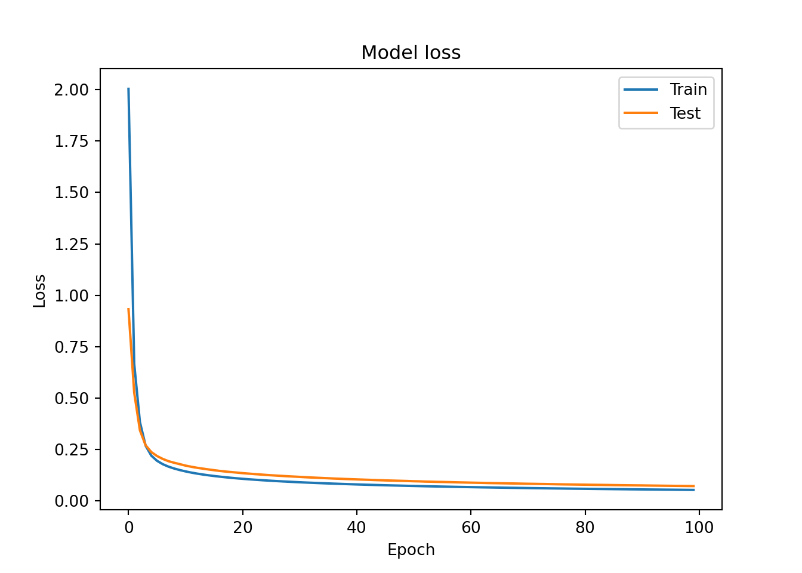
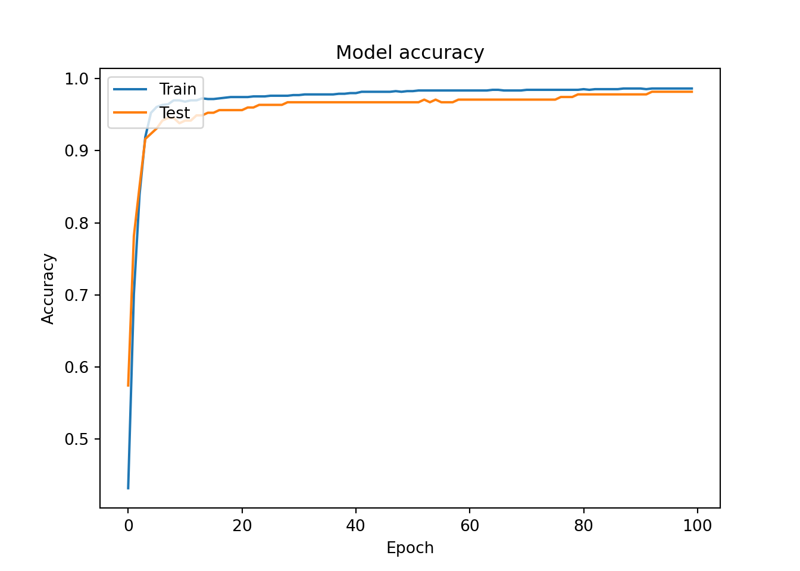

<!DOCTYPE html>
<html xmlns="http://www.w3.org/1999/xhtml" lang="en" xml:lang="en"><head>

<meta charset="utf-8">
<meta name="generator" content="quarto-1.4.549">

<meta name="viewport" content="width=device-width, initial-scale=1.0, user-scalable=yes">

<meta name="author" content="Mburu">
<meta name="dcterms.date" content="2024-03-04">

<title>Personal Blog - Introduction to Deep Learning with Keras</title>
<style>
code{white-space: pre-wrap;}
span.smallcaps{font-variant: small-caps;}
div.columns{display: flex; gap: min(4vw, 1.5em);}
div.column{flex: auto; overflow-x: auto;}
div.hanging-indent{margin-left: 1.5em; text-indent: -1.5em;}
ul.task-list{list-style: none;}
ul.task-list li input[type="checkbox"] {
  width: 0.8em;
  margin: 0 0.8em 0.2em -1em; /* quarto-specific, see https://github.com/quarto-dev/quarto-cli/issues/4556 */ 
  vertical-align: middle;
}
/* CSS for syntax highlighting */
pre > code.sourceCode { white-space: pre; position: relative; }
pre > code.sourceCode > span { line-height: 1.25; }
pre > code.sourceCode > span:empty { height: 1.2em; }
.sourceCode { overflow: visible; }
code.sourceCode > span { color: inherit; text-decoration: inherit; }
div.sourceCode { margin: 1em 0; }
pre.sourceCode { margin: 0; }
@media screen {
div.sourceCode { overflow: auto; }
}
@media print {
pre > code.sourceCode { white-space: pre-wrap; }
pre > code.sourceCode > span { text-indent: -5em; padding-left: 5em; }
}
pre.numberSource code
  { counter-reset: source-line 0; }
pre.numberSource code > span
  { position: relative; left: -4em; counter-increment: source-line; }
pre.numberSource code > span > a:first-child::before
  { content: counter(source-line);
    position: relative; left: -1em; text-align: right; vertical-align: baseline;
    border: none; display: inline-block;
    -webkit-touch-callout: none; -webkit-user-select: none;
    -khtml-user-select: none; -moz-user-select: none;
    -ms-user-select: none; user-select: none;
    padding: 0 4px; width: 4em;
  }
pre.numberSource { margin-left: 3em;  padding-left: 4px; }
div.sourceCode
  {   }
@media screen {
pre > code.sourceCode > span > a:first-child::before { text-decoration: underline; }
}
</style>


<script src="../../site_libs/quarto-nav/quarto-nav.js"></script>
<script src="../../site_libs/quarto-nav/headroom.min.js"></script>
<script src="../../site_libs/clipboard/clipboard.min.js"></script>
<script src="../../site_libs/quarto-search/autocomplete.umd.js"></script>
<script src="../../site_libs/quarto-search/fuse.min.js"></script>
<script src="../../site_libs/quarto-search/quarto-search.js"></script>
<meta name="quarto:offset" content="../../">
<link href="../../milkyway.jpeg" rel="icon" type="image/jpeg">
<script src="../../site_libs/quarto-html/quarto.js"></script>
<script src="../../site_libs/quarto-html/popper.min.js"></script>
<script src="../../site_libs/quarto-html/tippy.umd.min.js"></script>
<script src="../../site_libs/quarto-html/anchor.min.js"></script>
<link href="../../site_libs/quarto-html/tippy.css" rel="stylesheet">
<link href="../../site_libs/quarto-html/quarto-syntax-highlighting.css" rel="stylesheet" id="quarto-text-highlighting-styles">
<script src="../../site_libs/bootstrap/bootstrap.min.js"></script>
<link href="../../site_libs/bootstrap/bootstrap-icons.css" rel="stylesheet">
<link href="../../site_libs/bootstrap/bootstrap.min.css" rel="stylesheet" id="quarto-bootstrap" data-mode="light">
<script id="quarto-search-options" type="application/json">{
  "location": "navbar",
  "copy-button": false,
  "collapse-after": 3,
  "panel-placement": "end",
  "type": "overlay",
  "limit": 50,
  "keyboard-shortcut": [
    "f",
    "/",
    "s"
  ],
  "show-item-context": false,
  "language": {
    "search-no-results-text": "No results",
    "search-matching-documents-text": "matching documents",
    "search-copy-link-title": "Copy link to search",
    "search-hide-matches-text": "Hide additional matches",
    "search-more-match-text": "more match in this document",
    "search-more-matches-text": "more matches in this document",
    "search-clear-button-title": "Clear",
    "search-text-placeholder": "",
    "search-detached-cancel-button-title": "Cancel",
    "search-submit-button-title": "Submit",
    "search-label": "Search"
  }
}</script>
<script async="" src="https://www.googletagmanager.com/gtag/js?id=G-BFNZ97VTLJ"></script>

<script type="text/javascript">

window.dataLayer = window.dataLayer || [];
function gtag(){dataLayer.push(arguments);}
gtag('js', new Date());
gtag('config', 'G-BFNZ97VTLJ', { 'anonymize_ip': true});
</script>
<style>html{ scroll-behavior: smooth; }</style>

  <script src="https://polyfill.io/v3/polyfill.min.js?features=es6"></script>
  <script src="https://cdn.jsdelivr.net/npm/mathjax@3/es5/tex-chtml-full.js" type="text/javascript"></script>

<script type="text/javascript">
const typesetMath = (el) => {
  if (window.MathJax) {
    // MathJax Typeset
    window.MathJax.typeset([el]);
  } else if (window.katex) {
    // KaTeX Render
    var mathElements = el.getElementsByClassName("math");
    var macros = [];
    for (var i = 0; i < mathElements.length; i++) {
      var texText = mathElements[i].firstChild;
      if (mathElements[i].tagName == "SPAN") {
        window.katex.render(texText.data, mathElements[i], {
          displayMode: mathElements[i].classList.contains('display'),
          throwOnError: false,
          macros: macros,
          fleqn: false
        });
      }
    }
  }
}
window.Quarto = {
  typesetMath
};
</script>

<link rel="stylesheet" href="../../style.css">
<meta property="og:title" content="Personal Blog - Introduction to Deep Learning with Keras">
<meta property="og:site_name" content="Personal Blog">
<meta name="twitter:title" content="Personal Blog - Introduction to Deep Learning with Keras">
<meta name="twitter:card" content="summary">
</head>

<body class="nav-fixed">

<div id="quarto-search-results"></div>
  <header id="quarto-header" class="headroom fixed-top">
    <nav class="navbar navbar-expand-lg " data-bs-theme="dark">
      <div class="navbar-container container-fluid">
      <div class="navbar-brand-container mx-auto">
    <a class="navbar-brand" href="../../index.html">
    <span class="navbar-title">Personal Blog</span>
    </a>
  </div>
            <div id="quarto-search" class="" title="Search"></div>
          <button class="navbar-toggler" type="button" data-bs-toggle="collapse" data-bs-target="#navbarCollapse" aria-controls="navbarCollapse" aria-expanded="false" aria-label="Toggle navigation" onclick="if (window.quartoToggleHeadroom) { window.quartoToggleHeadroom(); }">
  <span class="navbar-toggler-icon"></span>
</button>
          <div class="collapse navbar-collapse" id="navbarCollapse">
            <ul class="navbar-nav navbar-nav-scroll me-auto">
  <li class="nav-item">
    <a class="nav-link" href="../../index.html"> 
<span class="menu-text">Home</span></a>
  </li>  
  <li class="nav-item">
    <a class="nav-link" href="../../datacamp.html"> 
<span class="menu-text">Data Camp Courses</span></a>
  </li>  
</ul>
            <ul class="navbar-nav navbar-nav-scroll ms-auto">
  <li class="nav-item">
    <a class="nav-link" href="../../about.html"> 
<span class="menu-text">About</span></a>
  </li>  
  <li class="nav-item compact">
    <a class="nav-link" href="https://github.com/m-mburu"> <i class="bi bi-github" role="img">
</i> 
<span class="menu-text"></span></a>
  </li>  
  <li class="nav-item compact">
    <a class="nav-link" href="https://twitter.com/mmburu_w"> <i class="bi bi-twitter" role="img">
</i> 
<span class="menu-text"></span></a>
  </li>  
</ul>
          </div> <!-- /navcollapse -->
          <div class="quarto-navbar-tools">
  <a href="" class="quarto-reader-toggle quarto-navigation-tool px-1" onclick="window.quartoToggleReader(); return false;" title="Toggle reader mode">
  <div class="quarto-reader-toggle-btn">
  <i class="bi"></i>
  </div>
</a>
</div>
      </div> <!-- /container-fluid -->
    </nav>
</header>
<!-- content -->
<div id="quarto-content" class="quarto-container page-columns page-rows-contents page-layout-article page-navbar">
<!-- sidebar -->
<!-- margin-sidebar -->
    <div id="quarto-margin-sidebar" class="sidebar margin-sidebar">
        <nav id="TOC" role="doc-toc" class="toc-active">
    <h2 id="toc-title">On this page</h2>
   
  <ul>
  <li><a href="#introducing-keras" id="toc-introducing-keras" class="nav-link active" data-scroll-target="#introducing-keras">Introducing Keras</a>
  <ul>
  <li><a href="#hello-nets" id="toc-hello-nets" class="nav-link" data-scroll-target="#hello-nets">Hello nets!</a></li>
  <li><a href="#counting-parameters" id="toc-counting-parameters" class="nav-link" data-scroll-target="#counting-parameters">Counting parameters</a>
  <ul class="collapse">
  <li><a href="#question" id="toc-question" class="nav-link" data-scroll-target="#question">Question</a></li>
  </ul></li>
  <li><a href="#build-as-shown" id="toc-build-as-shown" class="nav-link" data-scroll-target="#build-as-shown">Build as shown!</a></li>
  <li><a href="#specifying-a-model" id="toc-specifying-a-model" class="nav-link" data-scroll-target="#specifying-a-model">Specifying a model</a></li>
  <li><a href="#training" id="toc-training" class="nav-link" data-scroll-target="#training">Training</a></li>
  <li><a href="#predicting-the-orbit" id="toc-predicting-the-orbit" class="nav-link" data-scroll-target="#predicting-the-orbit">Predicting the orbit!</a></li>
  </ul></li>
  <li><a href="#going-deeper" id="toc-going-deeper" class="nav-link" data-scroll-target="#going-deeper">Going Deeper</a>
  <ul>
  <li><a href="#exploring-dollar-bills" id="toc-exploring-dollar-bills" class="nav-link" data-scroll-target="#exploring-dollar-bills">Exploring dollar bills</a></li>
  <li><a href="#a-binary-classification-model" id="toc-a-binary-classification-model" class="nav-link" data-scroll-target="#a-binary-classification-model">A binary classification model</a></li>
  <li><a href="#is-this-dollar-bill-fake" id="toc-is-this-dollar-bill-fake" class="nav-link" data-scroll-target="#is-this-dollar-bill-fake">Is this dollar bill fake ?</a></li>
  <li><a href="#a-multi-class-model" id="toc-a-multi-class-model" class="nav-link" data-scroll-target="#a-multi-class-model">A multi-class model</a></li>
  <li><a href="#prepare-your-dataset" id="toc-prepare-your-dataset" class="nav-link" data-scroll-target="#prepare-your-dataset">Prepare your dataset</a></li>
  <li><a href="#training-on-dart-throwers" id="toc-training-on-dart-throwers" class="nav-link" data-scroll-target="#training-on-dart-throwers">Training on dart throwers</a></li>
  <li><a href="#softmax-predictions" id="toc-softmax-predictions" class="nav-link" data-scroll-target="#softmax-predictions">Softmax predictions</a></li>
  <li><a href="#an-irrigation-machine" id="toc-an-irrigation-machine" class="nav-link" data-scroll-target="#an-irrigation-machine">An irrigation machine</a></li>
  <li><a href="#training-with-multiple-labels" id="toc-training-with-multiple-labels" class="nav-link" data-scroll-target="#training-with-multiple-labels">Training with multiple labels</a></li>
  <li><a href="#the-history-callback" id="toc-the-history-callback" class="nav-link" data-scroll-target="#the-history-callback">The history callback</a></li>
  <li><a href="#early-stopping-your-model" id="toc-early-stopping-your-model" class="nav-link" data-scroll-target="#early-stopping-your-model">Early stopping your model</a></li>
  <li><a href="#a-combination-of-callbacks" id="toc-a-combination-of-callbacks" class="nav-link" data-scroll-target="#a-combination-of-callbacks">A combination of callbacks</a></li>
  </ul></li>
  <li><a href="#improving-your-model-performance" id="toc-improving-your-model-performance" class="nav-link" data-scroll-target="#improving-your-model-performance">Improving Your Model Performance</a>
  <ul>
  <li><a href="#learning-the-digits" id="toc-learning-the-digits" class="nav-link" data-scroll-target="#learning-the-digits">Learning the digits</a></li>
  <li><a href="#is-the-model-overfitting" id="toc-is-the-model-overfitting" class="nav-link" data-scroll-target="#is-the-model-overfitting">Is the model overfitting?</a></li>
  <li><a href="#do-we-need-more-data" id="toc-do-we-need-more-data" class="nav-link" data-scroll-target="#do-we-need-more-data">Do we need more data?</a></li>
  <li><a href="#different-activation-functions" id="toc-different-activation-functions" class="nav-link" data-scroll-target="#different-activation-functions">Different activation functions</a></li>
  <li><a href="#comparing-activation-functions" id="toc-comparing-activation-functions" class="nav-link" data-scroll-target="#comparing-activation-functions">Comparing activation functions</a>
  <ul class="collapse">
  <li><a href="#comparing-activation-functions-ii" id="toc-comparing-activation-functions-ii" class="nav-link" data-scroll-target="#comparing-activation-functions-ii">Comparing activation functions II</a></li>
  </ul></li>
  </ul></li>
  </ul>
</nav>
    </div>
<!-- main -->
<main class="content" id="quarto-document-content">

<header id="title-block-header" class="quarto-title-block default">
<div class="quarto-title">
<h1 class="title">Introduction to Deep Learning with Keras</h1>
</div>


<div class="quarto-title-meta">

    <div>
    <div class="quarto-title-meta-heading">Author</div>
    <div class="quarto-title-meta-contents">
             <p>Mburu </p>
          </div>
  </div>
    
    <div>
    <div class="quarto-title-meta-heading">Published</div>
    <div class="quarto-title-meta-contents">
      <p class="date">March 4, 2024</p>
    </div>
  </div>
  
    
  </div>
  


</header>


<section id="introducing-keras" class="level1">
<h1>Introducing Keras</h1>
<section id="hello-nets" class="level2">
<h2 class="anchored" data-anchor-id="hello-nets">Hello nets!</h2>
<p>You’re going to build a simple neural network to get a feeling of how quickly it is to accomplish this in Keras.</p>
<p>You will build a network that takes two numbers as an input, passes them through a hidden layer of 10 neurons, and finally outputs a single non-constrained number.</p>
<p>A non-constrained output can be obtained by avoiding setting an activation function in the output layer. This is useful for problems like regression, when we want our output to be able to take any non-constrained value.</p>
<p>include hello.nets.png </p>
<div class="cell">
<div class="sourceCode cell-code" id="cb1"><pre class="sourceCode python code-with-copy"><code class="sourceCode python"><span id="cb1-1"><a href="#cb1-1" aria-hidden="true" tabindex="-1"></a><span class="co"># Import the Sequential model and Dense layer</span></span>
<span id="cb1-2"><a href="#cb1-2" aria-hidden="true" tabindex="-1"></a><span class="im">from</span> tensorflow.keras.models <span class="im">import</span> Sequential</span>
<span id="cb1-3"><a href="#cb1-3" aria-hidden="true" tabindex="-1"></a><span class="im">from</span> tensorflow.keras.layers <span class="im">import</span> Dense</span>
<span id="cb1-4"><a href="#cb1-4" aria-hidden="true" tabindex="-1"></a></span>
<span id="cb1-5"><a href="#cb1-5" aria-hidden="true" tabindex="-1"></a><span class="co"># Create a Sequential model</span></span>
<span id="cb1-6"><a href="#cb1-6" aria-hidden="true" tabindex="-1"></a>model <span class="op">=</span> Sequential()</span>
<span id="cb1-7"><a href="#cb1-7" aria-hidden="true" tabindex="-1"></a></span>
<span id="cb1-8"><a href="#cb1-8" aria-hidden="true" tabindex="-1"></a><span class="co"># Add an input layer and a hidden layer with 10 neurons</span></span>
<span id="cb1-9"><a href="#cb1-9" aria-hidden="true" tabindex="-1"></a>model.add(Dense(<span class="dv">10</span>, input_shape<span class="op">=</span>(<span class="dv">2</span>,), activation<span class="op">=</span><span class="st">"relu"</span>))</span>
<span id="cb1-10"><a href="#cb1-10" aria-hidden="true" tabindex="-1"></a></span>
<span id="cb1-11"><a href="#cb1-11" aria-hidden="true" tabindex="-1"></a><span class="co"># Add a 1-neuron output layer</span></span>
<span id="cb1-12"><a href="#cb1-12" aria-hidden="true" tabindex="-1"></a>model.add(Dense(<span class="dv">1</span>))</span>
<span id="cb1-13"><a href="#cb1-13" aria-hidden="true" tabindex="-1"></a></span>
<span id="cb1-14"><a href="#cb1-14" aria-hidden="true" tabindex="-1"></a><span class="co"># Summarise your model</span></span>
<span id="cb1-15"><a href="#cb1-15" aria-hidden="true" tabindex="-1"></a>model.summary()</span></code><button title="Copy to Clipboard" class="code-copy-button"><i class="bi"></i></button></pre></div>
<div class="cell-output cell-output-stdout">
<pre><code>Model: "sequential"
_________________________________________________________________
 Layer (type)                Output Shape              Param #   
=================================================================
 dense (Dense)               (None, 10)                30        
                                                                 
 dense_1 (Dense)             (None, 1)                 11        
                                                                 
=================================================================
Total params: 41 (164.00 Byte)
Trainable params: 41 (164.00 Byte)
Non-trainable params: 0 (0.00 Byte)
_________________________________________________________________</code></pre>
</div>
</div>
</section>
<section id="counting-parameters" class="level2">
<h2 class="anchored" data-anchor-id="counting-parameters">Counting parameters</h2>
<p>You’ve just created a neural network. But you’re going to create a new one now, taking some time to think about the weights of each layer. The Keras Dense layer and the Sequential model are already loaded for you to use.</p>
<p>This is the network you will be creating:</p>
<p></p>
<div class="cell">
<div class="sourceCode cell-code" id="cb3"><pre class="sourceCode python code-with-copy"><code class="sourceCode python"><span id="cb3-1"><a href="#cb3-1" aria-hidden="true" tabindex="-1"></a><span class="co"># Instantiate a new Sequential model</span></span>
<span id="cb3-2"><a href="#cb3-2" aria-hidden="true" tabindex="-1"></a>model <span class="op">=</span> Sequential()</span>
<span id="cb3-3"><a href="#cb3-3" aria-hidden="true" tabindex="-1"></a></span>
<span id="cb3-4"><a href="#cb3-4" aria-hidden="true" tabindex="-1"></a><span class="co"># Add a Dense layer with five neurons and three inputs</span></span>
<span id="cb3-5"><a href="#cb3-5" aria-hidden="true" tabindex="-1"></a>model.add(Dense(<span class="dv">5</span>, input_shape<span class="op">=</span>(<span class="dv">3</span>,), activation<span class="op">=</span><span class="st">"relu"</span>))</span>
<span id="cb3-6"><a href="#cb3-6" aria-hidden="true" tabindex="-1"></a></span>
<span id="cb3-7"><a href="#cb3-7" aria-hidden="true" tabindex="-1"></a><span class="co"># Add a final Dense layer with one neuron and no activation</span></span>
<span id="cb3-8"><a href="#cb3-8" aria-hidden="true" tabindex="-1"></a>model.add(Dense(<span class="dv">1</span>))</span>
<span id="cb3-9"><a href="#cb3-9" aria-hidden="true" tabindex="-1"></a></span>
<span id="cb3-10"><a href="#cb3-10" aria-hidden="true" tabindex="-1"></a><span class="co"># Summarize your model</span></span>
<span id="cb3-11"><a href="#cb3-11" aria-hidden="true" tabindex="-1"></a>model.summary()</span></code><button title="Copy to Clipboard" class="code-copy-button"><i class="bi"></i></button></pre></div>
<div class="cell-output cell-output-stdout">
<pre><code>Model: "sequential_1"
_________________________________________________________________
 Layer (type)                Output Shape              Param #   
=================================================================
 dense_2 (Dense)             (None, 5)                 20        
                                                                 
 dense_3 (Dense)             (None, 1)                 6         
                                                                 
=================================================================
Total params: 26 (104.00 Byte)
Trainable params: 26 (104.00 Byte)
Non-trainable params: 0 (0.00 Byte)
_________________________________________________________________</code></pre>
</div>
</div>
<section id="question" class="level3">
<h3 class="anchored" data-anchor-id="question">Question</h3>
<ul>
<li><p>Given the model you just built, which answer is correct regarding the number of weights (parameters) in the hidden layer?</p></li>
<li><p><strong><em>There are 20 parameters, 15 from the connections of our inputs to our hidden layer and 5 from the bias weight of each neuron in the hidden layer.</em></strong></p></li>
</ul>
</section>
</section>
<section id="build-as-shown" class="level2">
<h2 class="anchored" data-anchor-id="build-as-shown">Build as shown!</h2>
<p>You will take on a final challenge before moving on to the next lesson. Build the network shown in the picture below. Prove your mastered Keras basics in no time!</p>
<p></p>
<div class="cell">
<div class="sourceCode cell-code" id="cb5"><pre class="sourceCode python code-with-copy"><code class="sourceCode python"><span id="cb5-1"><a href="#cb5-1" aria-hidden="true" tabindex="-1"></a></span>
<span id="cb5-2"><a href="#cb5-2" aria-hidden="true" tabindex="-1"></a><span class="co"># Instantiate a Sequential model</span></span>
<span id="cb5-3"><a href="#cb5-3" aria-hidden="true" tabindex="-1"></a>model <span class="op">=</span> Sequential()</span>
<span id="cb5-4"><a href="#cb5-4" aria-hidden="true" tabindex="-1"></a></span>
<span id="cb5-5"><a href="#cb5-5" aria-hidden="true" tabindex="-1"></a><span class="co"># Build the input and hidden layer</span></span>
<span id="cb5-6"><a href="#cb5-6" aria-hidden="true" tabindex="-1"></a>model.add(Dense(<span class="dv">3</span>, input_shape <span class="op">=</span> (<span class="dv">2</span>,)))</span>
<span id="cb5-7"><a href="#cb5-7" aria-hidden="true" tabindex="-1"></a></span>
<span id="cb5-8"><a href="#cb5-8" aria-hidden="true" tabindex="-1"></a><span class="co"># Add the ouput layer</span></span>
<span id="cb5-9"><a href="#cb5-9" aria-hidden="true" tabindex="-1"></a>model.add(Dense(<span class="dv">1</span>))</span></code><button title="Copy to Clipboard" class="code-copy-button"><i class="bi"></i></button></pre></div>
</div>
</section>
<section id="specifying-a-model" class="level2">
<h2 class="anchored" data-anchor-id="specifying-a-model">Specifying a model</h2>
<p>You will build a simple regression model to predict the orbit of the meteor!</p>
<p>Your training data consist of measurements taken at time steps from -10 minutes before the impact region to +10 minutes after. Each time step can be viewed as an X coordinate in our graph, which has an associated position Y for the meteor orbit at that time step.</p>
<p>Note that you can view this problem as approximating a quadratic function via the use of neural networks.</p>
<p></p>
<p>This data is stored in two numpy arrays: one called time_steps , what we call features, and another called y_positions, with the labels. Go on and build your model! It should be able to predict the y positions for the meteor orbit at future time steps.</p>
<p>Keras Sequential model and Dense layers are available for you to use.</p>
<div class="cell">
<div class="sourceCode cell-code" id="cb6"><pre class="sourceCode python code-with-copy"><code class="sourceCode python"><span id="cb6-1"><a href="#cb6-1" aria-hidden="true" tabindex="-1"></a><span class="co"># Instantiate a Sequential model</span></span>
<span id="cb6-2"><a href="#cb6-2" aria-hidden="true" tabindex="-1"></a>model <span class="op">=</span> Sequential()</span>
<span id="cb6-3"><a href="#cb6-3" aria-hidden="true" tabindex="-1"></a></span>
<span id="cb6-4"><a href="#cb6-4" aria-hidden="true" tabindex="-1"></a><span class="co"># Add a Dense layer with 50 neurons and an input of 1 neuron</span></span>
<span id="cb6-5"><a href="#cb6-5" aria-hidden="true" tabindex="-1"></a>model.add(Dense(<span class="dv">50</span>, input_shape<span class="op">=</span>(<span class="dv">1</span>,), activation<span class="op">=</span><span class="st">'relu'</span>))</span>
<span id="cb6-6"><a href="#cb6-6" aria-hidden="true" tabindex="-1"></a></span>
<span id="cb6-7"><a href="#cb6-7" aria-hidden="true" tabindex="-1"></a><span class="co"># Add two Dense layers with 50 neurons and relu activation</span></span>
<span id="cb6-8"><a href="#cb6-8" aria-hidden="true" tabindex="-1"></a>model.add(Dense(<span class="dv">50</span>, activation<span class="op">=</span> <span class="st">"relu"</span>))</span>
<span id="cb6-9"><a href="#cb6-9" aria-hidden="true" tabindex="-1"></a>model.add(Dense(<span class="dv">50</span>, activation<span class="op">=</span> <span class="st">"relu"</span>))</span>
<span id="cb6-10"><a href="#cb6-10" aria-hidden="true" tabindex="-1"></a></span>
<span id="cb6-11"><a href="#cb6-11" aria-hidden="true" tabindex="-1"></a><span class="co"># End your model with a Dense layer and no activation</span></span>
<span id="cb6-12"><a href="#cb6-12" aria-hidden="true" tabindex="-1"></a>model.add(Dense(<span class="dv">1</span>))</span></code><button title="Copy to Clipboard" class="code-copy-button"><i class="bi"></i></button></pre></div>
</div>
</section>
<section id="training" class="level2">
<h2 class="anchored" data-anchor-id="training">Training</h2>
<p>You’re going to train your first model in this course, and for a good cause!</p>
<p>Remember that before training your Keras models you need to compile them. This can be done with the .compile() method. The .compile() method takes arguments such as the optimizer, used for weight updating, and the loss function, which is what we want to minimize. Training your model is as easy as calling the .fit() method, passing on the features, labels and a number of epochs to train for.</p>
<p>The regression model you built in the previous exercise is loaded for you to use, along with the time_steps and y_positions data. Train it and evaluate it on this very same data, let’s see if your model can learn the meteor’s trajectory.</p>
<div class="cell">
<div class="sourceCode cell-code" id="cb7"><pre class="sourceCode python code-with-copy"><code class="sourceCode python"><span id="cb7-1"><a href="#cb7-1" aria-hidden="true" tabindex="-1"></a>time_steps_script <span class="op">=</span> <span class="st">"time_steps.py"</span></span>
<span id="cb7-2"><a href="#cb7-2" aria-hidden="true" tabindex="-1"></a></span>
<span id="cb7-3"><a href="#cb7-3" aria-hidden="true" tabindex="-1"></a>filename <span class="op">=</span> <span class="st">'path_to_your_script.py'</span></span>
<span id="cb7-4"><a href="#cb7-4" aria-hidden="true" tabindex="-1"></a></span>
<span id="cb7-5"><a href="#cb7-5" aria-hidden="true" tabindex="-1"></a><span class="cf">with</span> <span class="bu">open</span>(time_steps_script, <span class="st">'r'</span>) <span class="im">as</span> <span class="bu">file</span>:</span>
<span id="cb7-6"><a href="#cb7-6" aria-hidden="true" tabindex="-1"></a>    script_content <span class="op">=</span> <span class="bu">file</span>.read()</span>
<span id="cb7-7"><a href="#cb7-7" aria-hidden="true" tabindex="-1"></a></span>
<span id="cb7-8"><a href="#cb7-8" aria-hidden="true" tabindex="-1"></a><span class="bu">exec</span>(script_content)</span>
<span id="cb7-9"><a href="#cb7-9" aria-hidden="true" tabindex="-1"></a></span>
<span id="cb7-10"><a href="#cb7-10" aria-hidden="true" tabindex="-1"></a><span class="co"># Compile your model</span></span>
<span id="cb7-11"><a href="#cb7-11" aria-hidden="true" tabindex="-1"></a>model.<span class="bu">compile</span>(optimizer <span class="op">=</span> <span class="st">"adam"</span>, loss <span class="op">=</span> <span class="st">"mse"</span>)</span>
<span id="cb7-12"><a href="#cb7-12" aria-hidden="true" tabindex="-1"></a></span>
<span id="cb7-13"><a href="#cb7-13" aria-hidden="true" tabindex="-1"></a><span class="bu">print</span>(<span class="st">"Training started..., this can take a while:"</span>)</span></code><button title="Copy to Clipboard" class="code-copy-button"><i class="bi"></i></button></pre></div>
<div class="cell-output cell-output-stdout">
<pre><code>Training started..., this can take a while:</code></pre>
</div>
<div class="sourceCode cell-code" id="cb9"><pre class="sourceCode python code-with-copy"><code class="sourceCode python"><span id="cb9-1"><a href="#cb9-1" aria-hidden="true" tabindex="-1"></a><span class="co"># Fit your model on your data for 30 epochs</span></span>
<span id="cb9-2"><a href="#cb9-2" aria-hidden="true" tabindex="-1"></a>model.fit(time_steps,y_positions, epochs <span class="op">=</span> <span class="dv">30</span>)</span></code><button title="Copy to Clipboard" class="code-copy-button"><i class="bi"></i></button></pre></div>
<div class="cell-output cell-output-stdout">
<pre><code>Epoch 1/30

 1/63 [..............................] - ETA: 35s - loss: 3013.6892
63/63 [==============================] - 1s 798us/step - loss: 1295.2914
Epoch 2/30

 1/63 [..............................] - ETA: 0s - loss: 445.6689
63/63 [==============================] - 0s 717us/step - loss: 168.8447
Epoch 3/30

 1/63 [..............................] - ETA: 0s - loss: 152.5248
63/63 [==============================] - 0s 710us/step - loss: 133.2273
Epoch 4/30

 1/63 [..............................] - ETA: 0s - loss: 107.8914
63/63 [==============================] - 0s 707us/step - loss: 113.6953
Epoch 5/30

 1/63 [..............................] - ETA: 0s - loss: 116.0950
63/63 [==============================] - 0s 726us/step - loss: 93.0237
Epoch 6/30

 1/63 [..............................] - ETA: 0s - loss: 83.3604
63/63 [==============================] - 0s 708us/step - loss: 69.4467
Epoch 7/30

 1/63 [..............................] - ETA: 0s - loss: 59.2199
63/63 [==============================] - 0s 746us/step - loss: 47.0101
Epoch 8/30

 1/63 [..............................] - ETA: 0s - loss: 37.2261
63/63 [==============================] - 0s 730us/step - loss: 29.9649
Epoch 9/30

 1/63 [..............................] - ETA: 0s - loss: 23.8827
63/63 [==============================] - 0s 738us/step - loss: 17.7592
Epoch 10/30

 1/63 [..............................] - ETA: 0s - loss: 8.1624
63/63 [==============================] - 0s 745us/step - loss: 11.8088
Epoch 11/30

 1/63 [..............................] - ETA: 0s - loss: 11.8732
63/63 [==============================] - 0s 741us/step - loss: 8.0650
Epoch 12/30

 1/63 [..............................] - ETA: 0s - loss: 6.1734
63/63 [==============================] - 0s 755us/step - loss: 5.1860
Epoch 13/30

 1/63 [..............................] - ETA: 0s - loss: 4.3378
63/63 [==============================] - 0s 736us/step - loss: 3.7901
Epoch 14/30

 1/63 [..............................] - ETA: 0s - loss: 3.0962
63/63 [==============================] - 0s 734us/step - loss: 2.3846
Epoch 15/30

 1/63 [..............................] - ETA: 0s - loss: 1.2747
63/63 [==============================] - 0s 733us/step - loss: 1.8001
Epoch 16/30

 1/63 [..............................] - ETA: 0s - loss: 2.8865
63/63 [==============================] - 0s 703us/step - loss: 1.2700
Epoch 17/30

 1/63 [..............................] - ETA: 0s - loss: 0.6386
63/63 [==============================] - 0s 670us/step - loss: 1.0102
Epoch 18/30

 1/63 [..............................] - ETA: 0s - loss: 0.3986
63/63 [==============================] - 0s 667us/step - loss: 0.7654
Epoch 19/30

 1/63 [..............................] - ETA: 0s - loss: 0.7580
63/63 [==============================] - 0s 690us/step - loss: 0.6386
Epoch 20/30

 1/63 [..............................] - ETA: 0s - loss: 0.4158
63/63 [==============================] - 0s 684us/step - loss: 0.5360
Epoch 21/30

 1/63 [..............................] - ETA: 0s - loss: 0.4329
63/63 [==============================] - 0s 718us/step - loss: 0.4634
Epoch 22/30

 1/63 [..............................] - ETA: 0s - loss: 0.3869
63/63 [==============================] - 0s 717us/step - loss: 0.3525
Epoch 23/30

 1/63 [..............................] - ETA: 0s - loss: 0.3523
63/63 [==============================] - 0s 738us/step - loss: 0.3447
Epoch 24/30

 1/63 [..............................] - ETA: 0s - loss: 0.4110
63/63 [==============================] - 0s 666us/step - loss: 0.2389
Epoch 25/30

 1/63 [..............................] - ETA: 0s - loss: 0.0322
63/63 [==============================] - 0s 666us/step - loss: 0.1927
Epoch 26/30

 1/63 [..............................] - ETA: 0s - loss: 0.1377
63/63 [==============================] - 0s 670us/step - loss: 0.1663
Epoch 27/30

 1/63 [..............................] - ETA: 0s - loss: 0.1252
63/63 [==============================] - 0s 669us/step - loss: 0.1480
Epoch 28/30

 1/63 [..............................] - ETA: 0s - loss: 0.3489
63/63 [==============================] - 0s 695us/step - loss: 0.1666
Epoch 29/30

 1/63 [..............................] - ETA: 0s - loss: 0.2228
63/63 [==============================] - 0s 700us/step - loss: 0.1471
Epoch 30/30

 1/63 [..............................] - ETA: 0s - loss: 0.0654
63/63 [==============================] - 0s 724us/step - loss: 0.1060
&lt;keras.src.callbacks.History object at 0x7f05785f0be0&gt;</code></pre>
</div>
<div class="sourceCode cell-code" id="cb11"><pre class="sourceCode python code-with-copy"><code class="sourceCode python"><span id="cb11-1"><a href="#cb11-1" aria-hidden="true" tabindex="-1"></a><span class="co"># Evaluate your model </span></span>
<span id="cb11-2"><a href="#cb11-2" aria-hidden="true" tabindex="-1"></a><span class="bu">print</span>(<span class="st">"Final loss value:"</span>,model.evaluate(time_steps, y_positions))</span></code><button title="Copy to Clipboard" class="code-copy-button"><i class="bi"></i></button></pre></div>
<div class="cell-output cell-output-stdout">
<pre><code>
 1/63 [..............................] - ETA: 4s - loss: 1.7272
63/63 [==============================] - 0s 568us/step - loss: 0.1766
Final loss value: 0.17664873600006104</code></pre>
</div>
</div>
</section>
<section id="predicting-the-orbit" class="level2">
<h2 class="anchored" data-anchor-id="predicting-the-orbit">Predicting the orbit!</h2>
<p>You’ve already trained a model that approximates the orbit of the meteor approaching Earth and it’s loaded for you to use.</p>
<p>Since you trained your model for values between -10 and 10 minutes, your model hasn’t yet seen any other values for different time steps. You will now visualize how your model behaves on unseen data.</p>
<p>If you want to check the source code of plot_orbit, paste show_code(plot_orbit) into the console.</p>
<p>Hurry up, the Earth is running out of time!</p>
<p>Remember np.arange(x,y) produces a range of values from x to y-1. That is the [x, y) interval.</p>
<div class="cell">
<div class="sourceCode cell-code" id="cb13"><pre class="sourceCode python code-with-copy"><code class="sourceCode python"><span id="cb13-1"><a href="#cb13-1" aria-hidden="true" tabindex="-1"></a><span class="im">import</span> numpy <span class="im">as</span> np</span>
<span id="cb13-2"><a href="#cb13-2" aria-hidden="true" tabindex="-1"></a><span class="co"># Predict the twenty minutes orbit</span></span>
<span id="cb13-3"><a href="#cb13-3" aria-hidden="true" tabindex="-1"></a>twenty_min_orbit <span class="op">=</span> model.predict(np.arange(<span class="op">-</span><span class="dv">10</span>, <span class="dv">11</span>))</span></code><button title="Copy to Clipboard" class="code-copy-button"><i class="bi"></i></button></pre></div>
<div class="cell-output cell-output-stdout">
<pre><code>
1/1 [==============================] - ETA: 0s
1/1 [==============================] - 0s 55ms/step</code></pre>
</div>
<div class="sourceCode cell-code" id="cb15"><pre class="sourceCode python code-with-copy"><code class="sourceCode python"><span id="cb15-1"><a href="#cb15-1" aria-hidden="true" tabindex="-1"></a><span class="co"># Plot the twenty minute orbit </span></span>
<span id="cb15-2"><a href="#cb15-2" aria-hidden="true" tabindex="-1"></a>plot_orbit(twenty_min_orbit)</span></code><button title="Copy to Clipboard" class="code-copy-button"><i class="bi"></i></button></pre></div>
<div class="cell-output-display">
<div>
<figure class="figure">
<p></p>
</figure>
</div>
</div>
</div>
<div class="cell">
<div class="sourceCode cell-code" id="cb16"><pre class="sourceCode python code-with-copy"><code class="sourceCode python"><span id="cb16-1"><a href="#cb16-1" aria-hidden="true" tabindex="-1"></a><span class="co"># Predict the eighty minute orbit</span></span>
<span id="cb16-2"><a href="#cb16-2" aria-hidden="true" tabindex="-1"></a>eighty_min_orbit <span class="op">=</span> model.predict(np.arange(<span class="op">-</span><span class="dv">40</span>, <span class="dv">41</span>))</span></code><button title="Copy to Clipboard" class="code-copy-button"><i class="bi"></i></button></pre></div>
<div class="cell-output cell-output-stdout">
<pre><code>
1/3 [=========&gt;....................] - ETA: 0s
3/3 [==============================] - 0s 734us/step</code></pre>
</div>
<div class="sourceCode cell-code" id="cb18"><pre class="sourceCode python code-with-copy"><code class="sourceCode python"><span id="cb18-1"><a href="#cb18-1" aria-hidden="true" tabindex="-1"></a><span class="co"># Plot the eighty minute orbit </span></span>
<span id="cb18-2"><a href="#cb18-2" aria-hidden="true" tabindex="-1"></a>plot_orbit(eighty_min_orbit)</span></code><button title="Copy to Clipboard" class="code-copy-button"><i class="bi"></i></button></pre></div>
<div class="cell-output-display">
<div>
<figure class="figure">
<p></p>
</figure>
</div>
</div>
</div>
</section>
</section>
<section id="going-deeper" class="level1">
<h1>Going Deeper</h1>
<section id="exploring-dollar-bills" class="level2">
<h2 class="anchored" data-anchor-id="exploring-dollar-bills">Exploring dollar bills</h2>
<p>You will practice building classification models in Keras with the Banknote Authentication dataset.</p>
<p>Your goal is to distinguish between real and fake dollar bills. In order to do this, the dataset comes with 4 features: variance,skewness,kurtosis and entropy. These features are calculated by applying mathematical operations over the dollar bill images. The labels are found in the dataframe’s class column.</p>
<p></p>
<div class="cell">
<div class="sourceCode cell-code" id="cb19"><pre class="sourceCode python code-with-copy"><code class="sourceCode python"><span id="cb19-1"><a href="#cb19-1" aria-hidden="true" tabindex="-1"></a><span class="im">import</span> pandas <span class="im">as</span> pd</span>
<span id="cb19-2"><a href="#cb19-2" aria-hidden="true" tabindex="-1"></a>banknotes <span class="op">=</span> pd.read_csv(<span class="st">"data/banknotes.csv"</span>)</span>
<span id="cb19-3"><a href="#cb19-3" aria-hidden="true" tabindex="-1"></a></span>
<span id="cb19-4"><a href="#cb19-4" aria-hidden="true" tabindex="-1"></a><span class="co"># Import seaborn</span></span>
<span id="cb19-5"><a href="#cb19-5" aria-hidden="true" tabindex="-1"></a><span class="im">import</span> seaborn <span class="im">as</span> sns</span>
<span id="cb19-6"><a href="#cb19-6" aria-hidden="true" tabindex="-1"></a><span class="co"># Use pairplot and set the hue to be our class column</span></span>
<span id="cb19-7"><a href="#cb19-7" aria-hidden="true" tabindex="-1"></a>sns.pairplot(banknotes, hue<span class="op">=</span> <span class="st">"class"</span>) </span></code><button title="Copy to Clipboard" class="code-copy-button"><i class="bi"></i></button></pre></div>
<div class="cell-output-display">
<div>
<figure class="figure">
<p></p>
</figure>
</div>
</div>
<div class="sourceCode cell-code" id="cb20"><pre class="sourceCode python code-with-copy"><code class="sourceCode python"><span id="cb20-1"><a href="#cb20-1" aria-hidden="true" tabindex="-1"></a><span class="co"># Describe the data</span></span>
<span id="cb20-2"><a href="#cb20-2" aria-hidden="true" tabindex="-1"></a><span class="bu">print</span>(<span class="st">'Dataset stats: </span><span class="ch">\n</span><span class="st">'</span>,banknotes.describe())</span></code><button title="Copy to Clipboard" class="code-copy-button"><i class="bi"></i></button></pre></div>
<div class="cell-output cell-output-stdout">
<pre><code>Dataset stats: 
            variace     skewness     curtosis      entropy        class
count  1372.000000  1372.000000  1372.000000  1372.000000  1372.000000
mean      0.433735     1.922353     1.397627    -1.191657     0.444606
std       2.842763     5.869047     4.310030     2.101013     0.497103
min      -7.042100   -13.773100    -5.286100    -8.548200     0.000000
25%      -1.773000    -1.708200    -1.574975    -2.413450     0.000000
50%       0.496180     2.319650     0.616630    -0.586650     0.000000
75%       2.821475     6.814625     3.179250     0.394810     1.000000
max       6.824800    12.951600    17.927400     2.449500     1.000000</code></pre>
</div>
<div class="sourceCode cell-code" id="cb22"><pre class="sourceCode python code-with-copy"><code class="sourceCode python"><span id="cb22-1"><a href="#cb22-1" aria-hidden="true" tabindex="-1"></a><span class="co"># Count the number of observations per class</span></span>
<span id="cb22-2"><a href="#cb22-2" aria-hidden="true" tabindex="-1"></a><span class="bu">print</span>(<span class="st">'Observations per class: </span><span class="ch">\n</span><span class="st">'</span>,banknotes[<span class="st">"class"</span>].value_counts())</span></code><button title="Copy to Clipboard" class="code-copy-button"><i class="bi"></i></button></pre></div>
<div class="cell-output cell-output-stdout">
<pre><code>Observations per class: 
 class
0    762
1    610
Name: count, dtype: int64</code></pre>
</div>
<div class="cell-output-display">
<div>
<figure class="figure">
<p></p>
</figure>
</div>
</div>
</div>
</section>
<section id="a-binary-classification-model" class="level2">
<h2 class="anchored" data-anchor-id="a-binary-classification-model">A binary classification model</h2>
<p>Now that you know what the Banknote Authentication dataset looks like, we’ll build a simple model to distinguish between real and fake bills.</p>
<p>You will perform binary classification by using a single neuron as an output. The input layer will have 4 neurons since we have 4 features in our dataset. The model’s output will be a value constrained between 0 and 1.</p>
<p>We will interpret this output number as the probability of our input variables coming from a fake dollar bill, with 1 meaning we are certain it’s a fake bill.</p>
<p></p>
<div class="cell">
<div class="sourceCode cell-code" id="cb24"><pre class="sourceCode python code-with-copy"><code class="sourceCode python"><span id="cb24-1"><a href="#cb24-1" aria-hidden="true" tabindex="-1"></a><span class="co"># Import the sequential model and dense layer</span></span>
<span id="cb24-2"><a href="#cb24-2" aria-hidden="true" tabindex="-1"></a><span class="im">from</span> tensorflow.keras.models <span class="im">import</span> Sequential</span>
<span id="cb24-3"><a href="#cb24-3" aria-hidden="true" tabindex="-1"></a><span class="im">from</span> tensorflow.keras.layers <span class="im">import</span> Dense</span>
<span id="cb24-4"><a href="#cb24-4" aria-hidden="true" tabindex="-1"></a></span>
<span id="cb24-5"><a href="#cb24-5" aria-hidden="true" tabindex="-1"></a><span class="co"># Create a sequential model</span></span>
<span id="cb24-6"><a href="#cb24-6" aria-hidden="true" tabindex="-1"></a>model <span class="op">=</span> Sequential()</span>
<span id="cb24-7"><a href="#cb24-7" aria-hidden="true" tabindex="-1"></a></span>
<span id="cb24-8"><a href="#cb24-8" aria-hidden="true" tabindex="-1"></a><span class="co"># Add a dense layer </span></span>
<span id="cb24-9"><a href="#cb24-9" aria-hidden="true" tabindex="-1"></a>model.add(Dense(<span class="dv">1</span>, input_shape<span class="op">=</span>(<span class="dv">4</span>,), activation<span class="op">=</span> <span class="st">"sigmoid"</span>))</span>
<span id="cb24-10"><a href="#cb24-10" aria-hidden="true" tabindex="-1"></a></span>
<span id="cb24-11"><a href="#cb24-11" aria-hidden="true" tabindex="-1"></a><span class="co"># Compile your model</span></span>
<span id="cb24-12"><a href="#cb24-12" aria-hidden="true" tabindex="-1"></a>model.<span class="bu">compile</span>(loss<span class="op">=</span><span class="st">'binary_crossentropy'</span>, optimizer<span class="op">=</span><span class="st">"sgd"</span>, metrics<span class="op">=</span>[<span class="st">'accuracy'</span>])</span>
<span id="cb24-13"><a href="#cb24-13" aria-hidden="true" tabindex="-1"></a></span>
<span id="cb24-14"><a href="#cb24-14" aria-hidden="true" tabindex="-1"></a><span class="co"># Display a summary of your model</span></span>
<span id="cb24-15"><a href="#cb24-15" aria-hidden="true" tabindex="-1"></a>model.summary()</span></code><button title="Copy to Clipboard" class="code-copy-button"><i class="bi"></i></button></pre></div>
<div class="cell-output cell-output-stdout">
<pre><code>Model: "sequential_4"
_________________________________________________________________
 Layer (type)                Output Shape              Param #   
=================================================================
 dense_10 (Dense)            (None, 1)                 5         
                                                                 
=================================================================
Total params: 5 (20.00 Byte)
Trainable params: 5 (20.00 Byte)
Non-trainable params: 0 (0.00 Byte)
_________________________________________________________________</code></pre>
</div>
</div>
</section>
<section id="is-this-dollar-bill-fake" class="level2">
<h2 class="anchored" data-anchor-id="is-this-dollar-bill-fake">Is this dollar bill fake ?</h2>
<p>You are now ready to train your model and check how well it performs when classifying new bills! The dataset has already been partitioned into features: X_train &amp; X_test, and labels: y_train &amp; y_test.</p>
<div class="cell">
<div class="sourceCode cell-code" id="cb26"><pre class="sourceCode python code-with-copy"><code class="sourceCode python"><span id="cb26-1"><a href="#cb26-1" aria-hidden="true" tabindex="-1"></a><span class="im">from</span> sklearn.model_selection <span class="im">import</span> train_test_split</span>
<span id="cb26-2"><a href="#cb26-2" aria-hidden="true" tabindex="-1"></a><span class="co"># Separate features and labels</span></span>
<span id="cb26-3"><a href="#cb26-3" aria-hidden="true" tabindex="-1"></a>X <span class="op">=</span> banknotes.drop(<span class="st">'class'</span>, axis<span class="op">=</span><span class="dv">1</span>)  <span class="co"># Features</span></span>
<span id="cb26-4"><a href="#cb26-4" aria-hidden="true" tabindex="-1"></a>y <span class="op">=</span> banknotes[<span class="st">'class'</span>]  <span class="co"># Labels</span></span>
<span id="cb26-5"><a href="#cb26-5" aria-hidden="true" tabindex="-1"></a></span>
<span id="cb26-6"><a href="#cb26-6" aria-hidden="true" tabindex="-1"></a><span class="co"># Split the dataset into training and testing sets</span></span>
<span id="cb26-7"><a href="#cb26-7" aria-hidden="true" tabindex="-1"></a>X_train, X_test, y_train, y_test <span class="op">=</span> train_test_split(X, y, test_size<span class="op">=</span><span class="fl">0.2</span>, random_state<span class="op">=</span><span class="dv">42</span>)</span>
<span id="cb26-8"><a href="#cb26-8" aria-hidden="true" tabindex="-1"></a></span>
<span id="cb26-9"><a href="#cb26-9" aria-hidden="true" tabindex="-1"></a><span class="co"># Train your model for 20 epochs</span></span>
<span id="cb26-10"><a href="#cb26-10" aria-hidden="true" tabindex="-1"></a>model.fit(X_train, y_train, epochs <span class="op">=</span> <span class="dv">20</span>)</span></code><button title="Copy to Clipboard" class="code-copy-button"><i class="bi"></i></button></pre></div>
<div class="cell-output cell-output-stdout">
<pre><code>Epoch 1/20

 1/35 [..............................] - ETA: 6s - loss: 0.2433 - accuracy: 0.8438
35/35 [==============================] - 0s 621us/step - loss: 0.1962 - accuracy: 0.9161
Epoch 2/20

 1/35 [..............................] - ETA: 0s - loss: 0.1520 - accuracy: 1.0000
35/35 [==============================] - 0s 578us/step - loss: 0.1646 - accuracy: 0.9380
Epoch 3/20

 1/35 [..............................] - ETA: 0s - loss: 0.1539 - accuracy: 0.9375
35/35 [==============================] - 0s 571us/step - loss: 0.1491 - accuracy: 0.9517
Epoch 4/20

 1/35 [..............................] - ETA: 0s - loss: 0.1292 - accuracy: 0.9375
35/35 [==============================] - 0s 555us/step - loss: 0.1398 - accuracy: 0.9544
Epoch 5/20

 1/35 [..............................] - ETA: 0s - loss: 0.1600 - accuracy: 0.9688
35/35 [==============================] - 0s 527us/step - loss: 0.1329 - accuracy: 0.9544
Epoch 6/20

 1/35 [..............................] - ETA: 0s - loss: 0.1170 - accuracy: 1.0000
35/35 [==============================] - 0s 554us/step - loss: 0.1280 - accuracy: 0.9535
Epoch 7/20

 1/35 [..............................] - ETA: 0s - loss: 0.1562 - accuracy: 0.9688
35/35 [==============================] - 0s 549us/step - loss: 0.1237 - accuracy: 0.9544
Epoch 8/20

 1/35 [..............................] - ETA: 0s - loss: 0.1474 - accuracy: 0.9688
35/35 [==============================] - 0s 541us/step - loss: 0.1201 - accuracy: 0.9553
Epoch 9/20

 1/35 [..............................] - ETA: 0s - loss: 0.1550 - accuracy: 0.9688
35/35 [==============================] - 0s 589us/step - loss: 0.1171 - accuracy: 0.9562
Epoch 10/20

 1/35 [..............................] - ETA: 0s - loss: 0.0772 - accuracy: 0.9688
35/35 [==============================] - 0s 559us/step - loss: 0.1145 - accuracy: 0.9562
Epoch 11/20

 1/35 [..............................] - ETA: 0s - loss: 0.0760 - accuracy: 0.9688
35/35 [==============================] - 0s 569us/step - loss: 0.1120 - accuracy: 0.9572
Epoch 12/20

 1/35 [..............................] - ETA: 0s - loss: 0.0909 - accuracy: 0.9375
35/35 [==============================] - 0s 541us/step - loss: 0.1097 - accuracy: 0.9572
Epoch 13/20

 1/35 [..............................] - ETA: 0s - loss: 0.0749 - accuracy: 1.0000
35/35 [==============================] - 0s 574us/step - loss: 0.1077 - accuracy: 0.9590
Epoch 14/20

 1/35 [..............................] - ETA: 0s - loss: 0.1207 - accuracy: 0.9688
35/35 [==============================] - 0s 531us/step - loss: 0.1057 - accuracy: 0.9599
Epoch 15/20

 1/35 [..............................] - ETA: 0s - loss: 0.0956 - accuracy: 0.9688
35/35 [==============================] - 0s 557us/step - loss: 0.1040 - accuracy: 0.9608
Epoch 16/20

 1/35 [..............................] - ETA: 0s - loss: 0.0890 - accuracy: 1.0000
35/35 [==============================] - 0s 545us/step - loss: 0.1022 - accuracy: 0.9608
Epoch 17/20

 1/35 [..............................] - ETA: 0s - loss: 0.2288 - accuracy: 0.8438
35/35 [==============================] - 0s 538us/step - loss: 0.1006 - accuracy: 0.9617
Epoch 18/20

 1/35 [..............................] - ETA: 0s - loss: 0.0559 - accuracy: 1.0000
35/35 [==============================] - 0s 531us/step - loss: 0.0991 - accuracy: 0.9626
Epoch 19/20

 1/35 [..............................] - ETA: 0s - loss: 0.0746 - accuracy: 0.9688
35/35 [==============================] - 0s 542us/step - loss: 0.0977 - accuracy: 0.9626
Epoch 20/20

 1/35 [..............................] - ETA: 0s - loss: 0.1382 - accuracy: 0.9375
35/35 [==============================] - 0s 538us/step - loss: 0.0963 - accuracy: 0.9635
&lt;keras.src.callbacks.History object at 0x7f052f184f70&gt;</code></pre>
</div>
<div class="sourceCode cell-code" id="cb28"><pre class="sourceCode python code-with-copy"><code class="sourceCode python"><span id="cb28-1"><a href="#cb28-1" aria-hidden="true" tabindex="-1"></a><span class="co"># Evaluate your model accuracy on the test set</span></span>
<span id="cb28-2"><a href="#cb28-2" aria-hidden="true" tabindex="-1"></a>accuracy <span class="op">=</span> model.evaluate(X_test, y_test)[<span class="dv">1</span>]</span></code><button title="Copy to Clipboard" class="code-copy-button"><i class="bi"></i></button></pre></div>
<div class="cell-output cell-output-stdout">
<pre><code>
1/9 [==&gt;...........................] - ETA: 0s - loss: 0.1326 - accuracy: 0.9375
9/9 [==============================] - 0s 789us/step - loss: 0.1224 - accuracy: 0.9600</code></pre>
</div>
<div class="sourceCode cell-code" id="cb30"><pre class="sourceCode python code-with-copy"><code class="sourceCode python"><span id="cb30-1"><a href="#cb30-1" aria-hidden="true" tabindex="-1"></a><span class="co"># Print accuracy</span></span>
<span id="cb30-2"><a href="#cb30-2" aria-hidden="true" tabindex="-1"></a><span class="bu">print</span>(<span class="st">'Accuracy:'</span>, accuracy)</span></code><button title="Copy to Clipboard" class="code-copy-button"><i class="bi"></i></button></pre></div>
<div class="cell-output cell-output-stdout">
<pre><code>Accuracy: 0.9599999785423279</code></pre>
</div>
</div>
</section>
<section id="a-multi-class-model" class="level2">
<h2 class="anchored" data-anchor-id="a-multi-class-model">A multi-class model</h2>
<p>You’re going to build a model that predicts who threw which dart only based on where that dart landed! (That is the dart’s x and y coordinates on the board.)</p>
<p>This problem is a multi-class classification problem since each dart can only be thrown by one of 4 competitors. So classes/labels are mutually exclusive, and therefore we can build a neuron with as many output as competitors and use the softmax activation function to achieve a total sum of probabilities of 1 over all competitors.</p>
<p>The Sequential model and Dense layers are already imported for you to use.</p>
<div class="cell">
<div class="sourceCode cell-code" id="cb32"><pre class="sourceCode python code-with-copy"><code class="sourceCode python"><span id="cb32-1"><a href="#cb32-1" aria-hidden="true" tabindex="-1"></a><span class="co"># Instantiate a sequential model</span></span>
<span id="cb32-2"><a href="#cb32-2" aria-hidden="true" tabindex="-1"></a>model <span class="op">=</span> Sequential()</span>
<span id="cb32-3"><a href="#cb32-3" aria-hidden="true" tabindex="-1"></a>  </span>
<span id="cb32-4"><a href="#cb32-4" aria-hidden="true" tabindex="-1"></a><span class="co"># Add 3 dense layers of 128, 64 and 32 neurons each</span></span>
<span id="cb32-5"><a href="#cb32-5" aria-hidden="true" tabindex="-1"></a>model.add(Dense(<span class="dv">128</span>, input_shape<span class="op">=</span>(<span class="dv">2</span>,), activation<span class="op">=</span><span class="st">'relu'</span>))</span>
<span id="cb32-6"><a href="#cb32-6" aria-hidden="true" tabindex="-1"></a>model.add(Dense(<span class="dv">64</span>, activation<span class="op">=</span><span class="st">'relu'</span>))</span>
<span id="cb32-7"><a href="#cb32-7" aria-hidden="true" tabindex="-1"></a>model.add(Dense(<span class="dv">32</span>, activation<span class="op">=</span><span class="st">'relu'</span>))</span>
<span id="cb32-8"><a href="#cb32-8" aria-hidden="true" tabindex="-1"></a>  </span>
<span id="cb32-9"><a href="#cb32-9" aria-hidden="true" tabindex="-1"></a><span class="co"># Add a dense layer with as many neurons as competitors</span></span>
<span id="cb32-10"><a href="#cb32-10" aria-hidden="true" tabindex="-1"></a>model.add(Dense(<span class="dv">4</span>, activation<span class="op">=</span> <span class="st">"softmax"</span>))</span>
<span id="cb32-11"><a href="#cb32-11" aria-hidden="true" tabindex="-1"></a>  </span>
<span id="cb32-12"><a href="#cb32-12" aria-hidden="true" tabindex="-1"></a><span class="co"># Compile your model using categorical_crossentropy loss</span></span>
<span id="cb32-13"><a href="#cb32-13" aria-hidden="true" tabindex="-1"></a>model.<span class="bu">compile</span>(loss<span class="op">=</span> <span class="st">"categorical_crossentropy"</span>,</span>
<span id="cb32-14"><a href="#cb32-14" aria-hidden="true" tabindex="-1"></a>              optimizer<span class="op">=</span><span class="st">'adam'</span>,</span>
<span id="cb32-15"><a href="#cb32-15" aria-hidden="true" tabindex="-1"></a>              metrics<span class="op">=</span>[<span class="st">'accuracy'</span>])</span>
<span id="cb32-16"><a href="#cb32-16" aria-hidden="true" tabindex="-1"></a>              </span></code><button title="Copy to Clipboard" class="code-copy-button"><i class="bi"></i></button></pre></div>
</div>
</section>
<section id="prepare-your-dataset" class="level2">
<h2 class="anchored" data-anchor-id="prepare-your-dataset">Prepare your dataset</h2>
<p>In the console you can check that your labels, darts.competitor are not yet in a format to be understood by your network. They contain the names of the competitors as strings. You will first turn these competitors into unique numbers,then use the to_categorical() function from keras.utils to turn these numbers into their one-hot encoded representation.</p>
<p>This is useful for multi-class classification problems, since there are as many output neurons as classes and for every observation in our dataset we just want one of the neurons to be activated.</p>
<p>The dart’s dataset is loaded as darts. Pandas is imported as pd. Let’s prepare this dataset!</p>
<div class="cell">
<div class="sourceCode cell-code" id="cb33"><pre class="sourceCode python code-with-copy"><code class="sourceCode python"><span id="cb33-1"><a href="#cb33-1" aria-hidden="true" tabindex="-1"></a>darts <span class="op">=</span> pd.read_csv(<span class="st">"data/darts.csv"</span>)</span>
<span id="cb33-2"><a href="#cb33-2" aria-hidden="true" tabindex="-1"></a><span class="co"># Transform into a categorical variable</span></span>
<span id="cb33-3"><a href="#cb33-3" aria-hidden="true" tabindex="-1"></a>darts.competitor <span class="op">=</span> pd.Categorical(darts.competitor)</span>
<span id="cb33-4"><a href="#cb33-4" aria-hidden="true" tabindex="-1"></a></span>
<span id="cb33-5"><a href="#cb33-5" aria-hidden="true" tabindex="-1"></a><span class="co"># Assign a number to each category (label encoding)</span></span>
<span id="cb33-6"><a href="#cb33-6" aria-hidden="true" tabindex="-1"></a>darts.competitor <span class="op">=</span> darts.competitor.cat.codes </span>
<span id="cb33-7"><a href="#cb33-7" aria-hidden="true" tabindex="-1"></a></span>
<span id="cb33-8"><a href="#cb33-8" aria-hidden="true" tabindex="-1"></a><span class="co"># Import to_categorical from keras utils module</span></span>
<span id="cb33-9"><a href="#cb33-9" aria-hidden="true" tabindex="-1"></a><span class="im">from</span> tensorflow.keras.utils <span class="im">import</span> to_categorical</span>
<span id="cb33-10"><a href="#cb33-10" aria-hidden="true" tabindex="-1"></a></span>
<span id="cb33-11"><a href="#cb33-11" aria-hidden="true" tabindex="-1"></a>coordinates <span class="op">=</span> darts.drop([<span class="st">'competitor'</span>], axis<span class="op">=</span><span class="dv">1</span>)</span>
<span id="cb33-12"><a href="#cb33-12" aria-hidden="true" tabindex="-1"></a><span class="co"># Use to_categorical on your labels</span></span>
<span id="cb33-13"><a href="#cb33-13" aria-hidden="true" tabindex="-1"></a>competitors <span class="op">=</span> to_categorical(darts.competitor)</span>
<span id="cb33-14"><a href="#cb33-14" aria-hidden="true" tabindex="-1"></a></span>
<span id="cb33-15"><a href="#cb33-15" aria-hidden="true" tabindex="-1"></a><span class="co"># Now print the one-hot encoded labels</span></span>
<span id="cb33-16"><a href="#cb33-16" aria-hidden="true" tabindex="-1"></a><span class="bu">print</span>(<span class="st">'One-hot encoded competitors: </span><span class="ch">\n</span><span class="st">'</span>,competitors)</span></code><button title="Copy to Clipboard" class="code-copy-button"><i class="bi"></i></button></pre></div>
<div class="cell-output cell-output-stdout">
<pre><code>One-hot encoded competitors: 
 [[0. 0. 1. 0.]
 [0. 0. 0. 1.]
 [0. 1. 0. 0.]
 ...
 [0. 1. 0. 0.]
 [0. 1. 0. 0.]
 [0. 0. 0. 1.]]</code></pre>
</div>
</div>
</section>
<section id="training-on-dart-throwers" class="level2">
<h2 class="anchored" data-anchor-id="training-on-dart-throwers">Training on dart throwers</h2>
<p>Your model is now ready, just as your dataset. It’s time to train!</p>
<p>The coordinates features and competitors labels you just transformed have been partitioned into coord_train,coord_test and competitors_train,competitors_test.</p>
<p>Your model is also loaded. Feel free to visualize your training data or model.summary() in the console.</p>
<p>Let’s find out who threw which dart just by looking at the board!</p>
<div class="cell">
<div class="sourceCode cell-code" id="cb35"><pre class="sourceCode python code-with-copy"><code class="sourceCode python"><span id="cb35-1"><a href="#cb35-1" aria-hidden="true" tabindex="-1"></a><span class="co"># Now, split the datasets into training and testing sets</span></span>
<span id="cb35-2"><a href="#cb35-2" aria-hidden="true" tabindex="-1"></a>coord_train, coord_test, competitors_train, competitors_test <span class="op">=</span> train_test_split(</span>
<span id="cb35-3"><a href="#cb35-3" aria-hidden="true" tabindex="-1"></a>    coordinates,  <span class="co"># features</span></span>
<span id="cb35-4"><a href="#cb35-4" aria-hidden="true" tabindex="-1"></a>    competitors,  <span class="co"># target</span></span>
<span id="cb35-5"><a href="#cb35-5" aria-hidden="true" tabindex="-1"></a>    test_size<span class="op">=</span><span class="fl">0.2</span>,  <span class="co"># proportion of the dataset to include in the test split</span></span>
<span id="cb35-6"><a href="#cb35-6" aria-hidden="true" tabindex="-1"></a>    random_state<span class="op">=</span><span class="dv">42</span>  <span class="co"># seed used by the random number generator for reproducibility</span></span>
<span id="cb35-7"><a href="#cb35-7" aria-hidden="true" tabindex="-1"></a>)</span>
<span id="cb35-8"><a href="#cb35-8" aria-hidden="true" tabindex="-1"></a></span>
<span id="cb35-9"><a href="#cb35-9" aria-hidden="true" tabindex="-1"></a></span>
<span id="cb35-10"><a href="#cb35-10" aria-hidden="true" tabindex="-1"></a><span class="co"># Fit your model to the training data for 200 epochs</span></span>
<span id="cb35-11"><a href="#cb35-11" aria-hidden="true" tabindex="-1"></a>model.fit(coord_train, competitors_train, epochs<span class="op">=</span> <span class="dv">200</span>)</span></code><button title="Copy to Clipboard" class="code-copy-button"><i class="bi"></i></button></pre></div>
<div class="cell-output cell-output-stdout">
<pre><code>Epoch 1/200

 1/20 [&gt;.............................] - ETA: 9s - loss: 1.4007 - accuracy: 0.2188
20/20 [==============================] - 0s 827us/step - loss: 1.3830 - accuracy: 0.3250
Epoch 2/200

 1/20 [&gt;.............................] - ETA: 0s - loss: 1.3644 - accuracy: 0.4375
20/20 [==============================] - 0s 794us/step - loss: 1.3502 - accuracy: 0.4422
Epoch 3/200

 1/20 [&gt;.............................] - ETA: 0s - loss: 1.3251 - accuracy: 0.5312
20/20 [==============================] - 0s 790us/step - loss: 1.3017 - accuracy: 0.5172
Epoch 4/200

 1/20 [&gt;.............................] - ETA: 0s - loss: 1.2525 - accuracy: 0.5625
20/20 [==============================] - 0s 777us/step - loss: 1.2147 - accuracy: 0.5203
Epoch 5/200

 1/20 [&gt;.............................] - ETA: 0s - loss: 1.0907 - accuracy: 0.6562
20/20 [==============================] - 0s 760us/step - loss: 1.0923 - accuracy: 0.5656
Epoch 6/200

 1/20 [&gt;.............................] - ETA: 0s - loss: 1.0916 - accuracy: 0.4688
20/20 [==============================] - 0s 749us/step - loss: 0.9725 - accuracy: 0.5969
Epoch 7/200

 1/20 [&gt;.............................] - ETA: 0s - loss: 0.8351 - accuracy: 0.6875
20/20 [==============================] - 0s 758us/step - loss: 0.8971 - accuracy: 0.6187
Epoch 8/200

 1/20 [&gt;.............................] - ETA: 0s - loss: 0.7888 - accuracy: 0.7188
20/20 [==============================] - 0s 1ms/step - loss: 0.8572 - accuracy: 0.6500
Epoch 9/200

 1/20 [&gt;.............................] - ETA: 0s - loss: 0.8747 - accuracy: 0.6562
20/20 [==============================] - 0s 1ms/step - loss: 0.8259 - accuracy: 0.6687
Epoch 10/200

 1/20 [&gt;.............................] - ETA: 0s - loss: 0.9838 - accuracy: 0.5000
20/20 [==============================] - 0s 863us/step - loss: 0.8052 - accuracy: 0.6750
Epoch 11/200

 1/20 [&gt;.............................] - ETA: 0s - loss: 0.9190 - accuracy: 0.6250
20/20 [==============================] - 0s 1ms/step - loss: 0.7929 - accuracy: 0.6875
Epoch 12/200

 1/20 [&gt;.............................] - ETA: 0s - loss: 0.7989 - accuracy: 0.6562
20/20 [==============================] - 0s 959us/step - loss: 0.7751 - accuracy: 0.6984
Epoch 13/200

 1/20 [&gt;.............................] - ETA: 0s - loss: 0.7712 - accuracy: 0.6250
20/20 [==============================] - 0s 800us/step - loss: 0.7647 - accuracy: 0.7141
Epoch 14/200

 1/20 [&gt;.............................] - ETA: 0s - loss: 0.6536 - accuracy: 0.7812
20/20 [==============================] - 0s 798us/step - loss: 0.7468 - accuracy: 0.7312
Epoch 15/200

 1/20 [&gt;.............................] - ETA: 0s - loss: 0.8426 - accuracy: 0.7188
20/20 [==============================] - 0s 845us/step - loss: 0.7409 - accuracy: 0.7250
Epoch 16/200

 1/20 [&gt;.............................] - ETA: 0s - loss: 0.7399 - accuracy: 0.7812
20/20 [==============================] - 0s 833us/step - loss: 0.7406 - accuracy: 0.7391
Epoch 17/200

 1/20 [&gt;.............................] - ETA: 0s - loss: 0.7090 - accuracy: 0.7188
20/20 [==============================] - 0s 889us/step - loss: 0.7205 - accuracy: 0.7453
Epoch 18/200

 1/20 [&gt;.............................] - ETA: 0s - loss: 1.0316 - accuracy: 0.7188
20/20 [==============================] - 0s 846us/step - loss: 0.7226 - accuracy: 0.7500
Epoch 19/200

 1/20 [&gt;.............................] - ETA: 0s - loss: 0.7862 - accuracy: 0.7188
20/20 [==============================] - 0s 917us/step - loss: 0.7063 - accuracy: 0.7469
Epoch 20/200

 1/20 [&gt;.............................] - ETA: 0s - loss: 0.6696 - accuracy: 0.7500
20/20 [==============================] - 0s 904us/step - loss: 0.7061 - accuracy: 0.7453
Epoch 21/200

 1/20 [&gt;.............................] - ETA: 0s - loss: 0.7657 - accuracy: 0.7500
20/20 [==============================] - 0s 870us/step - loss: 0.6869 - accuracy: 0.7594
Epoch 22/200

 1/20 [&gt;.............................] - ETA: 0s - loss: 0.5914 - accuracy: 0.7812
20/20 [==============================] - 0s 871us/step - loss: 0.6989 - accuracy: 0.7469
Epoch 23/200

 1/20 [&gt;.............................] - ETA: 0s - loss: 0.6528 - accuracy: 0.7812
20/20 [==============================] - 0s 895us/step - loss: 0.6797 - accuracy: 0.7594
Epoch 24/200

 1/20 [&gt;.............................] - ETA: 0s - loss: 0.7009 - accuracy: 0.7812
20/20 [==============================] - 0s 853us/step - loss: 0.6800 - accuracy: 0.7641
Epoch 25/200

 1/20 [&gt;.............................] - ETA: 0s - loss: 0.4948 - accuracy: 0.8438
20/20 [==============================] - 0s 828us/step - loss: 0.6736 - accuracy: 0.7563
Epoch 26/200

 1/20 [&gt;.............................] - ETA: 0s - loss: 0.5490 - accuracy: 0.7812
20/20 [==============================] - 0s 869us/step - loss: 0.6631 - accuracy: 0.7781
Epoch 27/200

 1/20 [&gt;.............................] - ETA: 0s - loss: 0.5143 - accuracy: 0.8125
20/20 [==============================] - 0s 798us/step - loss: 0.6604 - accuracy: 0.7563
Epoch 28/200

 1/20 [&gt;.............................] - ETA: 0s - loss: 0.6673 - accuracy: 0.8125
20/20 [==============================] - 0s 887us/step - loss: 0.6627 - accuracy: 0.7563
Epoch 29/200

 1/20 [&gt;.............................] - ETA: 0s - loss: 0.7523 - accuracy: 0.7500
20/20 [==============================] - 0s 900us/step - loss: 0.6581 - accuracy: 0.7656
Epoch 30/200

 1/20 [&gt;.............................] - ETA: 0s - loss: 0.7766 - accuracy: 0.7188
20/20 [==============================] - 0s 826us/step - loss: 0.6479 - accuracy: 0.7703
Epoch 31/200

 1/20 [&gt;.............................] - ETA: 0s - loss: 0.5730 - accuracy: 0.7812
20/20 [==============================] - 0s 956us/step - loss: 0.6493 - accuracy: 0.7672
Epoch 32/200

 1/20 [&gt;.............................] - ETA: 0s - loss: 0.4486 - accuracy: 0.8438
20/20 [==============================] - 0s 961us/step - loss: 0.6467 - accuracy: 0.7688
Epoch 33/200

 1/20 [&gt;.............................] - ETA: 0s - loss: 0.7310 - accuracy: 0.6875
20/20 [==============================] - 0s 1ms/step - loss: 0.6402 - accuracy: 0.7781
Epoch 34/200

 1/20 [&gt;.............................] - ETA: 0s - loss: 0.4818 - accuracy: 0.8438
20/20 [==============================] - 0s 2ms/step - loss: 0.6375 - accuracy: 0.7828
Epoch 35/200

 1/20 [&gt;.............................] - ETA: 0s - loss: 0.4592 - accuracy: 0.8750
20/20 [==============================] - 0s 1ms/step - loss: 0.6381 - accuracy: 0.7875
Epoch 36/200

 1/20 [&gt;.............................] - ETA: 0s - loss: 1.0573 - accuracy: 0.6562
20/20 [==============================] - 0s 958us/step - loss: 0.6343 - accuracy: 0.7719
Epoch 37/200

 1/20 [&gt;.............................] - ETA: 0s - loss: 0.6886 - accuracy: 0.7812
20/20 [==============================] - 0s 925us/step - loss: 0.6286 - accuracy: 0.7797
Epoch 38/200

 1/20 [&gt;.............................] - ETA: 0s - loss: 0.5233 - accuracy: 0.8750
20/20 [==============================] - 0s 724us/step - loss: 0.6293 - accuracy: 0.7828
Epoch 39/200

 1/20 [&gt;.............................] - ETA: 0s - loss: 0.4713 - accuracy: 0.7812
20/20 [==============================] - 0s 732us/step - loss: 0.6221 - accuracy: 0.7766
Epoch 40/200

 1/20 [&gt;.............................] - ETA: 0s - loss: 0.5961 - accuracy: 0.8438
20/20 [==============================] - 0s 725us/step - loss: 0.6134 - accuracy: 0.7891
Epoch 41/200

 1/20 [&gt;.............................] - ETA: 0s - loss: 0.4963 - accuracy: 0.7812
20/20 [==============================] - 0s 761us/step - loss: 0.6111 - accuracy: 0.7750
Epoch 42/200

 1/20 [&gt;.............................] - ETA: 0s - loss: 0.5511 - accuracy: 0.8438
20/20 [==============================] - 0s 765us/step - loss: 0.6140 - accuracy: 0.7859
Epoch 43/200

 1/20 [&gt;.............................] - ETA: 0s - loss: 0.6187 - accuracy: 0.8438
20/20 [==============================] - 0s 741us/step - loss: 0.6155 - accuracy: 0.7891
Epoch 44/200

 1/20 [&gt;.............................] - ETA: 0s - loss: 0.5234 - accuracy: 0.8125
20/20 [==============================] - 0s 745us/step - loss: 0.6092 - accuracy: 0.7844
Epoch 45/200

 1/20 [&gt;.............................] - ETA: 0s - loss: 0.5362 - accuracy: 0.8125
20/20 [==============================] - 0s 747us/step - loss: 0.6008 - accuracy: 0.7953
Epoch 46/200

 1/20 [&gt;.............................] - ETA: 0s - loss: 0.3629 - accuracy: 0.9375
20/20 [==============================] - 0s 745us/step - loss: 0.6025 - accuracy: 0.7859
Epoch 47/200

 1/20 [&gt;.............................] - ETA: 0s - loss: 0.5324 - accuracy: 0.7812
20/20 [==============================] - 0s 812us/step - loss: 0.5961 - accuracy: 0.7891
Epoch 48/200

 1/20 [&gt;.............................] - ETA: 0s - loss: 0.4288 - accuracy: 0.8438
20/20 [==============================] - 0s 844us/step - loss: 0.5943 - accuracy: 0.7953
Epoch 49/200

 1/20 [&gt;.............................] - ETA: 0s - loss: 0.6486 - accuracy: 0.8438
20/20 [==============================] - 0s 781us/step - loss: 0.5986 - accuracy: 0.7859
Epoch 50/200

 1/20 [&gt;.............................] - ETA: 0s - loss: 0.4870 - accuracy: 0.7812
20/20 [==============================] - 0s 815us/step - loss: 0.5978 - accuracy: 0.7797
Epoch 51/200

 1/20 [&gt;.............................] - ETA: 0s - loss: 0.4495 - accuracy: 0.9062
20/20 [==============================] - 0s 792us/step - loss: 0.5952 - accuracy: 0.7969
Epoch 52/200

 1/20 [&gt;.............................] - ETA: 0s - loss: 0.5104 - accuracy: 0.8125
20/20 [==============================] - 0s 766us/step - loss: 0.5932 - accuracy: 0.7922
Epoch 53/200

 1/20 [&gt;.............................] - ETA: 0s - loss: 0.4356 - accuracy: 0.8438
20/20 [==============================] - 0s 782us/step - loss: 0.5883 - accuracy: 0.7937
Epoch 54/200

 1/20 [&gt;.............................] - ETA: 0s - loss: 0.5076 - accuracy: 0.8438
20/20 [==============================] - 0s 753us/step - loss: 0.5814 - accuracy: 0.7969
Epoch 55/200

 1/20 [&gt;.............................] - ETA: 0s - loss: 0.5446 - accuracy: 0.7812
20/20 [==============================] - 0s 766us/step - loss: 0.5816 - accuracy: 0.8016
Epoch 56/200

 1/20 [&gt;.............................] - ETA: 0s - loss: 0.5695 - accuracy: 0.8125
20/20 [==============================] - 0s 759us/step - loss: 0.5744 - accuracy: 0.8016
Epoch 57/200

 1/20 [&gt;.............................] - ETA: 0s - loss: 0.4417 - accuracy: 0.8438
20/20 [==============================] - 0s 766us/step - loss: 0.5798 - accuracy: 0.7984
Epoch 58/200

 1/20 [&gt;.............................] - ETA: 0s - loss: 0.5177 - accuracy: 0.8438
20/20 [==============================] - 0s 744us/step - loss: 0.6033 - accuracy: 0.7734
Epoch 59/200

 1/20 [&gt;.............................] - ETA: 0s - loss: 0.7178 - accuracy: 0.8438
20/20 [==============================] - 0s 740us/step - loss: 0.5733 - accuracy: 0.7953
Epoch 60/200

 1/20 [&gt;.............................] - ETA: 0s - loss: 0.3857 - accuracy: 0.9375
20/20 [==============================] - 0s 752us/step - loss: 0.5800 - accuracy: 0.7984
Epoch 61/200

 1/20 [&gt;.............................] - ETA: 0s - loss: 0.5217 - accuracy: 0.8125
20/20 [==============================] - 0s 749us/step - loss: 0.5824 - accuracy: 0.7875
Epoch 62/200

 1/20 [&gt;.............................] - ETA: 0s - loss: 0.5575 - accuracy: 0.7812
20/20 [==============================] - 0s 754us/step - loss: 0.5704 - accuracy: 0.7984
Epoch 63/200

 1/20 [&gt;.............................] - ETA: 0s - loss: 0.3224 - accuracy: 0.8750
20/20 [==============================] - 0s 752us/step - loss: 0.5650 - accuracy: 0.8000
Epoch 64/200

 1/20 [&gt;.............................] - ETA: 0s - loss: 0.7835 - accuracy: 0.7500
20/20 [==============================] - 0s 757us/step - loss: 0.5644 - accuracy: 0.8078
Epoch 65/200

 1/20 [&gt;.............................] - ETA: 0s - loss: 0.7580 - accuracy: 0.7500
20/20 [==============================] - 0s 750us/step - loss: 0.5723 - accuracy: 0.8062
Epoch 66/200

 1/20 [&gt;.............................] - ETA: 0s - loss: 0.4043 - accuracy: 0.9375
20/20 [==============================] - 0s 743us/step - loss: 0.5615 - accuracy: 0.8078
Epoch 67/200

 1/20 [&gt;.............................] - ETA: 0s - loss: 0.8540 - accuracy: 0.6875
20/20 [==============================] - 0s 743us/step - loss: 0.5751 - accuracy: 0.7906
Epoch 68/200

 1/20 [&gt;.............................] - ETA: 0s - loss: 0.4482 - accuracy: 0.8438
20/20 [==============================] - 0s 755us/step - loss: 0.5732 - accuracy: 0.7953
Epoch 69/200

 1/20 [&gt;.............................] - ETA: 0s - loss: 0.5873 - accuracy: 0.7500
20/20 [==============================] - 0s 772us/step - loss: 0.5912 - accuracy: 0.7891
Epoch 70/200

 1/20 [&gt;.............................] - ETA: 0s - loss: 0.4627 - accuracy: 0.8125
20/20 [==============================] - 0s 744us/step - loss: 0.5539 - accuracy: 0.8141
Epoch 71/200

 1/20 [&gt;.............................] - ETA: 0s - loss: 0.6111 - accuracy: 0.8125
20/20 [==============================] - 0s 746us/step - loss: 0.5593 - accuracy: 0.7969
Epoch 72/200

 1/20 [&gt;.............................] - ETA: 0s - loss: 0.6076 - accuracy: 0.7188
20/20 [==============================] - 0s 749us/step - loss: 0.5555 - accuracy: 0.8109
Epoch 73/200

 1/20 [&gt;.............................] - ETA: 0s - loss: 0.6764 - accuracy: 0.7812
20/20 [==============================] - 0s 780us/step - loss: 0.5533 - accuracy: 0.8125
Epoch 74/200

 1/20 [&gt;.............................] - ETA: 0s - loss: 0.4810 - accuracy: 0.8125
20/20 [==============================] - 0s 756us/step - loss: 0.5631 - accuracy: 0.8016
Epoch 75/200

 1/20 [&gt;.............................] - ETA: 0s - loss: 0.5232 - accuracy: 0.7812
20/20 [==============================] - 0s 747us/step - loss: 0.5605 - accuracy: 0.7906
Epoch 76/200

 1/20 [&gt;.............................] - ETA: 0s - loss: 0.4288 - accuracy: 0.8125
20/20 [==============================] - 0s 756us/step - loss: 0.5585 - accuracy: 0.7953
Epoch 77/200

 1/20 [&gt;.............................] - ETA: 0s - loss: 0.6750 - accuracy: 0.7812
20/20 [==============================] - 0s 748us/step - loss: 0.5537 - accuracy: 0.8000
Epoch 78/200

 1/20 [&gt;.............................] - ETA: 0s - loss: 0.4148 - accuracy: 0.7812
20/20 [==============================] - 0s 742us/step - loss: 0.5482 - accuracy: 0.8094
Epoch 79/200

 1/20 [&gt;.............................] - ETA: 0s - loss: 0.3825 - accuracy: 0.8750
20/20 [==============================] - 0s 776us/step - loss: 0.5429 - accuracy: 0.8141
Epoch 80/200

 1/20 [&gt;.............................] - ETA: 0s - loss: 0.6312 - accuracy: 0.7500
20/20 [==============================] - 0s 729us/step - loss: 0.5464 - accuracy: 0.8109
Epoch 81/200

 1/20 [&gt;.............................] - ETA: 0s - loss: 0.2923 - accuracy: 0.9062
20/20 [==============================] - 0s 724us/step - loss: 0.5534 - accuracy: 0.8016
Epoch 82/200

 1/20 [&gt;.............................] - ETA: 0s - loss: 0.8826 - accuracy: 0.6562
20/20 [==============================] - 0s 741us/step - loss: 0.5820 - accuracy: 0.7859
Epoch 83/200

 1/20 [&gt;.............................] - ETA: 0s - loss: 0.5751 - accuracy: 0.8438
20/20 [==============================] - 0s 747us/step - loss: 0.5480 - accuracy: 0.8047
Epoch 84/200

 1/20 [&gt;.............................] - ETA: 0s - loss: 0.4547 - accuracy: 0.9062
20/20 [==============================] - 0s 758us/step - loss: 0.5484 - accuracy: 0.8047
Epoch 85/200

 1/20 [&gt;.............................] - ETA: 0s - loss: 0.5026 - accuracy: 0.8750
20/20 [==============================] - 0s 766us/step - loss: 0.5485 - accuracy: 0.8125
Epoch 86/200

 1/20 [&gt;.............................] - ETA: 0s - loss: 0.5157 - accuracy: 0.7812
20/20 [==============================] - 0s 743us/step - loss: 0.5515 - accuracy: 0.8047
Epoch 87/200

 1/20 [&gt;.............................] - ETA: 0s - loss: 0.6036 - accuracy: 0.6562
20/20 [==============================] - 0s 723us/step - loss: 0.5422 - accuracy: 0.8125
Epoch 88/200

 1/20 [&gt;.............................] - ETA: 0s - loss: 0.4829 - accuracy: 0.8125
20/20 [==============================] - 0s 745us/step - loss: 0.5413 - accuracy: 0.8109
Epoch 89/200

 1/20 [&gt;.............................] - ETA: 0s - loss: 0.6735 - accuracy: 0.7812
20/20 [==============================] - 0s 734us/step - loss: 0.5501 - accuracy: 0.8031
Epoch 90/200

 1/20 [&gt;.............................] - ETA: 0s - loss: 0.8224 - accuracy: 0.7812
20/20 [==============================] - 0s 741us/step - loss: 0.5663 - accuracy: 0.7937
Epoch 91/200

 1/20 [&gt;.............................] - ETA: 0s - loss: 0.5778 - accuracy: 0.8438
20/20 [==============================] - 0s 725us/step - loss: 0.5695 - accuracy: 0.7875
Epoch 92/200

 1/20 [&gt;.............................] - ETA: 0s - loss: 0.4666 - accuracy: 0.9062
20/20 [==============================] - 0s 752us/step - loss: 0.5490 - accuracy: 0.7969
Epoch 93/200

 1/20 [&gt;.............................] - ETA: 0s - loss: 0.4656 - accuracy: 0.8125
20/20 [==============================] - 0s 754us/step - loss: 0.5438 - accuracy: 0.8000
Epoch 94/200

 1/20 [&gt;.............................] - ETA: 0s - loss: 0.6658 - accuracy: 0.7812
20/20 [==============================] - 0s 707us/step - loss: 0.5435 - accuracy: 0.8078
Epoch 95/200

 1/20 [&gt;.............................] - ETA: 0s - loss: 0.4711 - accuracy: 0.8125
20/20 [==============================] - 0s 744us/step - loss: 0.5355 - accuracy: 0.8094
Epoch 96/200

 1/20 [&gt;.............................] - ETA: 0s - loss: 0.5155 - accuracy: 0.8438
20/20 [==============================] - 0s 776us/step - loss: 0.5373 - accuracy: 0.8031
Epoch 97/200

 1/20 [&gt;.............................] - ETA: 0s - loss: 0.5669 - accuracy: 0.8438
20/20 [==============================] - 0s 768us/step - loss: 0.5453 - accuracy: 0.8000
Epoch 98/200

 1/20 [&gt;.............................] - ETA: 0s - loss: 0.8042 - accuracy: 0.6562
20/20 [==============================] - 0s 756us/step - loss: 0.5384 - accuracy: 0.8078
Epoch 99/200

 1/20 [&gt;.............................] - ETA: 0s - loss: 0.3535 - accuracy: 0.7812
20/20 [==============================] - 0s 753us/step - loss: 0.5302 - accuracy: 0.8141
Epoch 100/200

 1/20 [&gt;.............................] - ETA: 0s - loss: 0.5739 - accuracy: 0.7188
20/20 [==============================] - 0s 760us/step - loss: 0.5300 - accuracy: 0.8094
Epoch 101/200

 1/20 [&gt;.............................] - ETA: 0s - loss: 0.5914 - accuracy: 0.7188
20/20 [==============================] - 0s 746us/step - loss: 0.5414 - accuracy: 0.8031
Epoch 102/200

 1/20 [&gt;.............................] - ETA: 0s - loss: 0.5451 - accuracy: 0.7500
20/20 [==============================] - 0s 743us/step - loss: 0.5476 - accuracy: 0.8000
Epoch 103/200

 1/20 [&gt;.............................] - ETA: 0s - loss: 0.5938 - accuracy: 0.7812
20/20 [==============================] - 0s 758us/step - loss: 0.5451 - accuracy: 0.8031
Epoch 104/200

 1/20 [&gt;.............................] - ETA: 0s - loss: 0.3598 - accuracy: 0.9375
20/20 [==============================] - 0s 721us/step - loss: 0.5395 - accuracy: 0.8062
Epoch 105/200

 1/20 [&gt;.............................] - ETA: 0s - loss: 0.5910 - accuracy: 0.8750
20/20 [==============================] - 0s 718us/step - loss: 0.5356 - accuracy: 0.8047
Epoch 106/200

 1/20 [&gt;.............................] - ETA: 0s - loss: 0.6068 - accuracy: 0.7500
20/20 [==============================] - 0s 718us/step - loss: 0.5658 - accuracy: 0.7906
Epoch 107/200

 1/20 [&gt;.............................] - ETA: 0s - loss: 0.4692 - accuracy: 0.8125
20/20 [==============================] - 0s 727us/step - loss: 0.5566 - accuracy: 0.7875
Epoch 108/200

 1/20 [&gt;.............................] - ETA: 0s - loss: 0.3904 - accuracy: 0.9062
20/20 [==============================] - 0s 735us/step - loss: 0.5332 - accuracy: 0.8141
Epoch 109/200

 1/20 [&gt;.............................] - ETA: 0s - loss: 0.5345 - accuracy: 0.7812
20/20 [==============================] - 0s 738us/step - loss: 0.5474 - accuracy: 0.7984
Epoch 110/200

 1/20 [&gt;.............................] - ETA: 0s - loss: 0.5517 - accuracy: 0.8125
20/20 [==============================] - 0s 742us/step - loss: 0.5328 - accuracy: 0.8078
Epoch 111/200

 1/20 [&gt;.............................] - ETA: 0s - loss: 0.4885 - accuracy: 0.8438
20/20 [==============================] - 0s 716us/step - loss: 0.5274 - accuracy: 0.8094
Epoch 112/200

 1/20 [&gt;.............................] - ETA: 0s - loss: 0.3935 - accuracy: 0.9062
20/20 [==============================] - 0s 746us/step - loss: 0.5304 - accuracy: 0.8109
Epoch 113/200

 1/20 [&gt;.............................] - ETA: 0s - loss: 0.4734 - accuracy: 0.7812
20/20 [==============================] - 0s 719us/step - loss: 0.5348 - accuracy: 0.8062
Epoch 114/200

 1/20 [&gt;.............................] - ETA: 0s - loss: 0.3193 - accuracy: 0.9062
20/20 [==============================] - 0s 737us/step - loss: 0.5262 - accuracy: 0.7984
Epoch 115/200

 1/20 [&gt;.............................] - ETA: 0s - loss: 0.3794 - accuracy: 0.9062
20/20 [==============================] - 0s 754us/step - loss: 0.5234 - accuracy: 0.8094
Epoch 116/200

 1/20 [&gt;.............................] - ETA: 0s - loss: 0.5734 - accuracy: 0.6562
20/20 [==============================] - 0s 729us/step - loss: 0.5187 - accuracy: 0.8125
Epoch 117/200

 1/20 [&gt;.............................] - ETA: 0s - loss: 0.6349 - accuracy: 0.8125
20/20 [==============================] - 0s 757us/step - loss: 0.5305 - accuracy: 0.8031
Epoch 118/200

 1/20 [&gt;.............................] - ETA: 0s - loss: 0.4890 - accuracy: 0.8125
20/20 [==============================] - 0s 756us/step - loss: 0.5466 - accuracy: 0.8000
Epoch 119/200

 1/20 [&gt;.............................] - ETA: 0s - loss: 0.4985 - accuracy: 0.7500
20/20 [==============================] - 0s 777us/step - loss: 0.5369 - accuracy: 0.7984
Epoch 120/200

 1/20 [&gt;.............................] - ETA: 0s - loss: 0.5453 - accuracy: 0.7812
20/20 [==============================] - 0s 727us/step - loss: 0.5246 - accuracy: 0.8047
Epoch 121/200

 1/20 [&gt;.............................] - ETA: 0s - loss: 0.6890 - accuracy: 0.7812
20/20 [==============================] - 0s 737us/step - loss: 0.5165 - accuracy: 0.8109
Epoch 122/200

 1/20 [&gt;.............................] - ETA: 0s - loss: 0.5719 - accuracy: 0.8125
20/20 [==============================] - 0s 754us/step - loss: 0.5153 - accuracy: 0.8000
Epoch 123/200

 1/20 [&gt;.............................] - ETA: 0s - loss: 0.8032 - accuracy: 0.6875
20/20 [==============================] - 0s 738us/step - loss: 0.5199 - accuracy: 0.8203
Epoch 124/200

 1/20 [&gt;.............................] - ETA: 0s - loss: 0.4528 - accuracy: 0.8438
20/20 [==============================] - 0s 765us/step - loss: 0.5183 - accuracy: 0.8094
Epoch 125/200

 1/20 [&gt;.............................] - ETA: 0s - loss: 0.3933 - accuracy: 0.8750
20/20 [==============================] - 0s 741us/step - loss: 0.5132 - accuracy: 0.8188
Epoch 126/200

 1/20 [&gt;.............................] - ETA: 0s - loss: 0.2979 - accuracy: 0.9688
20/20 [==============================] - 0s 756us/step - loss: 0.5158 - accuracy: 0.8156
Epoch 127/200

 1/20 [&gt;.............................] - ETA: 0s - loss: 0.3181 - accuracy: 0.8750
20/20 [==============================] - 0s 743us/step - loss: 0.5119 - accuracy: 0.8172
Epoch 128/200

 1/20 [&gt;.............................] - ETA: 0s - loss: 0.5104 - accuracy: 0.8125
20/20 [==============================] - 0s 741us/step - loss: 0.5232 - accuracy: 0.8047
Epoch 129/200

 1/20 [&gt;.............................] - ETA: 0s - loss: 0.5137 - accuracy: 0.8438
20/20 [==============================] - 0s 735us/step - loss: 0.5256 - accuracy: 0.8078
Epoch 130/200

 1/20 [&gt;.............................] - ETA: 0s - loss: 0.5290 - accuracy: 0.8438
20/20 [==============================] - 0s 737us/step - loss: 0.5177 - accuracy: 0.8203
Epoch 131/200

 1/20 [&gt;.............................] - ETA: 0s - loss: 0.5647 - accuracy: 0.6875
20/20 [==============================] - 0s 746us/step - loss: 0.5090 - accuracy: 0.8125
Epoch 132/200

 1/20 [&gt;.............................] - ETA: 0s - loss: 0.4006 - accuracy: 0.8750
20/20 [==============================] - 0s 747us/step - loss: 0.5068 - accuracy: 0.8125
Epoch 133/200

 1/20 [&gt;.............................] - ETA: 0s - loss: 0.6333 - accuracy: 0.7500
20/20 [==============================] - 0s 768us/step - loss: 0.5359 - accuracy: 0.7969
Epoch 134/200

 1/20 [&gt;.............................] - ETA: 0s - loss: 0.4241 - accuracy: 0.7500
20/20 [==============================] - 0s 785us/step - loss: 0.5172 - accuracy: 0.8125
Epoch 135/200

 1/20 [&gt;.............................] - ETA: 0s - loss: 0.6305 - accuracy: 0.8750
20/20 [==============================] - 0s 778us/step - loss: 0.5134 - accuracy: 0.8156
Epoch 136/200

 1/20 [&gt;.............................] - ETA: 0s - loss: 0.4872 - accuracy: 0.7812
20/20 [==============================] - 0s 759us/step - loss: 0.5161 - accuracy: 0.8141
Epoch 137/200

 1/20 [&gt;.............................] - ETA: 0s - loss: 0.4797 - accuracy: 0.7500
20/20 [==============================] - 0s 751us/step - loss: 0.5117 - accuracy: 0.8047
Epoch 138/200

 1/20 [&gt;.............................] - ETA: 0s - loss: 0.4092 - accuracy: 0.9062
20/20 [==============================] - 0s 748us/step - loss: 0.5051 - accuracy: 0.8141
Epoch 139/200

 1/20 [&gt;.............................] - ETA: 0s - loss: 0.8424 - accuracy: 0.6875
20/20 [==============================] - 0s 771us/step - loss: 0.5246 - accuracy: 0.8047
Epoch 140/200

 1/20 [&gt;.............................] - ETA: 0s - loss: 0.4561 - accuracy: 0.8438
20/20 [==============================] - 0s 795us/step - loss: 0.5170 - accuracy: 0.8078
Epoch 141/200

 1/20 [&gt;.............................] - ETA: 0s - loss: 0.5383 - accuracy: 0.7812
20/20 [==============================] - 0s 764us/step - loss: 0.5232 - accuracy: 0.8109
Epoch 142/200

 1/20 [&gt;.............................] - ETA: 0s - loss: 0.6307 - accuracy: 0.7812
20/20 [==============================] - 0s 762us/step - loss: 0.5160 - accuracy: 0.8062
Epoch 143/200

 1/20 [&gt;.............................] - ETA: 0s - loss: 0.4401 - accuracy: 0.8438
20/20 [==============================] - 0s 752us/step - loss: 0.5132 - accuracy: 0.8031
Epoch 144/200

 1/20 [&gt;.............................] - ETA: 0s - loss: 0.7231 - accuracy: 0.7812
20/20 [==============================] - 0s 756us/step - loss: 0.5172 - accuracy: 0.8188
Epoch 145/200

 1/20 [&gt;.............................] - ETA: 0s - loss: 0.6860 - accuracy: 0.6875
20/20 [==============================] - 0s 742us/step - loss: 0.5139 - accuracy: 0.8109
Epoch 146/200

 1/20 [&gt;.............................] - ETA: 0s - loss: 0.3290 - accuracy: 0.8750
20/20 [==============================] - 0s 798us/step - loss: 0.5091 - accuracy: 0.8109
Epoch 147/200

 1/20 [&gt;.............................] - ETA: 0s - loss: 0.3623 - accuracy: 0.8438
20/20 [==============================] - 0s 818us/step - loss: 0.5002 - accuracy: 0.8172
Epoch 148/200

 1/20 [&gt;.............................] - ETA: 0s - loss: 0.5065 - accuracy: 0.7812
20/20 [==============================] - 0s 737us/step - loss: 0.5000 - accuracy: 0.8219
Epoch 149/200

 1/20 [&gt;.............................] - ETA: 0s - loss: 0.3878 - accuracy: 0.8438
20/20 [==============================] - 0s 756us/step - loss: 0.5184 - accuracy: 0.8000
Epoch 150/200

 1/20 [&gt;.............................] - ETA: 0s - loss: 0.5027 - accuracy: 0.8125
20/20 [==============================] - 0s 747us/step - loss: 0.5070 - accuracy: 0.8125
Epoch 151/200

 1/20 [&gt;.............................] - ETA: 0s - loss: 0.3402 - accuracy: 0.9062
20/20 [==============================] - 0s 752us/step - loss: 0.5088 - accuracy: 0.8141
Epoch 152/200

 1/20 [&gt;.............................] - ETA: 0s - loss: 0.4067 - accuracy: 0.8750
20/20 [==============================] - 0s 728us/step - loss: 0.5286 - accuracy: 0.7969
Epoch 153/200

 1/20 [&gt;.............................] - ETA: 0s - loss: 0.5223 - accuracy: 0.8438
20/20 [==============================] - 0s 753us/step - loss: 0.5160 - accuracy: 0.8047
Epoch 154/200

 1/20 [&gt;.............................] - ETA: 0s - loss: 0.7168 - accuracy: 0.7812
20/20 [==============================] - 0s 744us/step - loss: 0.5176 - accuracy: 0.8094
Epoch 155/200

 1/20 [&gt;.............................] - ETA: 0s - loss: 0.3647 - accuracy: 0.8750
20/20 [==============================] - 0s 726us/step - loss: 0.4972 - accuracy: 0.8203
Epoch 156/200

 1/20 [&gt;.............................] - ETA: 0s - loss: 0.6652 - accuracy: 0.8438
20/20 [==============================] - 0s 770us/step - loss: 0.5114 - accuracy: 0.8172
Epoch 157/200

 1/20 [&gt;.............................] - ETA: 0s - loss: 0.3568 - accuracy: 0.8750
20/20 [==============================] - 0s 740us/step - loss: 0.5141 - accuracy: 0.8078
Epoch 158/200

 1/20 [&gt;.............................] - ETA: 0s - loss: 0.6081 - accuracy: 0.6875
20/20 [==============================] - 0s 764us/step - loss: 0.4974 - accuracy: 0.8125
Epoch 159/200

 1/20 [&gt;.............................] - ETA: 0s - loss: 0.4008 - accuracy: 0.8438
20/20 [==============================] - 0s 753us/step - loss: 0.5145 - accuracy: 0.8109
Epoch 160/200

 1/20 [&gt;.............................] - ETA: 0s - loss: 0.5310 - accuracy: 0.7812
20/20 [==============================] - 0s 765us/step - loss: 0.5008 - accuracy: 0.8156
Epoch 161/200

 1/20 [&gt;.............................] - ETA: 0s - loss: 0.2916 - accuracy: 0.9375
20/20 [==============================] - 0s 730us/step - loss: 0.4992 - accuracy: 0.8156
Epoch 162/200

 1/20 [&gt;.............................] - ETA: 0s - loss: 0.3844 - accuracy: 0.9062
20/20 [==============================] - 0s 788us/step - loss: 0.5041 - accuracy: 0.8250
Epoch 163/200

 1/20 [&gt;.............................] - ETA: 0s - loss: 0.4415 - accuracy: 0.8125
20/20 [==============================] - 0s 745us/step - loss: 0.5023 - accuracy: 0.8047
Epoch 164/200

 1/20 [&gt;.............................] - ETA: 0s - loss: 0.4953 - accuracy: 0.7812
20/20 [==============================] - 0s 783us/step - loss: 0.5132 - accuracy: 0.8031
Epoch 165/200

 1/20 [&gt;.............................] - ETA: 0s - loss: 0.4909 - accuracy: 0.8750
20/20 [==============================] - 0s 832us/step - loss: 0.5332 - accuracy: 0.7937
Epoch 166/200

 1/20 [&gt;.............................] - ETA: 0s - loss: 0.6457 - accuracy: 0.6562
20/20 [==============================] - 0s 800us/step - loss: 0.5268 - accuracy: 0.7984
Epoch 167/200

 1/20 [&gt;.............................] - ETA: 0s - loss: 0.4283 - accuracy: 0.8125
20/20 [==============================] - 0s 774us/step - loss: 0.5064 - accuracy: 0.8109
Epoch 168/200

 1/20 [&gt;.............................] - ETA: 0s - loss: 0.5493 - accuracy: 0.8438
20/20 [==============================] - 0s 841us/step - loss: 0.5057 - accuracy: 0.8234
Epoch 169/200

 1/20 [&gt;.............................] - ETA: 0s - loss: 0.6216 - accuracy: 0.7500
20/20 [==============================] - 0s 785us/step - loss: 0.5172 - accuracy: 0.7937
Epoch 170/200

 1/20 [&gt;.............................] - ETA: 0s - loss: 0.2961 - accuracy: 0.8750
20/20 [==============================] - 0s 773us/step - loss: 0.5041 - accuracy: 0.8078
Epoch 171/200

 1/20 [&gt;.............................] - ETA: 0s - loss: 0.6739 - accuracy: 0.6562
20/20 [==============================] - 0s 748us/step - loss: 0.4920 - accuracy: 0.8219
Epoch 172/200

 1/20 [&gt;.............................] - ETA: 0s - loss: 0.4238 - accuracy: 0.8125
20/20 [==============================] - 0s 759us/step - loss: 0.4910 - accuracy: 0.8188
Epoch 173/200

 1/20 [&gt;.............................] - ETA: 0s - loss: 0.5461 - accuracy: 0.7812
20/20 [==============================] - 0s 788us/step - loss: 0.5003 - accuracy: 0.8141
Epoch 174/200

 1/20 [&gt;.............................] - ETA: 0s - loss: 0.6252 - accuracy: 0.7500
20/20 [==============================] - 0s 751us/step - loss: 0.4969 - accuracy: 0.8156
Epoch 175/200

 1/20 [&gt;.............................] - ETA: 0s - loss: 0.5673 - accuracy: 0.6875
20/20 [==============================] - 0s 785us/step - loss: 0.5017 - accuracy: 0.8016
Epoch 176/200

 1/20 [&gt;.............................] - ETA: 0s - loss: 0.6305 - accuracy: 0.7812
20/20 [==============================] - 0s 766us/step - loss: 0.5043 - accuracy: 0.8172
Epoch 177/200

 1/20 [&gt;.............................] - ETA: 0s - loss: 0.5435 - accuracy: 0.7188
20/20 [==============================] - 0s 758us/step - loss: 0.4946 - accuracy: 0.8141
Epoch 178/200

 1/20 [&gt;.............................] - ETA: 0s - loss: 0.4519 - accuracy: 0.8438
20/20 [==============================] - 0s 787us/step - loss: 0.4988 - accuracy: 0.8109
Epoch 179/200

 1/20 [&gt;.............................] - ETA: 0s - loss: 0.6211 - accuracy: 0.6562
20/20 [==============================] - 0s 787us/step - loss: 0.4926 - accuracy: 0.8094
Epoch 180/200

 1/20 [&gt;.............................] - ETA: 0s - loss: 0.4805 - accuracy: 0.8125
20/20 [==============================] - 0s 762us/step - loss: 0.4923 - accuracy: 0.8188
Epoch 181/200

 1/20 [&gt;.............................] - ETA: 0s - loss: 0.3842 - accuracy: 0.8125
20/20 [==============================] - 0s 779us/step - loss: 0.4926 - accuracy: 0.8125
Epoch 182/200

 1/20 [&gt;.............................] - ETA: 0s - loss: 0.5317 - accuracy: 0.7812
20/20 [==============================] - 0s 752us/step - loss: 0.5270 - accuracy: 0.7891
Epoch 183/200

 1/20 [&gt;.............................] - ETA: 0s - loss: 0.4951 - accuracy: 0.8125
20/20 [==============================] - 0s 735us/step - loss: 0.5319 - accuracy: 0.7953
Epoch 184/200

 1/20 [&gt;.............................] - ETA: 0s - loss: 0.4937 - accuracy: 0.8125
20/20 [==============================] - 0s 736us/step - loss: 0.4978 - accuracy: 0.8094
Epoch 185/200

 1/20 [&gt;.............................] - ETA: 0s - loss: 0.4163 - accuracy: 0.8438
20/20 [==============================] - 0s 785us/step - loss: 0.4914 - accuracy: 0.8125
Epoch 186/200

 1/20 [&gt;.............................] - ETA: 0s - loss: 0.3494 - accuracy: 0.9062
20/20 [==============================] - 0s 753us/step - loss: 0.5132 - accuracy: 0.8016
Epoch 187/200

 1/20 [&gt;.............................] - ETA: 0s - loss: 0.3472 - accuracy: 0.8750
20/20 [==============================] - 0s 786us/step - loss: 0.5060 - accuracy: 0.8000
Epoch 188/200

 1/20 [&gt;.............................] - ETA: 0s - loss: 0.4899 - accuracy: 0.8125
20/20 [==============================] - 0s 761us/step - loss: 0.5086 - accuracy: 0.8000
Epoch 189/200

 1/20 [&gt;.............................] - ETA: 0s - loss: 0.5422 - accuracy: 0.8125
20/20 [==============================] - 0s 750us/step - loss: 0.4946 - accuracy: 0.8078
Epoch 190/200

 1/20 [&gt;.............................] - ETA: 0s - loss: 0.6759 - accuracy: 0.7812
20/20 [==============================] - 0s 766us/step - loss: 0.4932 - accuracy: 0.8156
Epoch 191/200

 1/20 [&gt;.............................] - ETA: 0s - loss: 0.6203 - accuracy: 0.6875
20/20 [==============================] - 0s 766us/step - loss: 0.4903 - accuracy: 0.8141
Epoch 192/200

 1/20 [&gt;.............................] - ETA: 0s - loss: 0.7776 - accuracy: 0.7500
20/20 [==============================] - 0s 803us/step - loss: 0.5027 - accuracy: 0.8094
Epoch 193/200

 1/20 [&gt;.............................] - ETA: 0s - loss: 0.5248 - accuracy: 0.7812
20/20 [==============================] - 0s 793us/step - loss: 0.5030 - accuracy: 0.8062
Epoch 194/200

 1/20 [&gt;.............................] - ETA: 0s - loss: 0.2647 - accuracy: 0.9375
20/20 [==============================] - 0s 786us/step - loss: 0.4917 - accuracy: 0.8141
Epoch 195/200

 1/20 [&gt;.............................] - ETA: 0s - loss: 0.8110 - accuracy: 0.7812
20/20 [==============================] - 0s 1ms/step - loss: 0.4836 - accuracy: 0.8156
Epoch 196/200

 1/20 [&gt;.............................] - ETA: 0s - loss: 0.4295 - accuracy: 0.7812
20/20 [==============================] - 0s 1ms/step - loss: 0.5086 - accuracy: 0.7937
Epoch 197/200

 1/20 [&gt;.............................] - ETA: 0s - loss: 0.4819 - accuracy: 0.8125
20/20 [==============================] - 0s 780us/step - loss: 0.4883 - accuracy: 0.8219
Epoch 198/200

 1/20 [&gt;.............................] - ETA: 0s - loss: 0.3110 - accuracy: 0.9062
20/20 [==============================] - 0s 774us/step - loss: 0.4916 - accuracy: 0.8250
Epoch 199/200

 1/20 [&gt;.............................] - ETA: 0s - loss: 0.7189 - accuracy: 0.7188
20/20 [==============================] - 0s 791us/step - loss: 0.4909 - accuracy: 0.8156
Epoch 200/200

 1/20 [&gt;.............................] - ETA: 0s - loss: 0.6028 - accuracy: 0.6875
20/20 [==============================] - 0s 765us/step - loss: 0.4916 - accuracy: 0.8125
&lt;keras.src.callbacks.History object at 0x7f054667eda0&gt;</code></pre>
</div>
<div class="sourceCode cell-code" id="cb37"><pre class="sourceCode python code-with-copy"><code class="sourceCode python"><span id="cb37-1"><a href="#cb37-1" aria-hidden="true" tabindex="-1"></a><span class="co"># Evaluate your model accuracy on the test data</span></span>
<span id="cb37-2"><a href="#cb37-2" aria-hidden="true" tabindex="-1"></a>accuracy <span class="op">=</span> model.evaluate(coord_test, competitors_test)[<span class="dv">1</span>]</span></code><button title="Copy to Clipboard" class="code-copy-button"><i class="bi"></i></button></pre></div>
<div class="cell-output cell-output-stdout">
<pre><code>
1/5 [=====&gt;........................] - ETA: 0s - loss: 0.9231 - accuracy: 0.6875
5/5 [==============================] - 0s 1ms/step - loss: 0.6653 - accuracy: 0.8062</code></pre>
</div>
<div class="sourceCode cell-code" id="cb39"><pre class="sourceCode python code-with-copy"><code class="sourceCode python"><span id="cb39-1"><a href="#cb39-1" aria-hidden="true" tabindex="-1"></a><span class="co"># Print accuracy</span></span>
<span id="cb39-2"><a href="#cb39-2" aria-hidden="true" tabindex="-1"></a><span class="bu">print</span>(<span class="st">'Accuracy:'</span>, accuracy)</span></code><button title="Copy to Clipboard" class="code-copy-button"><i class="bi"></i></button></pre></div>
<div class="cell-output cell-output-stdout">
<pre><code>Accuracy: 0.8062499761581421</code></pre>
</div>
</div>
</section>
<section id="softmax-predictions" class="level2">
<h2 class="anchored" data-anchor-id="softmax-predictions">Softmax predictions</h2>
<p>Your recently trained model is loaded for you. This model is generalizing well!, that’s why you got a high accuracy on the test set.</p>
<p>Since you used the softmax activation function, for every input of 2 coordinates provided to your model there’s an output vector of 4 numbers. Each of these numbers encodes the probability of a given dart being thrown by one of the 4 possible competitors.</p>
<p>When computing accuracy with the model’s .evaluate() method, your model takes the class with the highest probability as the prediction. np.argmax() can help you do this since it returns the index with the highest value in an array.</p>
<p>Use the collection of test throws stored in coords_small_test and np.argmax()to check this out!</p>
<div class="cell">
<div class="sourceCode cell-code" id="cb41"><pre class="sourceCode python code-with-copy"><code class="sourceCode python"><span id="cb41-1"><a href="#cb41-1" aria-hidden="true" tabindex="-1"></a><span class="im">import</span> numpy <span class="im">as</span> np</span>
<span id="cb41-2"><a href="#cb41-2" aria-hidden="true" tabindex="-1"></a><span class="co"># Predict on coords_small_test</span></span>
<span id="cb41-3"><a href="#cb41-3" aria-hidden="true" tabindex="-1"></a>coords_small_test <span class="op">=</span> coord_test.iloc[:<span class="dv">5</span>, :]</span>
<span id="cb41-4"><a href="#cb41-4" aria-hidden="true" tabindex="-1"></a>competitors_small_test <span class="op">=</span> competitors_test[:<span class="dv">5</span>, :]</span>
<span id="cb41-5"><a href="#cb41-5" aria-hidden="true" tabindex="-1"></a>preds <span class="op">=</span> model.predict(coords_small_test)</span></code><button title="Copy to Clipboard" class="code-copy-button"><i class="bi"></i></button></pre></div>
<div class="cell-output cell-output-stdout">
<pre><code>
1/1 [==============================] - ETA: 0s
1/1 [==============================] - 0s 52ms/step</code></pre>
</div>
<div class="sourceCode cell-code" id="cb43"><pre class="sourceCode python code-with-copy"><code class="sourceCode python"><span id="cb43-1"><a href="#cb43-1" aria-hidden="true" tabindex="-1"></a><span class="co"># Print preds vs true values</span></span>
<span id="cb43-2"><a href="#cb43-2" aria-hidden="true" tabindex="-1"></a><span class="bu">print</span>(<span class="st">"</span><span class="sc">{:45}</span><span class="st"> | </span><span class="sc">{}</span><span class="st">"</span>.<span class="bu">format</span>(<span class="st">'Raw Model Predictions'</span>,<span class="st">'True labels'</span>))</span></code><button title="Copy to Clipboard" class="code-copy-button"><i class="bi"></i></button></pre></div>
<div class="cell-output cell-output-stdout">
<pre><code>Raw Model Predictions                         | True labels</code></pre>
</div>
<div class="sourceCode cell-code" id="cb45"><pre class="sourceCode python code-with-copy"><code class="sourceCode python"><span id="cb45-1"><a href="#cb45-1" aria-hidden="true" tabindex="-1"></a><span class="cf">for</span> i,pred <span class="kw">in</span> <span class="bu">enumerate</span>(preds):</span>
<span id="cb45-2"><a href="#cb45-2" aria-hidden="true" tabindex="-1"></a>  <span class="bu">print</span>(<span class="st">"</span><span class="sc">{}</span><span class="st"> | </span><span class="sc">{}</span><span class="st">"</span>.<span class="bu">format</span>(pred,competitors_small_test[i]))</span></code><button title="Copy to Clipboard" class="code-copy-button"><i class="bi"></i></button></pre></div>
<div class="cell-output cell-output-stdout">
<pre><code>[0.37386173 0.02779079 0.5809309  0.01741662] | [0. 0. 1. 0.]
[1.7664977e-04 9.9878162e-01 1.0320627e-03 9.6135591e-06] | [0. 1. 0. 0.]
[0.7614688  0.02038634 0.20696671 0.01117814] | [1. 0. 0. 0.]
[0.11620133 0.02814876 0.83700675 0.01864317] | [1. 0. 0. 0.]
[0.38470563 0.01016453 0.60091615 0.0042137 ] | [0. 0. 0. 1.]</code></pre>
</div>
<div class="sourceCode cell-code" id="cb47"><pre class="sourceCode python code-with-copy"><code class="sourceCode python"><span id="cb47-1"><a href="#cb47-1" aria-hidden="true" tabindex="-1"></a><span class="co"># Extract the position of highest probability from each pred vector</span></span>
<span id="cb47-2"><a href="#cb47-2" aria-hidden="true" tabindex="-1"></a>preds_chosen <span class="op">=</span> [np.argmax(pred) <span class="cf">for</span> pred <span class="kw">in</span> preds]</span>
<span id="cb47-3"><a href="#cb47-3" aria-hidden="true" tabindex="-1"></a></span>
<span id="cb47-4"><a href="#cb47-4" aria-hidden="true" tabindex="-1"></a><span class="co"># Print preds vs true values</span></span>
<span id="cb47-5"><a href="#cb47-5" aria-hidden="true" tabindex="-1"></a><span class="bu">print</span>(<span class="st">"</span><span class="sc">{:10}</span><span class="st"> | </span><span class="sc">{}</span><span class="st">"</span>.<span class="bu">format</span>(<span class="st">'Rounded Model Predictions'</span>,<span class="st">'True labels'</span>))</span></code><button title="Copy to Clipboard" class="code-copy-button"><i class="bi"></i></button></pre></div>
<div class="cell-output cell-output-stdout">
<pre><code>Rounded Model Predictions | True labels</code></pre>
</div>
<div class="sourceCode cell-code" id="cb49"><pre class="sourceCode python code-with-copy"><code class="sourceCode python"><span id="cb49-1"><a href="#cb49-1" aria-hidden="true" tabindex="-1"></a><span class="cf">for</span> i,pred <span class="kw">in</span> <span class="bu">enumerate</span>(preds_chosen):</span>
<span id="cb49-2"><a href="#cb49-2" aria-hidden="true" tabindex="-1"></a>  <span class="bu">print</span>(<span class="st">"</span><span class="sc">{:25}</span><span class="st"> | </span><span class="sc">{}</span><span class="st">"</span>.<span class="bu">format</span>(pred,competitors_small_test[i]))</span></code><button title="Copy to Clipboard" class="code-copy-button"><i class="bi"></i></button></pre></div>
<div class="cell-output cell-output-stdout">
<pre><code>                        2 | [0. 0. 1. 0.]
                        1 | [0. 1. 0. 0.]
                        0 | [1. 0. 0. 0.]
                        2 | [1. 0. 0. 0.]
                        2 | [0. 0. 0. 1.]</code></pre>
</div>
</div>
</section>
<section id="an-irrigation-machine" class="level2">
<h2 class="anchored" data-anchor-id="an-irrigation-machine">An irrigation machine</h2>
<p>You’re going to automate the watering of farm parcels by making an intelligent irrigation machine. Multi-label classification problems differ from multi-class problems in that each observation can be labeled with zero or more classes. So classes/labels are not mutually exclusive, you could water all, none or any combination of farm parcels based on the inputs.</p>
<p>To account for this behavior what we do is have an output layer with as many neurons as classes but this time, unlike in multi-class problems, each output neuron has a sigmoid activation function. This makes each neuron in the output layer able to output a number between 0 and 1 independently.</p>
<p>The Sequential() model and Dense() layers are ready to be used. It’s time to build an intelligent irrigation machine!</p>
<p></p>
<div class="cell">
<div class="sourceCode cell-code" id="cb51"><pre class="sourceCode python code-with-copy"><code class="sourceCode python"><span id="cb51-1"><a href="#cb51-1" aria-hidden="true" tabindex="-1"></a><span class="co"># Instantiate a Sequential model</span></span>
<span id="cb51-2"><a href="#cb51-2" aria-hidden="true" tabindex="-1"></a>model <span class="op">=</span> Sequential()</span>
<span id="cb51-3"><a href="#cb51-3" aria-hidden="true" tabindex="-1"></a></span>
<span id="cb51-4"><a href="#cb51-4" aria-hidden="true" tabindex="-1"></a><span class="co"># Add a hidden layer of 64 neurons and a 20 neuron's input</span></span>
<span id="cb51-5"><a href="#cb51-5" aria-hidden="true" tabindex="-1"></a>model.add(Dense(<span class="dv">64</span>, input_shape <span class="op">=</span>(<span class="dv">20</span>,),  activation<span class="op">=</span><span class="st">'relu'</span>))</span>
<span id="cb51-6"><a href="#cb51-6" aria-hidden="true" tabindex="-1"></a></span>
<span id="cb51-7"><a href="#cb51-7" aria-hidden="true" tabindex="-1"></a><span class="co"># Add an output layer of 3 neurons with sigmoid activation</span></span>
<span id="cb51-8"><a href="#cb51-8" aria-hidden="true" tabindex="-1"></a></span>
<span id="cb51-9"><a href="#cb51-9" aria-hidden="true" tabindex="-1"></a>model.add(Dense(<span class="dv">3</span>,   activation<span class="op">=</span><span class="st">'sigmoid'</span>))</span>
<span id="cb51-10"><a href="#cb51-10" aria-hidden="true" tabindex="-1"></a></span>
<span id="cb51-11"><a href="#cb51-11" aria-hidden="true" tabindex="-1"></a><span class="co"># Compile your model with binary crossentropy loss</span></span>
<span id="cb51-12"><a href="#cb51-12" aria-hidden="true" tabindex="-1"></a>model.<span class="bu">compile</span>(optimizer<span class="op">=</span><span class="st">'adam'</span>,</span>
<span id="cb51-13"><a href="#cb51-13" aria-hidden="true" tabindex="-1"></a>           loss <span class="op">=</span> <span class="st">"binary_crossentropy"</span> ,</span>
<span id="cb51-14"><a href="#cb51-14" aria-hidden="true" tabindex="-1"></a>           metrics<span class="op">=</span>[<span class="st">'accuracy'</span>])</span>
<span id="cb51-15"><a href="#cb51-15" aria-hidden="true" tabindex="-1"></a></span>
<span id="cb51-16"><a href="#cb51-16" aria-hidden="true" tabindex="-1"></a>model.summary()</span></code><button title="Copy to Clipboard" class="code-copy-button"><i class="bi"></i></button></pre></div>
<div class="cell-output cell-output-stdout">
<pre><code>Model: "sequential_6"
_________________________________________________________________
 Layer (type)                Output Shape              Param #   
=================================================================
 dense_15 (Dense)            (None, 64)                1344      
                                                                 
 dense_16 (Dense)            (None, 3)                 195       
                                                                 
=================================================================
Total params: 1539 (6.01 KB)
Trainable params: 1539 (6.01 KB)
Non-trainable params: 0 (0.00 Byte)
_________________________________________________________________</code></pre>
</div>
</div>
</section>
<section id="training-with-multiple-labels" class="level2">
<h2 class="anchored" data-anchor-id="training-with-multiple-labels">Training with multiple labels</h2>
<p>An output of your multi-label model could look like this: [0.76 , 0.99 , 0.66 ]. If we round up probabilities higher than 0.5, this observation will be classified as containing all 3 possible labels [1,1,1]. For this particular problem, this would mean watering all 3 parcels in your farm is the right thing to do, according to the network, given the input sensor measurements.</p>
<p>You will now train and predict with the model you just built. sensors_train, parcels_train, sensors_test and parcels_test are already loaded for you to use.</p>
<p>Let’s see how well your intelligent machine performs!</p>
<div class="cell">
<div class="sourceCode cell-code" id="cb53"><pre class="sourceCode python code-with-copy"><code class="sourceCode python"><span id="cb53-1"><a href="#cb53-1" aria-hidden="true" tabindex="-1"></a>irrigation_df <span class="op">=</span> pd.read_csv(<span class="st">'data/irrigation_machine.csv'</span>, index_col<span class="op">=</span><span class="dv">0</span>)</span>
<span id="cb53-2"><a href="#cb53-2" aria-hidden="true" tabindex="-1"></a></span>
<span id="cb53-3"><a href="#cb53-3" aria-hidden="true" tabindex="-1"></a><span class="co"># Define lists of column names for sensors and parcels</span></span>
<span id="cb53-4"><a href="#cb53-4" aria-hidden="true" tabindex="-1"></a>sensor_columns <span class="op">=</span> [col <span class="cf">for</span> col <span class="kw">in</span> irrigation_df.columns <span class="cf">if</span> <span class="st">'sensor_'</span> <span class="kw">in</span> col]</span>
<span id="cb53-5"><a href="#cb53-5" aria-hidden="true" tabindex="-1"></a>parcel_columns <span class="op">=</span> [col <span class="cf">for</span> col <span class="kw">in</span> irrigation_df .columns <span class="cf">if</span> <span class="st">'parcel_'</span> <span class="kw">in</span> col]</span>
<span id="cb53-6"><a href="#cb53-6" aria-hidden="true" tabindex="-1"></a></span>
<span id="cb53-7"><a href="#cb53-7" aria-hidden="true" tabindex="-1"></a><span class="co"># Separate sensor readings and parcel indicators</span></span>
<span id="cb53-8"><a href="#cb53-8" aria-hidden="true" tabindex="-1"></a>sensors <span class="op">=</span> irrigation_df[sensor_columns] <span class="co"># Sensor readings columns</span></span>
<span id="cb53-9"><a href="#cb53-9" aria-hidden="true" tabindex="-1"></a>parcels <span class="op">=</span> irrigation_df[parcel_columns]  <span class="co"># Parcel indicators columns</span></span>
<span id="cb53-10"><a href="#cb53-10" aria-hidden="true" tabindex="-1"></a></span>
<span id="cb53-11"><a href="#cb53-11" aria-hidden="true" tabindex="-1"></a><span class="co"># Split the datasets into training and testing sets</span></span>
<span id="cb53-12"><a href="#cb53-12" aria-hidden="true" tabindex="-1"></a>sensors_train, sensors_test, parcels_train, parcels_test <span class="op">=</span> train_test_split(</span>
<span id="cb53-13"><a href="#cb53-13" aria-hidden="true" tabindex="-1"></a>    sensors, parcels, test_size<span class="op">=</span><span class="fl">0.2</span>, random_state<span class="op">=</span><span class="dv">42</span></span>
<span id="cb53-14"><a href="#cb53-14" aria-hidden="true" tabindex="-1"></a>)</span>
<span id="cb53-15"><a href="#cb53-15" aria-hidden="true" tabindex="-1"></a></span>
<span id="cb53-16"><a href="#cb53-16" aria-hidden="true" tabindex="-1"></a><span class="co"># Checking the shapes of the resulting datasets to confirm successful split</span></span>
<span id="cb53-17"><a href="#cb53-17" aria-hidden="true" tabindex="-1"></a>sensors_train.shape, sensors_test.shape, parcels_train.shape, parcels_test.shape</span></code><button title="Copy to Clipboard" class="code-copy-button"><i class="bi"></i></button></pre></div>
<div class="cell-output cell-output-stdout">
<pre><code>((1600, 20), (400, 20), (1600, 3), (400, 3))</code></pre>
</div>
<div class="sourceCode cell-code" id="cb55"><pre class="sourceCode python code-with-copy"><code class="sourceCode python"><span id="cb55-1"><a href="#cb55-1" aria-hidden="true" tabindex="-1"></a><span class="co"># Train for 100 epochs using a validation split of 0.2</span></span>
<span id="cb55-2"><a href="#cb55-2" aria-hidden="true" tabindex="-1"></a>model.fit(sensors_train, parcels_train, epochs <span class="op">=</span> <span class="dv">100</span>, validation_split <span class="op">=</span> <span class="fl">0.2</span>)</span></code><button title="Copy to Clipboard" class="code-copy-button"><i class="bi"></i></button></pre></div>
<div class="cell-output cell-output-stdout">
<pre><code>Epoch 1/100

 1/40 [..............................] - ETA: 12s - loss: 2.3990 - accuracy: 0.0000e+00
40/40 [==============================] - 0s 4ms/step - loss: 0.9890 - accuracy: 0.3227 - val_loss: 0.6276 - val_accuracy: 0.4563
Epoch 2/100

 1/40 [..............................] - ETA: 0s - loss: 0.6319 - accuracy: 0.4688
40/40 [==============================] - 0s 1ms/step - loss: 0.5428 - accuracy: 0.5211 - val_loss: 0.4866 - val_accuracy: 0.5813
Epoch 3/100

 1/40 [..............................] - ETA: 0s - loss: 0.4204 - accuracy: 0.7188
40/40 [==============================] - 0s 1ms/step - loss: 0.4376 - accuracy: 0.6008 - val_loss: 0.4033 - val_accuracy: 0.5500
Epoch 4/100

 1/40 [..............................] - ETA: 0s - loss: 0.4187 - accuracy: 0.5000
40/40 [==============================] - 0s 1ms/step - loss: 0.3739 - accuracy: 0.5969 - val_loss: 0.3520 - val_accuracy: 0.5844
Epoch 5/100

 1/40 [..............................] - ETA: 0s - loss: 0.3845 - accuracy: 0.7188
40/40 [==============================] - 0s 1ms/step - loss: 0.3330 - accuracy: 0.6203 - val_loss: 0.3198 - val_accuracy: 0.5656
Epoch 6/100

 1/40 [..............................] - ETA: 0s - loss: 0.3649 - accuracy: 0.4688
40/40 [==============================] - 0s 1ms/step - loss: 0.3063 - accuracy: 0.6250 - val_loss: 0.2970 - val_accuracy: 0.6125
Epoch 7/100

 1/40 [..............................] - ETA: 0s - loss: 0.2644 - accuracy: 0.8125
40/40 [==============================] - 0s 1ms/step - loss: 0.2911 - accuracy: 0.6367 - val_loss: 0.2828 - val_accuracy: 0.5750
Epoch 8/100

 1/40 [..............................] - ETA: 0s - loss: 0.2696 - accuracy: 0.6250
40/40 [==============================] - 0s 1ms/step - loss: 0.2771 - accuracy: 0.6297 - val_loss: 0.2726 - val_accuracy: 0.5719
Epoch 9/100

 1/40 [..............................] - ETA: 0s - loss: 0.2648 - accuracy: 0.5000
40/40 [==============================] - 0s 1ms/step - loss: 0.2685 - accuracy: 0.6172 - val_loss: 0.2649 - val_accuracy: 0.5969
Epoch 10/100

 1/40 [..............................] - ETA: 0s - loss: 0.2732 - accuracy: 0.7188
40/40 [==============================] - 0s 1ms/step - loss: 0.2615 - accuracy: 0.6328 - val_loss: 0.2585 - val_accuracy: 0.5719
Epoch 11/100

 1/40 [..............................] - ETA: 0s - loss: 0.2298 - accuracy: 0.5312
40/40 [==============================] - 0s 1ms/step - loss: 0.2557 - accuracy: 0.6164 - val_loss: 0.2580 - val_accuracy: 0.5875
Epoch 12/100

 1/40 [..............................] - ETA: 0s - loss: 0.3047 - accuracy: 0.3438
40/40 [==============================] - 0s 1ms/step - loss: 0.2483 - accuracy: 0.6250 - val_loss: 0.2476 - val_accuracy: 0.5656
Epoch 13/100

 1/40 [..............................] - ETA: 0s - loss: 0.1835 - accuracy: 0.5938
40/40 [==============================] - 0s 1ms/step - loss: 0.2434 - accuracy: 0.6336 - val_loss: 0.2430 - val_accuracy: 0.5813
Epoch 14/100

 1/40 [..............................] - ETA: 0s - loss: 0.2002 - accuracy: 0.5625
40/40 [==============================] - 0s 1ms/step - loss: 0.2394 - accuracy: 0.6164 - val_loss: 0.2384 - val_accuracy: 0.5906
Epoch 15/100

 1/40 [..............................] - ETA: 0s - loss: 0.1712 - accuracy: 0.6250
40/40 [==============================] - 0s 1ms/step - loss: 0.2344 - accuracy: 0.6305 - val_loss: 0.2371 - val_accuracy: 0.5844
Epoch 16/100

 1/40 [..............................] - ETA: 0s - loss: 0.2780 - accuracy: 0.5625
40/40 [==============================] - 0s 1ms/step - loss: 0.2300 - accuracy: 0.6242 - val_loss: 0.2315 - val_accuracy: 0.5813
Epoch 17/100

 1/40 [..............................] - ETA: 0s - loss: 0.2398 - accuracy: 0.5312
40/40 [==============================] - 0s 1ms/step - loss: 0.2262 - accuracy: 0.6227 - val_loss: 0.2291 - val_accuracy: 0.6031
Epoch 18/100

 1/40 [..............................] - ETA: 0s - loss: 0.2062 - accuracy: 0.8438
40/40 [==============================] - 0s 1ms/step - loss: 0.2237 - accuracy: 0.6227 - val_loss: 0.2298 - val_accuracy: 0.5750
Epoch 19/100

 1/40 [..............................] - ETA: 0s - loss: 0.1913 - accuracy: 0.5312
40/40 [==============================] - 0s 1ms/step - loss: 0.2212 - accuracy: 0.6172 - val_loss: 0.2274 - val_accuracy: 0.6062
Epoch 20/100

 1/40 [..............................] - ETA: 0s - loss: 0.1546 - accuracy: 0.7500
40/40 [==============================] - 0s 1ms/step - loss: 0.2188 - accuracy: 0.6313 - val_loss: 0.2221 - val_accuracy: 0.5656
Epoch 21/100

 1/40 [..............................] - ETA: 0s - loss: 0.3157 - accuracy: 0.4688
40/40 [==============================] - 0s 1ms/step - loss: 0.2172 - accuracy: 0.6125 - val_loss: 0.2269 - val_accuracy: 0.5250
Epoch 22/100

 1/40 [..............................] - ETA: 0s - loss: 0.1790 - accuracy: 0.5000
40/40 [==============================] - 0s 1ms/step - loss: 0.2155 - accuracy: 0.6172 - val_loss: 0.2197 - val_accuracy: 0.5750
Epoch 23/100

 1/40 [..............................] - ETA: 0s - loss: 0.3155 - accuracy: 0.6562
40/40 [==============================] - 0s 2ms/step - loss: 0.2140 - accuracy: 0.6242 - val_loss: 0.2165 - val_accuracy: 0.5781
Epoch 24/100

 1/40 [..............................] - ETA: 0s - loss: 0.1637 - accuracy: 0.5625
40/40 [==============================] - 0s 2ms/step - loss: 0.2109 - accuracy: 0.6180 - val_loss: 0.2188 - val_accuracy: 0.5719
Epoch 25/100

 1/40 [..............................] - ETA: 0s - loss: 0.1295 - accuracy: 0.6562
40/40 [==============================] - 0s 1ms/step - loss: 0.2085 - accuracy: 0.6180 - val_loss: 0.2169 - val_accuracy: 0.5500
Epoch 26/100

 1/40 [..............................] - ETA: 0s - loss: 0.1958 - accuracy: 0.5625
40/40 [==============================] - 0s 1ms/step - loss: 0.2067 - accuracy: 0.6164 - val_loss: 0.2147 - val_accuracy: 0.5969
Epoch 27/100

 1/40 [..............................] - ETA: 0s - loss: 0.1718 - accuracy: 0.8125
40/40 [==============================] - 0s 1ms/step - loss: 0.2059 - accuracy: 0.6328 - val_loss: 0.2129 - val_accuracy: 0.5938
Epoch 28/100

 1/40 [..............................] - ETA: 0s - loss: 0.1922 - accuracy: 0.6250
40/40 [==============================] - 0s 2ms/step - loss: 0.2045 - accuracy: 0.6031 - val_loss: 0.2137 - val_accuracy: 0.5375
Epoch 29/100

 1/40 [..............................] - ETA: 0s - loss: 0.1639 - accuracy: 0.6562
40/40 [==============================] - 0s 1ms/step - loss: 0.2015 - accuracy: 0.6313 - val_loss: 0.2110 - val_accuracy: 0.5437
Epoch 30/100

 1/40 [..............................] - ETA: 0s - loss: 0.1782 - accuracy: 0.5938
40/40 [==============================] - 0s 1ms/step - loss: 0.2012 - accuracy: 0.6109 - val_loss: 0.2100 - val_accuracy: 0.5406
Epoch 31/100

 1/40 [..............................] - ETA: 0s - loss: 0.2028 - accuracy: 0.5938
40/40 [==============================] - 0s 1ms/step - loss: 0.2000 - accuracy: 0.6172 - val_loss: 0.2102 - val_accuracy: 0.5500
Epoch 32/100

 1/40 [..............................] - ETA: 0s - loss: 0.1552 - accuracy: 0.6875
40/40 [==============================] - 0s 3ms/step - loss: 0.1982 - accuracy: 0.6117 - val_loss: 0.2097 - val_accuracy: 0.5469
Epoch 33/100

 1/40 [..............................] - ETA: 0s - loss: 0.2554 - accuracy: 0.7188
40/40 [==============================] - 0s 2ms/step - loss: 0.1976 - accuracy: 0.6102 - val_loss: 0.2082 - val_accuracy: 0.5875
Epoch 34/100

 1/40 [..............................] - ETA: 0s - loss: 0.2843 - accuracy: 0.6250
40/40 [==============================] - 0s 1ms/step - loss: 0.1942 - accuracy: 0.6047 - val_loss: 0.2110 - val_accuracy: 0.5875
Epoch 35/100

 1/40 [..............................] - ETA: 0s - loss: 0.1981 - accuracy: 0.7188
40/40 [==============================] - 0s 1ms/step - loss: 0.1937 - accuracy: 0.6180 - val_loss: 0.2083 - val_accuracy: 0.5750
Epoch 36/100

 1/40 [..............................] - ETA: 0s - loss: 0.1756 - accuracy: 0.6875
40/40 [==============================] - 0s 1ms/step - loss: 0.1928 - accuracy: 0.6141 - val_loss: 0.2074 - val_accuracy: 0.5656
Epoch 37/100

 1/40 [..............................] - ETA: 0s - loss: 0.1261 - accuracy: 0.5938
40/40 [==============================] - 0s 1ms/step - loss: 0.1908 - accuracy: 0.6273 - val_loss: 0.2067 - val_accuracy: 0.5844
Epoch 38/100

 1/40 [..............................] - ETA: 0s - loss: 0.1766 - accuracy: 0.7500
40/40 [==============================] - 0s 2ms/step - loss: 0.1922 - accuracy: 0.6086 - val_loss: 0.2120 - val_accuracy: 0.5469
Epoch 39/100

 1/40 [..............................] - ETA: 0s - loss: 0.1608 - accuracy: 0.6875
40/40 [==============================] - 0s 1ms/step - loss: 0.1903 - accuracy: 0.6125 - val_loss: 0.2063 - val_accuracy: 0.5531
Epoch 40/100

 1/40 [..............................] - ETA: 0s - loss: 0.2933 - accuracy: 0.5938
40/40 [==============================] - 0s 1ms/step - loss: 0.1901 - accuracy: 0.6094 - val_loss: 0.2057 - val_accuracy: 0.5688
Epoch 41/100

 1/40 [..............................] - ETA: 0s - loss: 0.1751 - accuracy: 0.6562
40/40 [==============================] - 0s 1ms/step - loss: 0.1874 - accuracy: 0.6094 - val_loss: 0.2053 - val_accuracy: 0.6125
Epoch 42/100

 1/40 [..............................] - ETA: 0s - loss: 0.1754 - accuracy: 0.6250
40/40 [==============================] - 0s 1ms/step - loss: 0.1877 - accuracy: 0.6094 - val_loss: 0.2137 - val_accuracy: 0.6000
Epoch 43/100

 1/40 [..............................] - ETA: 0s - loss: 0.1273 - accuracy: 0.5938
40/40 [==============================] - 0s 1ms/step - loss: 0.1859 - accuracy: 0.6078 - val_loss: 0.2105 - val_accuracy: 0.5938
Epoch 44/100

 1/40 [..............................] - ETA: 0s - loss: 0.1237 - accuracy: 0.6250
40/40 [==============================] - 0s 1ms/step - loss: 0.1855 - accuracy: 0.6047 - val_loss: 0.2097 - val_accuracy: 0.5531
Epoch 45/100

 1/40 [..............................] - ETA: 0s - loss: 0.2161 - accuracy: 0.6562
40/40 [==============================] - 0s 1ms/step - loss: 0.1861 - accuracy: 0.6187 - val_loss: 0.2121 - val_accuracy: 0.5500
Epoch 46/100

 1/40 [..............................] - ETA: 0s - loss: 0.2258 - accuracy: 0.5938
40/40 [==============================] - 0s 1ms/step - loss: 0.1856 - accuracy: 0.6039 - val_loss: 0.2082 - val_accuracy: 0.6531
Epoch 47/100

 1/40 [..............................] - ETA: 0s - loss: 0.1688 - accuracy: 0.6250
40/40 [==============================] - 0s 1ms/step - loss: 0.1817 - accuracy: 0.6234 - val_loss: 0.2092 - val_accuracy: 0.5656
Epoch 48/100

 1/40 [..............................] - ETA: 0s - loss: 0.1504 - accuracy: 0.4688
40/40 [==============================] - 0s 1ms/step - loss: 0.1805 - accuracy: 0.6039 - val_loss: 0.2058 - val_accuracy: 0.5562
Epoch 49/100

 1/40 [..............................] - ETA: 0s - loss: 0.2073 - accuracy: 0.5000
40/40 [==============================] - 0s 1ms/step - loss: 0.1808 - accuracy: 0.6227 - val_loss: 0.2085 - val_accuracy: 0.5437
Epoch 50/100

 1/40 [..............................] - ETA: 0s - loss: 0.1739 - accuracy: 0.6250
40/40 [==============================] - 0s 1ms/step - loss: 0.1795 - accuracy: 0.6062 - val_loss: 0.2058 - val_accuracy: 0.5688
Epoch 51/100

 1/40 [..............................] - ETA: 0s - loss: 0.2461 - accuracy: 0.6250
40/40 [==============================] - 0s 1ms/step - loss: 0.1804 - accuracy: 0.6227 - val_loss: 0.2115 - val_accuracy: 0.5844
Epoch 52/100

 1/40 [..............................] - ETA: 0s - loss: 0.0877 - accuracy: 0.5938
40/40 [==============================] - 0s 1ms/step - loss: 0.1765 - accuracy: 0.6047 - val_loss: 0.2069 - val_accuracy: 0.5594
Epoch 53/100

 1/40 [..............................] - ETA: 0s - loss: 0.1003 - accuracy: 0.5938
40/40 [==============================] - 0s 1ms/step - loss: 0.1761 - accuracy: 0.6164 - val_loss: 0.2075 - val_accuracy: 0.5750
Epoch 54/100

 1/40 [..............................] - ETA: 0s - loss: 0.1698 - accuracy: 0.6875
40/40 [==============================] - 0s 1ms/step - loss: 0.1748 - accuracy: 0.6187 - val_loss: 0.2115 - val_accuracy: 0.5375
Epoch 55/100

 1/40 [..............................] - ETA: 0s - loss: 0.1444 - accuracy: 0.3125
40/40 [==============================] - 0s 1ms/step - loss: 0.1745 - accuracy: 0.6125 - val_loss: 0.2097 - val_accuracy: 0.5813
Epoch 56/100

 1/40 [..............................] - ETA: 0s - loss: 0.1594 - accuracy: 0.6250
40/40 [==============================] - 0s 1ms/step - loss: 0.1727 - accuracy: 0.5953 - val_loss: 0.2100 - val_accuracy: 0.6281
Epoch 57/100

 1/40 [..............................] - ETA: 0s - loss: 0.1646 - accuracy: 0.5625
40/40 [==============================] - 0s 1ms/step - loss: 0.1734 - accuracy: 0.6289 - val_loss: 0.2095 - val_accuracy: 0.6094
Epoch 58/100

 1/40 [..............................] - ETA: 0s - loss: 0.1547 - accuracy: 0.7500
40/40 [==============================] - 0s 1ms/step - loss: 0.1732 - accuracy: 0.6070 - val_loss: 0.2075 - val_accuracy: 0.5688
Epoch 59/100

 1/40 [..............................] - ETA: 0s - loss: 0.1731 - accuracy: 0.8125
40/40 [==============================] - 0s 1ms/step - loss: 0.1715 - accuracy: 0.6156 - val_loss: 0.2087 - val_accuracy: 0.5656
Epoch 60/100

 1/40 [..............................] - ETA: 0s - loss: 0.2030 - accuracy: 0.6562
40/40 [==============================] - 0s 1ms/step - loss: 0.1703 - accuracy: 0.6039 - val_loss: 0.2195 - val_accuracy: 0.5844
Epoch 61/100

 1/40 [..............................] - ETA: 0s - loss: 0.1012 - accuracy: 0.6875
40/40 [==============================] - 0s 1ms/step - loss: 0.1707 - accuracy: 0.6187 - val_loss: 0.2088 - val_accuracy: 0.5531
Epoch 62/100

 1/40 [..............................] - ETA: 0s - loss: 0.2392 - accuracy: 0.6250
40/40 [==============================] - 0s 1ms/step - loss: 0.1689 - accuracy: 0.6195 - val_loss: 0.2208 - val_accuracy: 0.5312
Epoch 63/100

 1/40 [..............................] - ETA: 0s - loss: 0.0738 - accuracy: 0.6562
40/40 [==============================] - 0s 1ms/step - loss: 0.1685 - accuracy: 0.6187 - val_loss: 0.2113 - val_accuracy: 0.5437
Epoch 64/100

 1/40 [..............................] - ETA: 0s - loss: 0.2010 - accuracy: 0.6875
40/40 [==============================] - 0s 1ms/step - loss: 0.1669 - accuracy: 0.6172 - val_loss: 0.2146 - val_accuracy: 0.6031
Epoch 65/100

 1/40 [..............................] - ETA: 0s - loss: 0.1237 - accuracy: 0.5312
40/40 [==============================] - 0s 1ms/step - loss: 0.1676 - accuracy: 0.6195 - val_loss: 0.2185 - val_accuracy: 0.6031
Epoch 66/100

 1/40 [..............................] - ETA: 0s - loss: 0.1970 - accuracy: 0.6250
40/40 [==============================] - 0s 1ms/step - loss: 0.1672 - accuracy: 0.6031 - val_loss: 0.2159 - val_accuracy: 0.6031
Epoch 67/100

 1/40 [..............................] - ETA: 0s - loss: 0.2029 - accuracy: 0.6562
40/40 [==============================] - 0s 1ms/step - loss: 0.1654 - accuracy: 0.6211 - val_loss: 0.2171 - val_accuracy: 0.5250
Epoch 68/100

 1/40 [..............................] - ETA: 0s - loss: 0.1457 - accuracy: 0.5000
40/40 [==============================] - 0s 1ms/step - loss: 0.1642 - accuracy: 0.6078 - val_loss: 0.2184 - val_accuracy: 0.5969
Epoch 69/100

 1/40 [..............................] - ETA: 0s - loss: 0.1706 - accuracy: 0.6250
40/40 [==============================] - 0s 1ms/step - loss: 0.1626 - accuracy: 0.6180 - val_loss: 0.2152 - val_accuracy: 0.5625
Epoch 70/100

 1/40 [..............................] - ETA: 0s - loss: 0.1278 - accuracy: 0.4375
40/40 [==============================] - 0s 1ms/step - loss: 0.1616 - accuracy: 0.6062 - val_loss: 0.2145 - val_accuracy: 0.5969
Epoch 71/100

 1/40 [..............................] - ETA: 0s - loss: 0.1987 - accuracy: 0.7812
40/40 [==============================] - 0s 1ms/step - loss: 0.1612 - accuracy: 0.6148 - val_loss: 0.2145 - val_accuracy: 0.5656
Epoch 72/100

 1/40 [..............................] - ETA: 0s - loss: 0.1528 - accuracy: 0.6250
40/40 [==============================] - 0s 1ms/step - loss: 0.1605 - accuracy: 0.6078 - val_loss: 0.2159 - val_accuracy: 0.5875
Epoch 73/100

 1/40 [..............................] - ETA: 0s - loss: 0.1048 - accuracy: 0.6250
40/40 [==============================] - 0s 1ms/step - loss: 0.1585 - accuracy: 0.6172 - val_loss: 0.2150 - val_accuracy: 0.5500
Epoch 74/100

 1/40 [..............................] - ETA: 0s - loss: 0.0655 - accuracy: 0.7188
40/40 [==============================] - 0s 1ms/step - loss: 0.1584 - accuracy: 0.6141 - val_loss: 0.2159 - val_accuracy: 0.5531
Epoch 75/100

 1/40 [..............................] - ETA: 0s - loss: 0.1383 - accuracy: 0.4688
40/40 [==============================] - 0s 1ms/step - loss: 0.1582 - accuracy: 0.6219 - val_loss: 0.2236 - val_accuracy: 0.5031
Epoch 76/100

 1/40 [..............................] - ETA: 0s - loss: 0.1958 - accuracy: 0.5625
40/40 [==============================] - 0s 1ms/step - loss: 0.1579 - accuracy: 0.5898 - val_loss: 0.2169 - val_accuracy: 0.5562
Epoch 77/100

 1/40 [..............................] - ETA: 0s - loss: 0.2278 - accuracy: 0.6250
40/40 [==============================] - 0s 1ms/step - loss: 0.1564 - accuracy: 0.6070 - val_loss: 0.2192 - val_accuracy: 0.5344
Epoch 78/100

 1/40 [..............................] - ETA: 0s - loss: 0.1510 - accuracy: 0.5938
40/40 [==============================] - 0s 1ms/step - loss: 0.1547 - accuracy: 0.6187 - val_loss: 0.2235 - val_accuracy: 0.5156
Epoch 79/100

 1/40 [..............................] - ETA: 0s - loss: 0.0822 - accuracy: 0.5938
40/40 [==============================] - 0s 1ms/step - loss: 0.1554 - accuracy: 0.6156 - val_loss: 0.2202 - val_accuracy: 0.5906
Epoch 80/100

 1/40 [..............................] - ETA: 0s - loss: 0.0861 - accuracy: 0.6875
40/40 [==============================] - 0s 2ms/step - loss: 0.1540 - accuracy: 0.6266 - val_loss: 0.2188 - val_accuracy: 0.6062
Epoch 81/100

 1/40 [..............................] - ETA: 0s - loss: 0.1419 - accuracy: 0.7188
40/40 [==============================] - 0s 1ms/step - loss: 0.1542 - accuracy: 0.6281 - val_loss: 0.2213 - val_accuracy: 0.5969
Epoch 82/100

 1/40 [..............................] - ETA: 0s - loss: 0.1816 - accuracy: 0.5312
40/40 [==============================] - 0s 1ms/step - loss: 0.1532 - accuracy: 0.6133 - val_loss: 0.2200 - val_accuracy: 0.5719
Epoch 83/100

 1/40 [..............................] - ETA: 0s - loss: 0.2016 - accuracy: 0.7188
40/40 [==============================] - 0s 1ms/step - loss: 0.1505 - accuracy: 0.6109 - val_loss: 0.2255 - val_accuracy: 0.5531
Epoch 84/100

 1/40 [..............................] - ETA: 0s - loss: 0.1317 - accuracy: 0.6562
40/40 [==============================] - 0s 1ms/step - loss: 0.1517 - accuracy: 0.6070 - val_loss: 0.2214 - val_accuracy: 0.5688
Epoch 85/100

 1/40 [..............................] - ETA: 0s - loss: 0.0878 - accuracy: 0.5625
40/40 [==============================] - 0s 1ms/step - loss: 0.1516 - accuracy: 0.6141 - val_loss: 0.2204 - val_accuracy: 0.5562
Epoch 86/100

 1/40 [..............................] - ETA: 0s - loss: 0.1084 - accuracy: 0.7812
40/40 [==============================] - 0s 1ms/step - loss: 0.1499 - accuracy: 0.6164 - val_loss: 0.2265 - val_accuracy: 0.5594
Epoch 87/100

 1/40 [..............................] - ETA: 0s - loss: 0.1852 - accuracy: 0.4062
40/40 [==============================] - 0s 1ms/step - loss: 0.1475 - accuracy: 0.6078 - val_loss: 0.2221 - val_accuracy: 0.5562
Epoch 88/100

 1/40 [..............................] - ETA: 0s - loss: 0.2392 - accuracy: 0.5312
40/40 [==============================] - 0s 1ms/step - loss: 0.1479 - accuracy: 0.6219 - val_loss: 0.2221 - val_accuracy: 0.5719
Epoch 89/100

 1/40 [..............................] - ETA: 0s - loss: 0.0611 - accuracy: 0.8125
40/40 [==============================] - 0s 1ms/step - loss: 0.1466 - accuracy: 0.6078 - val_loss: 0.2219 - val_accuracy: 0.5750
Epoch 90/100

 1/40 [..............................] - ETA: 0s - loss: 0.1840 - accuracy: 0.6250
40/40 [==============================] - 0s 1ms/step - loss: 0.1457 - accuracy: 0.6133 - val_loss: 0.2286 - val_accuracy: 0.5781
Epoch 91/100

 1/40 [..............................] - ETA: 0s - loss: 0.1804 - accuracy: 0.4375
40/40 [==============================] - 0s 1ms/step - loss: 0.1455 - accuracy: 0.6187 - val_loss: 0.2336 - val_accuracy: 0.5469
Epoch 92/100

 1/40 [..............................] - ETA: 0s - loss: 0.2013 - accuracy: 0.4062
40/40 [==============================] - 0s 1ms/step - loss: 0.1441 - accuracy: 0.6187 - val_loss: 0.2331 - val_accuracy: 0.5813
Epoch 93/100

 1/40 [..............................] - ETA: 0s - loss: 0.1020 - accuracy: 0.6562
40/40 [==============================] - 0s 1ms/step - loss: 0.1453 - accuracy: 0.6211 - val_loss: 0.2298 - val_accuracy: 0.5844
Epoch 94/100

 1/40 [..............................] - ETA: 0s - loss: 0.0863 - accuracy: 0.5312
40/40 [==============================] - 0s 1ms/step - loss: 0.1439 - accuracy: 0.6125 - val_loss: 0.2306 - val_accuracy: 0.5750
Epoch 95/100

 1/40 [..............................] - ETA: 0s - loss: 0.0886 - accuracy: 0.5000
40/40 [==============================] - 0s 1ms/step - loss: 0.1422 - accuracy: 0.6117 - val_loss: 0.2485 - val_accuracy: 0.5625
Epoch 96/100

 1/40 [..............................] - ETA: 0s - loss: 0.2285 - accuracy: 0.5625
40/40 [==============================] - 0s 1ms/step - loss: 0.1451 - accuracy: 0.6148 - val_loss: 0.2344 - val_accuracy: 0.5594
Epoch 97/100

 1/40 [..............................] - ETA: 0s - loss: 0.1683 - accuracy: 0.5938
40/40 [==============================] - 0s 1ms/step - loss: 0.1416 - accuracy: 0.6313 - val_loss: 0.2311 - val_accuracy: 0.5875
Epoch 98/100

 1/40 [..............................] - ETA: 0s - loss: 0.2108 - accuracy: 0.5938
40/40 [==============================] - 0s 1ms/step - loss: 0.1403 - accuracy: 0.5875 - val_loss: 0.2328 - val_accuracy: 0.6219
Epoch 99/100

 1/40 [..............................] - ETA: 0s - loss: 0.1500 - accuracy: 0.7188
40/40 [==============================] - 0s 1ms/step - loss: 0.1402 - accuracy: 0.6250 - val_loss: 0.2328 - val_accuracy: 0.6344
Epoch 100/100

 1/40 [..............................] - ETA: 0s - loss: 0.1213 - accuracy: 0.7500
40/40 [==============================] - 0s 1ms/step - loss: 0.1386 - accuracy: 0.6352 - val_loss: 0.2390 - val_accuracy: 0.5437
&lt;keras.src.callbacks.History object at 0x7f0546344d60&gt;</code></pre>
</div>
<div class="sourceCode cell-code" id="cb57"><pre class="sourceCode python code-with-copy"><code class="sourceCode python"><span id="cb57-1"><a href="#cb57-1" aria-hidden="true" tabindex="-1"></a><span class="co"># Predict on sensors_test and round up the predictions</span></span>
<span id="cb57-2"><a href="#cb57-2" aria-hidden="true" tabindex="-1"></a>preds <span class="op">=</span> model.predict(sensors_test)</span></code><button title="Copy to Clipboard" class="code-copy-button"><i class="bi"></i></button></pre></div>
<div class="cell-output cell-output-stdout">
<pre><code>
 1/13 [=&gt;............................] - ETA: 0s
13/13 [==============================] - 0s 599us/step</code></pre>
</div>
<div class="sourceCode cell-code" id="cb59"><pre class="sourceCode python code-with-copy"><code class="sourceCode python"><span id="cb59-1"><a href="#cb59-1" aria-hidden="true" tabindex="-1"></a>preds_rounded <span class="op">=</span> np.<span class="bu">round</span>(preds)</span>
<span id="cb59-2"><a href="#cb59-2" aria-hidden="true" tabindex="-1"></a></span>
<span id="cb59-3"><a href="#cb59-3" aria-hidden="true" tabindex="-1"></a><span class="co"># Print rounded preds</span></span>
<span id="cb59-4"><a href="#cb59-4" aria-hidden="true" tabindex="-1"></a><span class="bu">print</span>(<span class="st">'Rounded Predictions: </span><span class="ch">\n</span><span class="st">'</span>, preds_rounded)</span></code><button title="Copy to Clipboard" class="code-copy-button"><i class="bi"></i></button></pre></div>
<div class="cell-output cell-output-stdout">
<pre><code>Rounded Predictions: 
 [[1. 1. 1.]
 [0. 0. 0.]
 [1. 1. 0.]
 ...
 [0. 0. 0.]
 [1. 1. 0.]
 [0. 1. 0.]]</code></pre>
</div>
<div class="sourceCode cell-code" id="cb61"><pre class="sourceCode python code-with-copy"><code class="sourceCode python"><span id="cb61-1"><a href="#cb61-1" aria-hidden="true" tabindex="-1"></a><span class="co"># Evaluate your model's accuracy on the test data</span></span>
<span id="cb61-2"><a href="#cb61-2" aria-hidden="true" tabindex="-1"></a>accuracy <span class="op">=</span> model.evaluate(sensors_test, parcels_test)[<span class="dv">1</span>]</span></code><button title="Copy to Clipboard" class="code-copy-button"><i class="bi"></i></button></pre></div>
<div class="cell-output cell-output-stdout">
<pre><code>
 1/13 [=&gt;............................] - ETA: 0s - loss: 0.3514 - accuracy: 0.5000
13/13 [==============================] - 0s 736us/step - loss: 0.2544 - accuracy: 0.5675</code></pre>
</div>
<div class="sourceCode cell-code" id="cb63"><pre class="sourceCode python code-with-copy"><code class="sourceCode python"><span id="cb63-1"><a href="#cb63-1" aria-hidden="true" tabindex="-1"></a><span class="co"># Print accuracy</span></span>
<span id="cb63-2"><a href="#cb63-2" aria-hidden="true" tabindex="-1"></a><span class="bu">print</span>(<span class="st">'Accuracy:'</span>, accuracy)</span></code><button title="Copy to Clipboard" class="code-copy-button"><i class="bi"></i></button></pre></div>
<div class="cell-output cell-output-stdout">
<pre><code>Accuracy: 0.5674999952316284</code></pre>
</div>
</div>
</section>
<section id="the-history-callback" class="level2">
<h2 class="anchored" data-anchor-id="the-history-callback">The history callback</h2>
<p>The history callback is returned by default every time you train a model with the .fit() method. To access these metrics you can access the history dictionary parameter inside the returned h_callback object with the corresponding keys.</p>
<p>The irrigation machine model you built in the previous lesson is loaded for you to train, along with its features and labels now loaded as X_train, y_train, X_test, y_test. This time you will store the model’s historycallback and use the validation_data parameter as it trains.</p>
<p>You will plot the results stored in history with plot_accuracy() and plot_loss(), two simple matplotlib functions. You can check their code in the console by pasting show_code(plot_loss).</p>
<p>Let’s see the behind the scenes of our training!</p>
<div class="cell">
<div class="sourceCode cell-code" id="cb65"><pre class="sourceCode python code-with-copy"><code class="sourceCode python"><span id="cb65-1"><a href="#cb65-1" aria-hidden="true" tabindex="-1"></a><span class="co"># Create a sequential model</span></span>
<span id="cb65-2"><a href="#cb65-2" aria-hidden="true" tabindex="-1"></a>model <span class="op">=</span> Sequential()</span>
<span id="cb65-3"><a href="#cb65-3" aria-hidden="true" tabindex="-1"></a></span>
<span id="cb65-4"><a href="#cb65-4" aria-hidden="true" tabindex="-1"></a><span class="co"># Add a dense layer </span></span>
<span id="cb65-5"><a href="#cb65-5" aria-hidden="true" tabindex="-1"></a>model.add(Dense(<span class="dv">1</span>, input_shape<span class="op">=</span>(<span class="dv">4</span>,), activation<span class="op">=</span> <span class="st">"sigmoid"</span>))</span>
<span id="cb65-6"><a href="#cb65-6" aria-hidden="true" tabindex="-1"></a></span>
<span id="cb65-7"><a href="#cb65-7" aria-hidden="true" tabindex="-1"></a><span class="co"># Compile your model</span></span>
<span id="cb65-8"><a href="#cb65-8" aria-hidden="true" tabindex="-1"></a>model.<span class="bu">compile</span>(loss<span class="op">=</span><span class="st">'binary_crossentropy'</span>, optimizer<span class="op">=</span><span class="st">"sgd"</span>, metrics<span class="op">=</span>[<span class="st">'accuracy'</span>])</span>
<span id="cb65-9"><a href="#cb65-9" aria-hidden="true" tabindex="-1"></a></span>
<span id="cb65-10"><a href="#cb65-10" aria-hidden="true" tabindex="-1"></a></span>
<span id="cb65-11"><a href="#cb65-11" aria-hidden="true" tabindex="-1"></a><span class="co"># Train your model and save its history</span></span>
<span id="cb65-12"><a href="#cb65-12" aria-hidden="true" tabindex="-1"></a>h_callback <span class="op">=</span> model.fit(X_train, y_train, epochs <span class="op">=</span> <span class="dv">100</span>,</span>
<span id="cb65-13"><a href="#cb65-13" aria-hidden="true" tabindex="-1"></a>               validation_data<span class="op">=</span>(X_test, y_test))</span></code><button title="Copy to Clipboard" class="code-copy-button"><i class="bi"></i></button></pre></div>
<div class="cell-output cell-output-stdout">
<pre><code>Epoch 1/100

 1/35 [..............................] - ETA: 6s - loss: 1.4998 - accuracy: 0.5625
35/35 [==============================] - 0s 4ms/step - loss: 1.0227 - accuracy: 0.7138 - val_loss: 0.8939 - val_accuracy: 0.7127
Epoch 2/100

 1/35 [..............................] - ETA: 0s - loss: 0.7186 - accuracy: 0.8125
35/35 [==============================] - 0s 1ms/step - loss: 0.7213 - accuracy: 0.7639 - val_loss: 0.6360 - val_accuracy: 0.7491
Epoch 3/100

 1/35 [..............................] - ETA: 0s - loss: 0.3720 - accuracy: 0.8125
35/35 [==============================] - 0s 1ms/step - loss: 0.5003 - accuracy: 0.8095 - val_loss: 0.4492 - val_accuracy: 0.7927
Epoch 4/100

 1/35 [..............................] - ETA: 0s - loss: 0.4350 - accuracy: 0.7500
35/35 [==============================] - 0s 1ms/step - loss: 0.3512 - accuracy: 0.8423 - val_loss: 0.3315 - val_accuracy: 0.8327
Epoch 5/100

 1/35 [..............................] - ETA: 0s - loss: 0.2560 - accuracy: 0.9062
35/35 [==============================] - 0s 1ms/step - loss: 0.2607 - accuracy: 0.8788 - val_loss: 0.2650 - val_accuracy: 0.8618
Epoch 6/100

 1/35 [..............................] - ETA: 0s - loss: 0.2012 - accuracy: 0.8750
35/35 [==============================] - 0s 1ms/step - loss: 0.2104 - accuracy: 0.9025 - val_loss: 0.2297 - val_accuracy: 0.8727
Epoch 7/100

 1/35 [..............................] - ETA: 0s - loss: 0.1438 - accuracy: 0.9062
35/35 [==============================] - 0s 1ms/step - loss: 0.1827 - accuracy: 0.9225 - val_loss: 0.2080 - val_accuracy: 0.8909
Epoch 8/100

 1/35 [..............................] - ETA: 0s - loss: 0.1562 - accuracy: 0.9375
35/35 [==============================] - 0s 1ms/step - loss: 0.1649 - accuracy: 0.9280 - val_loss: 0.1944 - val_accuracy: 0.8909
Epoch 9/100

 1/35 [..............................] - ETA: 0s - loss: 0.1546 - accuracy: 0.9688
35/35 [==============================] - 0s 1ms/step - loss: 0.1537 - accuracy: 0.9335 - val_loss: 0.1853 - val_accuracy: 0.8982
Epoch 10/100

 1/35 [..............................] - ETA: 0s - loss: 0.1328 - accuracy: 0.9375
35/35 [==============================] - 0s 1ms/step - loss: 0.1458 - accuracy: 0.9371 - val_loss: 0.1782 - val_accuracy: 0.9091
Epoch 11/100

 1/35 [..............................] - ETA: 0s - loss: 0.1740 - accuracy: 0.9062
35/35 [==============================] - 0s 1ms/step - loss: 0.1397 - accuracy: 0.9407 - val_loss: 0.1729 - val_accuracy: 0.9127
Epoch 12/100

 1/35 [..............................] - ETA: 0s - loss: 0.0866 - accuracy: 0.9688
35/35 [==============================] - 0s 1ms/step - loss: 0.1351 - accuracy: 0.9435 - val_loss: 0.1683 - val_accuracy: 0.9236
Epoch 13/100

 1/35 [..............................] - ETA: 0s - loss: 0.1016 - accuracy: 0.9375
35/35 [==============================] - 0s 1ms/step - loss: 0.1311 - accuracy: 0.9444 - val_loss: 0.1645 - val_accuracy: 0.9236
Epoch 14/100

 1/35 [..............................] - ETA: 0s - loss: 0.1011 - accuracy: 0.9688
35/35 [==============================] - 0s 1ms/step - loss: 0.1277 - accuracy: 0.9453 - val_loss: 0.1611 - val_accuracy: 0.9273
Epoch 15/100

 1/35 [..............................] - ETA: 0s - loss: 0.1789 - accuracy: 0.9062
35/35 [==============================] - 0s 1ms/step - loss: 0.1248 - accuracy: 0.9471 - val_loss: 0.1582 - val_accuracy: 0.9309
Epoch 16/100

 1/35 [..............................] - ETA: 0s - loss: 0.1171 - accuracy: 0.9375
35/35 [==============================] - 0s 1ms/step - loss: 0.1221 - accuracy: 0.9471 - val_loss: 0.1554 - val_accuracy: 0.9345
Epoch 17/100

 1/35 [..............................] - ETA: 0s - loss: 0.1112 - accuracy: 0.9375
35/35 [==============================] - 0s 1ms/step - loss: 0.1196 - accuracy: 0.9499 - val_loss: 0.1533 - val_accuracy: 0.9418
Epoch 18/100

 1/35 [..............................] - ETA: 0s - loss: 0.0880 - accuracy: 0.9688
35/35 [==============================] - 0s 1ms/step - loss: 0.1174 - accuracy: 0.9526 - val_loss: 0.1512 - val_accuracy: 0.9418
Epoch 19/100

 1/35 [..............................] - ETA: 0s - loss: 0.1030 - accuracy: 0.9375
35/35 [==============================] - 0s 1ms/step - loss: 0.1153 - accuracy: 0.9526 - val_loss: 0.1485 - val_accuracy: 0.9455
Epoch 20/100

 1/35 [..............................] - ETA: 0s - loss: 0.1231 - accuracy: 0.9062
35/35 [==============================] - 0s 1ms/step - loss: 0.1133 - accuracy: 0.9526 - val_loss: 0.1463 - val_accuracy: 0.9491
Epoch 21/100

 1/35 [..............................] - ETA: 0s - loss: 0.1642 - accuracy: 0.9375
35/35 [==============================] - 0s 1ms/step - loss: 0.1114 - accuracy: 0.9553 - val_loss: 0.1443 - val_accuracy: 0.9491
Epoch 22/100

 1/35 [..............................] - ETA: 0s - loss: 0.0448 - accuracy: 1.0000
35/35 [==============================] - 0s 1ms/step - loss: 0.1096 - accuracy: 0.9562 - val_loss: 0.1422 - val_accuracy: 0.9491
Epoch 23/100

 1/35 [..............................] - ETA: 0s - loss: 0.0886 - accuracy: 0.9375
35/35 [==============================] - 0s 1ms/step - loss: 0.1079 - accuracy: 0.9572 - val_loss: 0.1402 - val_accuracy: 0.9491
Epoch 24/100

 1/35 [..............................] - ETA: 0s - loss: 0.1808 - accuracy: 0.9062
35/35 [==============================] - 0s 1ms/step - loss: 0.1062 - accuracy: 0.9581 - val_loss: 0.1384 - val_accuracy: 0.9491
Epoch 25/100

 1/35 [..............................] - ETA: 0s - loss: 0.0858 - accuracy: 1.0000
35/35 [==============================] - 0s 1ms/step - loss: 0.1046 - accuracy: 0.9581 - val_loss: 0.1365 - val_accuracy: 0.9491
Epoch 26/100

 1/35 [..............................] - ETA: 0s - loss: 0.1142 - accuracy: 0.9688
35/35 [==============================] - 0s 1ms/step - loss: 0.1032 - accuracy: 0.9599 - val_loss: 0.1348 - val_accuracy: 0.9491
Epoch 27/100

 1/35 [..............................] - ETA: 0s - loss: 0.0466 - accuracy: 1.0000
35/35 [==============================] - 0s 1ms/step - loss: 0.1016 - accuracy: 0.9599 - val_loss: 0.1329 - val_accuracy: 0.9527
Epoch 28/100

 1/35 [..............................] - ETA: 0s - loss: 0.1259 - accuracy: 0.9375
35/35 [==============================] - 0s 1ms/step - loss: 0.1002 - accuracy: 0.9599 - val_loss: 0.1315 - val_accuracy: 0.9527
Epoch 29/100

 1/35 [..............................] - ETA: 0s - loss: 0.1760 - accuracy: 0.9375
35/35 [==============================] - 0s 1ms/step - loss: 0.0989 - accuracy: 0.9617 - val_loss: 0.1300 - val_accuracy: 0.9527
Epoch 30/100

 1/35 [..............................] - ETA: 0s - loss: 0.1195 - accuracy: 0.9375
35/35 [==============================] - 0s 1ms/step - loss: 0.0976 - accuracy: 0.9617 - val_loss: 0.1286 - val_accuracy: 0.9527
Epoch 31/100

 1/35 [..............................] - ETA: 0s - loss: 0.0373 - accuracy: 1.0000
35/35 [==============================] - 0s 1ms/step - loss: 0.0963 - accuracy: 0.9626 - val_loss: 0.1269 - val_accuracy: 0.9527
Epoch 32/100

 1/35 [..............................] - ETA: 0s - loss: 0.0894 - accuracy: 0.9688
35/35 [==============================] - 0s 1ms/step - loss: 0.0951 - accuracy: 0.9635 - val_loss: 0.1257 - val_accuracy: 0.9527
Epoch 33/100

 1/35 [..............................] - ETA: 0s - loss: 0.0904 - accuracy: 0.9688
35/35 [==============================] - 0s 1ms/step - loss: 0.0939 - accuracy: 0.9644 - val_loss: 0.1244 - val_accuracy: 0.9527
Epoch 34/100

 1/35 [..............................] - ETA: 0s - loss: 0.0458 - accuracy: 1.0000
35/35 [==============================] - 0s 1ms/step - loss: 0.0927 - accuracy: 0.9672 - val_loss: 0.1232 - val_accuracy: 0.9527
Epoch 35/100

 1/35 [..............................] - ETA: 0s - loss: 0.0839 - accuracy: 0.9688
35/35 [==============================] - 0s 1ms/step - loss: 0.0917 - accuracy: 0.9681 - val_loss: 0.1217 - val_accuracy: 0.9564
Epoch 36/100

 1/35 [..............................] - ETA: 0s - loss: 0.1002 - accuracy: 0.9375
35/35 [==============================] - 0s 1ms/step - loss: 0.0906 - accuracy: 0.9690 - val_loss: 0.1205 - val_accuracy: 0.9564
Epoch 37/100

 1/35 [..............................] - ETA: 0s - loss: 0.0447 - accuracy: 1.0000
35/35 [==============================] - 0s 1ms/step - loss: 0.0896 - accuracy: 0.9708 - val_loss: 0.1193 - val_accuracy: 0.9600
Epoch 38/100

 1/35 [..............................] - ETA: 0s - loss: 0.2016 - accuracy: 0.9062
35/35 [==============================] - 0s 1ms/step - loss: 0.0886 - accuracy: 0.9708 - val_loss: 0.1181 - val_accuracy: 0.9600
Epoch 39/100

 1/35 [..............................] - ETA: 0s - loss: 0.0318 - accuracy: 1.0000
35/35 [==============================] - 0s 1ms/step - loss: 0.0876 - accuracy: 0.9717 - val_loss: 0.1170 - val_accuracy: 0.9600
Epoch 40/100

 1/35 [..............................] - ETA: 0s - loss: 0.0784 - accuracy: 0.9688
35/35 [==============================] - 0s 1ms/step - loss: 0.0866 - accuracy: 0.9717 - val_loss: 0.1157 - val_accuracy: 0.9600
Epoch 41/100

 1/35 [..............................] - ETA: 0s - loss: 0.0671 - accuracy: 1.0000
35/35 [==============================] - 0s 1ms/step - loss: 0.0857 - accuracy: 0.9717 - val_loss: 0.1146 - val_accuracy: 0.9636
Epoch 42/100

 1/35 [..............................] - ETA: 0s - loss: 0.0641 - accuracy: 1.0000
35/35 [==============================] - 0s 1ms/step - loss: 0.0848 - accuracy: 0.9727 - val_loss: 0.1134 - val_accuracy: 0.9636
Epoch 43/100

 1/35 [..............................] - ETA: 0s - loss: 0.0332 - accuracy: 1.0000
35/35 [==============================] - 0s 1ms/step - loss: 0.0839 - accuracy: 0.9727 - val_loss: 0.1123 - val_accuracy: 0.9636
Epoch 44/100

 1/35 [..............................] - ETA: 0s - loss: 0.0620 - accuracy: 0.9688
35/35 [==============================] - 0s 1ms/step - loss: 0.0830 - accuracy: 0.9727 - val_loss: 0.1114 - val_accuracy: 0.9636
Epoch 45/100

 1/35 [..............................] - ETA: 0s - loss: 0.1085 - accuracy: 0.9375
35/35 [==============================] - 0s 1ms/step - loss: 0.0822 - accuracy: 0.9727 - val_loss: 0.1103 - val_accuracy: 0.9636
Epoch 46/100

 1/35 [..............................] - ETA: 0s - loss: 0.1294 - accuracy: 0.9688
35/35 [==============================] - 0s 1ms/step - loss: 0.0814 - accuracy: 0.9736 - val_loss: 0.1093 - val_accuracy: 0.9636
Epoch 47/100

 1/35 [..............................] - ETA: 0s - loss: 0.0462 - accuracy: 0.9688
35/35 [==============================] - 0s 1ms/step - loss: 0.0806 - accuracy: 0.9736 - val_loss: 0.1084 - val_accuracy: 0.9636
Epoch 48/100

 1/35 [..............................] - ETA: 0s - loss: 0.0747 - accuracy: 0.9688
35/35 [==============================] - 0s 1ms/step - loss: 0.0799 - accuracy: 0.9736 - val_loss: 0.1075 - val_accuracy: 0.9636
Epoch 49/100

 1/35 [..............................] - ETA: 0s - loss: 0.1076 - accuracy: 0.9688
35/35 [==============================] - 0s 1ms/step - loss: 0.0791 - accuracy: 0.9745 - val_loss: 0.1068 - val_accuracy: 0.9636
Epoch 50/100

 1/35 [..............................] - ETA: 0s - loss: 0.0967 - accuracy: 1.0000
35/35 [==============================] - 0s 1ms/step - loss: 0.0784 - accuracy: 0.9745 - val_loss: 0.1058 - val_accuracy: 0.9636
Epoch 51/100

 1/35 [..............................] - ETA: 0s - loss: 0.1237 - accuracy: 0.9688
35/35 [==============================] - 0s 1ms/step - loss: 0.0777 - accuracy: 0.9754 - val_loss: 0.1050 - val_accuracy: 0.9636
Epoch 52/100

 1/35 [..............................] - ETA: 0s - loss: 0.0672 - accuracy: 1.0000
35/35 [==============================] - 0s 1ms/step - loss: 0.0770 - accuracy: 0.9754 - val_loss: 0.1041 - val_accuracy: 0.9636
Epoch 53/100

 1/35 [..............................] - ETA: 0s - loss: 0.0901 - accuracy: 0.9375
35/35 [==============================] - 0s 1ms/step - loss: 0.0763 - accuracy: 0.9763 - val_loss: 0.1032 - val_accuracy: 0.9636
Epoch 54/100

 1/35 [..............................] - ETA: 0s - loss: 0.1002 - accuracy: 0.9375
35/35 [==============================] - 0s 1ms/step - loss: 0.0757 - accuracy: 0.9772 - val_loss: 0.1023 - val_accuracy: 0.9636
Epoch 55/100

 1/35 [..............................] - ETA: 0s - loss: 0.0824 - accuracy: 0.9375
35/35 [==============================] - 0s 1ms/step - loss: 0.0750 - accuracy: 0.9772 - val_loss: 0.1015 - val_accuracy: 0.9636
Epoch 56/100

 1/35 [..............................] - ETA: 0s - loss: 0.0507 - accuracy: 1.0000
35/35 [==============================] - 0s 1ms/step - loss: 0.0744 - accuracy: 0.9772 - val_loss: 0.1007 - val_accuracy: 0.9636
Epoch 57/100

 1/35 [..............................] - ETA: 0s - loss: 0.0492 - accuracy: 0.9688
35/35 [==============================] - 0s 1ms/step - loss: 0.0738 - accuracy: 0.9781 - val_loss: 0.0999 - val_accuracy: 0.9636
Epoch 58/100

 1/35 [..............................] - ETA: 0s - loss: 0.0884 - accuracy: 0.9375
35/35 [==============================] - 0s 1ms/step - loss: 0.0731 - accuracy: 0.9781 - val_loss: 0.0993 - val_accuracy: 0.9636
Epoch 59/100

 1/35 [..............................] - ETA: 0s - loss: 0.0707 - accuracy: 1.0000
35/35 [==============================] - 0s 1ms/step - loss: 0.0726 - accuracy: 0.9781 - val_loss: 0.0985 - val_accuracy: 0.9636
Epoch 60/100

 1/35 [..............................] - ETA: 0s - loss: 0.0390 - accuracy: 1.0000
35/35 [==============================] - 0s 1ms/step - loss: 0.0720 - accuracy: 0.9781 - val_loss: 0.0978 - val_accuracy: 0.9636
Epoch 61/100

 1/35 [..............................] - ETA: 0s - loss: 0.0555 - accuracy: 0.9688
35/35 [==============================] - 0s 1ms/step - loss: 0.0714 - accuracy: 0.9781 - val_loss: 0.0971 - val_accuracy: 0.9636
Epoch 62/100

 1/35 [..............................] - ETA: 0s - loss: 0.0994 - accuracy: 0.9688
35/35 [==============================] - 0s 1ms/step - loss: 0.0709 - accuracy: 0.9781 - val_loss: 0.0964 - val_accuracy: 0.9636
Epoch 63/100

 1/35 [..............................] - ETA: 0s - loss: 0.0992 - accuracy: 0.9688
35/35 [==============================] - 0s 1ms/step - loss: 0.0704 - accuracy: 0.9781 - val_loss: 0.0956 - val_accuracy: 0.9636
Epoch 64/100

 1/35 [..............................] - ETA: 0s - loss: 0.0324 - accuracy: 1.0000
35/35 [==============================] - 0s 1ms/step - loss: 0.0698 - accuracy: 0.9781 - val_loss: 0.0949 - val_accuracy: 0.9636
Epoch 65/100

 1/35 [..............................] - ETA: 0s - loss: 0.0949 - accuracy: 0.9688
35/35 [==============================] - 0s 1ms/step - loss: 0.0693 - accuracy: 0.9781 - val_loss: 0.0943 - val_accuracy: 0.9636
Epoch 66/100

 1/35 [..............................] - ETA: 0s - loss: 0.1216 - accuracy: 0.9062
35/35 [==============================] - 0s 1ms/step - loss: 0.0688 - accuracy: 0.9790 - val_loss: 0.0937 - val_accuracy: 0.9636
Epoch 67/100

 1/35 [..............................] - ETA: 0s - loss: 0.0487 - accuracy: 1.0000
35/35 [==============================] - 0s 1ms/step - loss: 0.0683 - accuracy: 0.9790 - val_loss: 0.0931 - val_accuracy: 0.9636
Epoch 68/100

 1/35 [..............................] - ETA: 0s - loss: 0.0256 - accuracy: 1.0000
35/35 [==============================] - 0s 1ms/step - loss: 0.0678 - accuracy: 0.9790 - val_loss: 0.0926 - val_accuracy: 0.9636
Epoch 69/100

 1/35 [..............................] - ETA: 0s - loss: 0.1109 - accuracy: 0.9688
35/35 [==============================] - 0s 1ms/step - loss: 0.0673 - accuracy: 0.9790 - val_loss: 0.0918 - val_accuracy: 0.9636
Epoch 70/100

 1/35 [..............................] - ETA: 0s - loss: 0.0379 - accuracy: 1.0000
35/35 [==============================] - 0s 1ms/step - loss: 0.0668 - accuracy: 0.9790 - val_loss: 0.0912 - val_accuracy: 0.9636
Epoch 71/100

 1/35 [..............................] - ETA: 0s - loss: 0.0665 - accuracy: 0.9688
35/35 [==============================] - 0s 1ms/step - loss: 0.0664 - accuracy: 0.9790 - val_loss: 0.0906 - val_accuracy: 0.9636
Epoch 72/100

 1/35 [..............................] - ETA: 0s - loss: 0.0572 - accuracy: 1.0000
35/35 [==============================] - 0s 1ms/step - loss: 0.0659 - accuracy: 0.9790 - val_loss: 0.0900 - val_accuracy: 0.9673
Epoch 73/100

 1/35 [..............................] - ETA: 0s - loss: 0.0803 - accuracy: 0.9375
35/35 [==============================] - 0s 1ms/step - loss: 0.0655 - accuracy: 0.9790 - val_loss: 0.0894 - val_accuracy: 0.9673
Epoch 74/100

 1/35 [..............................] - ETA: 0s - loss: 0.0379 - accuracy: 1.0000
35/35 [==============================] - 0s 1ms/step - loss: 0.0651 - accuracy: 0.9790 - val_loss: 0.0888 - val_accuracy: 0.9709
Epoch 75/100

 1/35 [..............................] - ETA: 0s - loss: 0.0448 - accuracy: 0.9688
35/35 [==============================] - 0s 1ms/step - loss: 0.0646 - accuracy: 0.9790 - val_loss: 0.0883 - val_accuracy: 0.9709
Epoch 76/100

 1/35 [..............................] - ETA: 0s - loss: 0.0342 - accuracy: 1.0000
35/35 [==============================] - 0s 1ms/step - loss: 0.0642 - accuracy: 0.9790 - val_loss: 0.0878 - val_accuracy: 0.9709
Epoch 77/100

 1/35 [..............................] - ETA: 0s - loss: 0.0438 - accuracy: 1.0000
35/35 [==============================] - 0s 1ms/step - loss: 0.0638 - accuracy: 0.9790 - val_loss: 0.0873 - val_accuracy: 0.9709
Epoch 78/100

 1/35 [..............................] - ETA: 0s - loss: 0.1214 - accuracy: 0.9375
35/35 [==============================] - 0s 1ms/step - loss: 0.0634 - accuracy: 0.9790 - val_loss: 0.0868 - val_accuracy: 0.9709
Epoch 79/100

 1/35 [..............................] - ETA: 0s - loss: 0.0754 - accuracy: 0.9688
35/35 [==============================] - 0s 1ms/step - loss: 0.0630 - accuracy: 0.9790 - val_loss: 0.0862 - val_accuracy: 0.9709
Epoch 80/100

 1/35 [..............................] - ETA: 0s - loss: 0.0533 - accuracy: 1.0000
35/35 [==============================] - 0s 1ms/step - loss: 0.0626 - accuracy: 0.9790 - val_loss: 0.0857 - val_accuracy: 0.9709
Epoch 81/100

 1/35 [..............................] - ETA: 0s - loss: 0.0700 - accuracy: 0.9375
35/35 [==============================] - 0s 1ms/step - loss: 0.0623 - accuracy: 0.9799 - val_loss: 0.0853 - val_accuracy: 0.9709
Epoch 82/100

 1/35 [..............................] - ETA: 0s - loss: 0.0340 - accuracy: 1.0000
35/35 [==============================] - 0s 1ms/step - loss: 0.0619 - accuracy: 0.9809 - val_loss: 0.0848 - val_accuracy: 0.9709
Epoch 83/100

 1/35 [..............................] - ETA: 0s - loss: 0.0498 - accuracy: 1.0000
35/35 [==============================] - 0s 1ms/step - loss: 0.0616 - accuracy: 0.9809 - val_loss: 0.0844 - val_accuracy: 0.9709
Epoch 84/100

 1/35 [..............................] - ETA: 0s - loss: 0.0605 - accuracy: 0.9688
35/35 [==============================] - 0s 1ms/step - loss: 0.0612 - accuracy: 0.9827 - val_loss: 0.0840 - val_accuracy: 0.9709
Epoch 85/100

 1/35 [..............................] - ETA: 0s - loss: 0.0440 - accuracy: 1.0000
35/35 [==============================] - 0s 1ms/step - loss: 0.0608 - accuracy: 0.9827 - val_loss: 0.0835 - val_accuracy: 0.9709
Epoch 86/100

 1/35 [..............................] - ETA: 0s - loss: 0.0490 - accuracy: 1.0000
35/35 [==============================] - 0s 1ms/step - loss: 0.0605 - accuracy: 0.9827 - val_loss: 0.0830 - val_accuracy: 0.9709
Epoch 87/100

 1/35 [..............................] - ETA: 0s - loss: 0.0591 - accuracy: 1.0000
35/35 [==============================] - 0s 1ms/step - loss: 0.0601 - accuracy: 0.9836 - val_loss: 0.0826 - val_accuracy: 0.9709
Epoch 88/100

 1/35 [..............................] - ETA: 0s - loss: 0.1049 - accuracy: 0.9688
35/35 [==============================] - 0s 1ms/step - loss: 0.0598 - accuracy: 0.9836 - val_loss: 0.0820 - val_accuracy: 0.9709
Epoch 89/100

 1/35 [..............................] - ETA: 0s - loss: 0.0912 - accuracy: 0.9375
35/35 [==============================] - 0s 1ms/step - loss: 0.0595 - accuracy: 0.9845 - val_loss: 0.0816 - val_accuracy: 0.9709
Epoch 90/100

 1/35 [..............................] - ETA: 0s - loss: 0.0550 - accuracy: 1.0000
35/35 [==============================] - 0s 1ms/step - loss: 0.0591 - accuracy: 0.9845 - val_loss: 0.0812 - val_accuracy: 0.9709
Epoch 91/100

 1/35 [..............................] - ETA: 0s - loss: 0.1227 - accuracy: 0.9688
35/35 [==============================] - 0s 1ms/step - loss: 0.0588 - accuracy: 0.9845 - val_loss: 0.0807 - val_accuracy: 0.9709
Epoch 92/100

 1/35 [..............................] - ETA: 0s - loss: 0.0449 - accuracy: 1.0000
35/35 [==============================] - 0s 1ms/step - loss: 0.0585 - accuracy: 0.9845 - val_loss: 0.0803 - val_accuracy: 0.9709
Epoch 93/100

 1/35 [..............................] - ETA: 0s - loss: 0.0575 - accuracy: 0.9688
35/35 [==============================] - 0s 1ms/step - loss: 0.0582 - accuracy: 0.9845 - val_loss: 0.0800 - val_accuracy: 0.9709
Epoch 94/100

 1/35 [..............................] - ETA: 0s - loss: 0.0356 - accuracy: 1.0000
35/35 [==============================] - 0s 1ms/step - loss: 0.0579 - accuracy: 0.9845 - val_loss: 0.0795 - val_accuracy: 0.9709
Epoch 95/100

 1/35 [..............................] - ETA: 0s - loss: 0.0472 - accuracy: 1.0000
35/35 [==============================] - 0s 1ms/step - loss: 0.0576 - accuracy: 0.9845 - val_loss: 0.0791 - val_accuracy: 0.9709
Epoch 96/100

 1/35 [..............................] - ETA: 0s - loss: 0.0742 - accuracy: 0.9688
35/35 [==============================] - 0s 1ms/step - loss: 0.0573 - accuracy: 0.9845 - val_loss: 0.0787 - val_accuracy: 0.9709
Epoch 97/100

 1/35 [..............................] - ETA: 0s - loss: 0.0328 - accuracy: 1.0000
35/35 [==============================] - 0s 1ms/step - loss: 0.0570 - accuracy: 0.9845 - val_loss: 0.0783 - val_accuracy: 0.9709
Epoch 98/100

 1/35 [..............................] - ETA: 0s - loss: 0.0374 - accuracy: 1.0000
35/35 [==============================] - 0s 1ms/step - loss: 0.0567 - accuracy: 0.9845 - val_loss: 0.0779 - val_accuracy: 0.9709
Epoch 99/100

 1/35 [..............................] - ETA: 0s - loss: 0.0409 - accuracy: 1.0000
35/35 [==============================] - 0s 1ms/step - loss: 0.0564 - accuracy: 0.9845 - val_loss: 0.0774 - val_accuracy: 0.9709
Epoch 100/100

 1/35 [..............................] - ETA: 0s - loss: 0.0653 - accuracy: 1.0000
35/35 [==============================] - 0s 1ms/step - loss: 0.0562 - accuracy: 0.9845 - val_loss: 0.0771 - val_accuracy: 0.9709</code></pre>
</div>
<div class="sourceCode cell-code" id="cb67"><pre class="sourceCode python code-with-copy"><code class="sourceCode python"><span id="cb67-1"><a href="#cb67-1" aria-hidden="true" tabindex="-1"></a><span class="co"># Plot train vs test loss during training</span></span>
<span id="cb67-2"><a href="#cb67-2" aria-hidden="true" tabindex="-1"></a>plot_loss(h_callback.history[<span class="st">'loss'</span>], h_callback.history[<span class="st">'val_loss'</span>])</span></code><button title="Copy to Clipboard" class="code-copy-button"><i class="bi"></i></button></pre></div>
<div class="cell-output-display">
<div>
<figure class="figure">
<p></p>
</figure>
</div>
</div>
<div class="sourceCode cell-code" id="cb68"><pre class="sourceCode python code-with-copy"><code class="sourceCode python"><span id="cb68-1"><a href="#cb68-1" aria-hidden="true" tabindex="-1"></a><span class="co"># Plot train vs test accuracy during training</span></span>
<span id="cb68-2"><a href="#cb68-2" aria-hidden="true" tabindex="-1"></a>plot_accuracy(h_callback.history[<span class="st">'accuracy'</span>], h_callback.history[<span class="st">'val_accuracy'</span>])</span></code><button title="Copy to Clipboard" class="code-copy-button"><i class="bi"></i></button></pre></div>
<div class="cell-output-display">
<div>
<figure class="figure">
<p></p>
</figure>
</div>
</div>
</div>
</section>
<section id="early-stopping-your-model" class="level2">
<h2 class="anchored" data-anchor-id="early-stopping-your-model">Early stopping your model</h2>
<p>The early stopping callback is useful since it allows for you to stop the model training if it no longer improves after a given number of epochs. To make use of this functionality you need to pass the callback inside a list to the model’s callback parameter in the .fit() method.</p>
<p>The model you built to detect fake dollar bills is loaded for you to train, this time with early stopping. X_train, y_train, X_test and y_test are also available for your use.</p>
<div class="cell">
<div class="sourceCode cell-code" id="cb69"><pre class="sourceCode python code-with-copy"><code class="sourceCode python"><span id="cb69-1"><a href="#cb69-1" aria-hidden="true" tabindex="-1"></a><span class="co"># Create a sequential model</span></span>
<span id="cb69-2"><a href="#cb69-2" aria-hidden="true" tabindex="-1"></a>model <span class="op">=</span> Sequential()</span>
<span id="cb69-3"><a href="#cb69-3" aria-hidden="true" tabindex="-1"></a></span>
<span id="cb69-4"><a href="#cb69-4" aria-hidden="true" tabindex="-1"></a><span class="co"># Add a dense layer </span></span>
<span id="cb69-5"><a href="#cb69-5" aria-hidden="true" tabindex="-1"></a>model.add(Dense(<span class="dv">1</span>, input_shape<span class="op">=</span>(<span class="dv">4</span>,), activation<span class="op">=</span> <span class="st">"sigmoid"</span>))</span>
<span id="cb69-6"><a href="#cb69-6" aria-hidden="true" tabindex="-1"></a></span>
<span id="cb69-7"><a href="#cb69-7" aria-hidden="true" tabindex="-1"></a><span class="co"># Compile your model</span></span>
<span id="cb69-8"><a href="#cb69-8" aria-hidden="true" tabindex="-1"></a>model.<span class="bu">compile</span>(loss<span class="op">=</span><span class="st">'binary_crossentropy'</span>, optimizer<span class="op">=</span><span class="st">"sgd"</span>, metrics<span class="op">=</span>[<span class="st">'accuracy'</span>])</span>
<span id="cb69-9"><a href="#cb69-9" aria-hidden="true" tabindex="-1"></a></span>
<span id="cb69-10"><a href="#cb69-10" aria-hidden="true" tabindex="-1"></a></span>
<span id="cb69-11"><a href="#cb69-11" aria-hidden="true" tabindex="-1"></a><span class="co"># Import the early stopping callback</span></span>
<span id="cb69-12"><a href="#cb69-12" aria-hidden="true" tabindex="-1"></a><span class="im">from</span> tensorflow.keras.callbacks <span class="im">import</span> EarlyStopping</span>
<span id="cb69-13"><a href="#cb69-13" aria-hidden="true" tabindex="-1"></a><span class="co"># Define a callback to monitor val_accuracy</span></span>
<span id="cb69-14"><a href="#cb69-14" aria-hidden="true" tabindex="-1"></a>monitor_val_acc <span class="op">=</span> EarlyStopping(monitor<span class="op">=</span> <span class="st">'val_accuracy'</span>, patience<span class="op">=</span><span class="dv">5</span>)</span>
<span id="cb69-15"><a href="#cb69-15" aria-hidden="true" tabindex="-1"></a></span>
<span id="cb69-16"><a href="#cb69-16" aria-hidden="true" tabindex="-1"></a><span class="co"># Create a sequential model</span></span>
<span id="cb69-17"><a href="#cb69-17" aria-hidden="true" tabindex="-1"></a>model <span class="op">=</span> Sequential()</span>
<span id="cb69-18"><a href="#cb69-18" aria-hidden="true" tabindex="-1"></a></span>
<span id="cb69-19"><a href="#cb69-19" aria-hidden="true" tabindex="-1"></a><span class="co"># Add a dense layer </span></span>
<span id="cb69-20"><a href="#cb69-20" aria-hidden="true" tabindex="-1"></a>model.add(Dense(<span class="dv">1</span>, input_shape<span class="op">=</span>(<span class="dv">4</span>,), activation<span class="op">=</span> <span class="st">"sigmoid"</span>))</span>
<span id="cb69-21"><a href="#cb69-21" aria-hidden="true" tabindex="-1"></a></span>
<span id="cb69-22"><a href="#cb69-22" aria-hidden="true" tabindex="-1"></a><span class="co"># Compile your model</span></span>
<span id="cb69-23"><a href="#cb69-23" aria-hidden="true" tabindex="-1"></a>model.<span class="bu">compile</span>(loss<span class="op">=</span><span class="st">'binary_crossentropy'</span>, optimizer<span class="op">=</span><span class="st">"sgd"</span>, metrics<span class="op">=</span>[<span class="st">'accuracy'</span>])</span>
<span id="cb69-24"><a href="#cb69-24" aria-hidden="true" tabindex="-1"></a></span>
<span id="cb69-25"><a href="#cb69-25" aria-hidden="true" tabindex="-1"></a><span class="co"># Train your model using the early stopping callback</span></span>
<span id="cb69-26"><a href="#cb69-26" aria-hidden="true" tabindex="-1"></a>model.fit(X_train, y_train, epochs <span class="op">=</span> <span class="dv">100</span>, </span>
<span id="cb69-27"><a href="#cb69-27" aria-hidden="true" tabindex="-1"></a>    validation_data<span class="op">=</span>(X_test, y_test),</span>
<span id="cb69-28"><a href="#cb69-28" aria-hidden="true" tabindex="-1"></a>    callbacks <span class="op">=</span> [monitor_val_acc])</span></code><button title="Copy to Clipboard" class="code-copy-button"><i class="bi"></i></button></pre></div>
<div class="cell-output cell-output-stdout">
<pre><code>Epoch 1/100

 1/35 [..............................] - ETA: 6s - loss: 3.0585 - accuracy: 0.4375
35/35 [==============================] - 0s 3ms/step - loss: 1.5679 - accuracy: 0.5515 - val_loss: 0.9857 - val_accuracy: 0.6182
Epoch 2/100

 1/35 [..............................] - ETA: 0s - loss: 0.6303 - accuracy: 0.7188
35/35 [==============================] - 0s 1ms/step - loss: 0.7600 - accuracy: 0.7065 - val_loss: 0.5958 - val_accuracy: 0.7236
Epoch 3/100

 1/35 [..............................] - ETA: 0s - loss: 0.4818 - accuracy: 0.7500
35/35 [==============================] - 0s 1ms/step - loss: 0.4593 - accuracy: 0.7903 - val_loss: 0.4000 - val_accuracy: 0.7782
Epoch 4/100

 1/35 [..............................] - ETA: 0s - loss: 0.3956 - accuracy: 0.7500
35/35 [==============================] - 0s 1ms/step - loss: 0.3142 - accuracy: 0.8514 - val_loss: 0.3042 - val_accuracy: 0.8473
Epoch 5/100

 1/35 [..............................] - ETA: 0s - loss: 0.1861 - accuracy: 0.9375
35/35 [==============================] - 0s 1ms/step - loss: 0.2467 - accuracy: 0.8952 - val_loss: 0.2589 - val_accuracy: 0.8727
Epoch 6/100

 1/35 [..............................] - ETA: 0s - loss: 0.1702 - accuracy: 0.9375
35/35 [==============================] - 0s 1ms/step - loss: 0.2126 - accuracy: 0.9207 - val_loss: 0.2360 - val_accuracy: 0.8909
Epoch 7/100

 1/35 [..............................] - ETA: 0s - loss: 0.1572 - accuracy: 0.9375
35/35 [==============================] - 0s 1ms/step - loss: 0.1939 - accuracy: 0.9298 - val_loss: 0.2214 - val_accuracy: 0.9018
Epoch 8/100

 1/35 [..............................] - ETA: 0s - loss: 0.1171 - accuracy: 1.0000
35/35 [==============================] - 0s 1ms/step - loss: 0.1818 - accuracy: 0.9344 - val_loss: 0.2116 - val_accuracy: 0.9055
Epoch 9/100

 1/35 [..............................] - ETA: 0s - loss: 0.1930 - accuracy: 0.9062
35/35 [==============================] - 0s 1ms/step - loss: 0.1726 - accuracy: 0.9380 - val_loss: 0.2036 - val_accuracy: 0.9091
Epoch 10/100

 1/35 [..............................] - ETA: 0s - loss: 0.3404 - accuracy: 0.7812
35/35 [==============================] - 0s 1ms/step - loss: 0.1653 - accuracy: 0.9426 - val_loss: 0.1970 - val_accuracy: 0.9127
Epoch 11/100

 1/35 [..............................] - ETA: 0s - loss: 0.1547 - accuracy: 0.9688
35/35 [==============================] - 0s 1ms/step - loss: 0.1589 - accuracy: 0.9444 - val_loss: 0.1906 - val_accuracy: 0.9164
Epoch 12/100

 1/35 [..............................] - ETA: 0s - loss: 0.1668 - accuracy: 0.9375
35/35 [==============================] - 0s 1ms/step - loss: 0.1535 - accuracy: 0.9453 - val_loss: 0.1853 - val_accuracy: 0.9273
Epoch 13/100

 1/35 [..............................] - ETA: 0s - loss: 0.2122 - accuracy: 0.9062
35/35 [==============================] - 0s 1ms/step - loss: 0.1485 - accuracy: 0.9471 - val_loss: 0.1809 - val_accuracy: 0.9309
Epoch 14/100

 1/35 [..............................] - ETA: 0s - loss: 0.1731 - accuracy: 0.9062
35/35 [==============================] - 0s 1ms/step - loss: 0.1441 - accuracy: 0.9490 - val_loss: 0.1764 - val_accuracy: 0.9309
Epoch 15/100

 1/35 [..............................] - ETA: 0s - loss: 0.1235 - accuracy: 0.9688
35/35 [==============================] - 0s 1ms/step - loss: 0.1400 - accuracy: 0.9499 - val_loss: 0.1725 - val_accuracy: 0.9345
Epoch 16/100

 1/35 [..............................] - ETA: 0s - loss: 0.1398 - accuracy: 0.9375
35/35 [==============================] - 0s 1ms/step - loss: 0.1364 - accuracy: 0.9508 - val_loss: 0.1687 - val_accuracy: 0.9418
Epoch 17/100

 1/35 [..............................] - ETA: 0s - loss: 0.1042 - accuracy: 0.9688
35/35 [==============================] - 0s 1ms/step - loss: 0.1329 - accuracy: 0.9508 - val_loss: 0.1655 - val_accuracy: 0.9418
Epoch 18/100

 1/35 [..............................] - ETA: 0s - loss: 0.1472 - accuracy: 0.9375
35/35 [==============================] - 0s 1ms/step - loss: 0.1297 - accuracy: 0.9508 - val_loss: 0.1621 - val_accuracy: 0.9418
Epoch 19/100

 1/35 [..............................] - ETA: 0s - loss: 0.2003 - accuracy: 0.8750
35/35 [==============================] - 0s 1ms/step - loss: 0.1268 - accuracy: 0.9535 - val_loss: 0.1585 - val_accuracy: 0.9455
Epoch 20/100

 1/35 [..............................] - ETA: 0s - loss: 0.0653 - accuracy: 1.0000
35/35 [==============================] - 0s 1ms/step - loss: 0.1240 - accuracy: 0.9553 - val_loss: 0.1554 - val_accuracy: 0.9455
Epoch 21/100

 1/35 [..............................] - ETA: 0s - loss: 0.1682 - accuracy: 0.9062
35/35 [==============================] - 0s 1ms/step - loss: 0.1214 - accuracy: 0.9572 - val_loss: 0.1532 - val_accuracy: 0.9455
Epoch 22/100

 1/35 [..............................] - ETA: 0s - loss: 0.1754 - accuracy: 0.9062
35/35 [==============================] - 0s 1ms/step - loss: 0.1189 - accuracy: 0.9581 - val_loss: 0.1505 - val_accuracy: 0.9455
Epoch 23/100

 1/35 [..............................] - ETA: 0s - loss: 0.1316 - accuracy: 0.9375
35/35 [==============================] - 0s 1ms/step - loss: 0.1167 - accuracy: 0.9581 - val_loss: 0.1482 - val_accuracy: 0.9455
Epoch 24/100

 1/35 [..............................] - ETA: 0s - loss: 0.1443 - accuracy: 0.9375
35/35 [==============================] - 0s 1ms/step - loss: 0.1144 - accuracy: 0.9590 - val_loss: 0.1459 - val_accuracy: 0.9455
&lt;keras.src.callbacks.History object at 0x7f0545a9a920&gt;</code></pre>
</div>
</div>
</section>
<section id="a-combination-of-callbacks" class="level2">
<h2 class="anchored" data-anchor-id="a-combination-of-callbacks">A combination of callbacks</h2>
<div class="cell">
<div class="sourceCode cell-code" id="cb71"><pre class="sourceCode python code-with-copy"><code class="sourceCode python"><span id="cb71-1"><a href="#cb71-1" aria-hidden="true" tabindex="-1"></a><span class="co"># Import the EarlyStopping and ModelCheckpoint callbacks</span></span>
<span id="cb71-2"><a href="#cb71-2" aria-hidden="true" tabindex="-1"></a><span class="im">from</span> tensorflow.keras.callbacks <span class="im">import</span> EarlyStopping, ModelCheckpoint</span>
<span id="cb71-3"><a href="#cb71-3" aria-hidden="true" tabindex="-1"></a></span>
<span id="cb71-4"><a href="#cb71-4" aria-hidden="true" tabindex="-1"></a><span class="co"># Early stop on validation accuracy</span></span>
<span id="cb71-5"><a href="#cb71-5" aria-hidden="true" tabindex="-1"></a>monitor_val_acc <span class="op">=</span> EarlyStopping(monitor <span class="op">=</span> <span class="st">'val_accuracy'</span>, patience <span class="op">=</span> <span class="dv">3</span>)</span>
<span id="cb71-6"><a href="#cb71-6" aria-hidden="true" tabindex="-1"></a></span>
<span id="cb71-7"><a href="#cb71-7" aria-hidden="true" tabindex="-1"></a><span class="co"># Save the best model as best_banknote_model.hdf5</span></span>
<span id="cb71-8"><a href="#cb71-8" aria-hidden="true" tabindex="-1"></a>model_checkpoint <span class="op">=</span> ModelCheckpoint(<span class="st">"best_banknote_model.hdf5"</span>, save_best_only <span class="op">=</span> <span class="va">True</span>)</span>
<span id="cb71-9"><a href="#cb71-9" aria-hidden="true" tabindex="-1"></a></span>
<span id="cb71-10"><a href="#cb71-10" aria-hidden="true" tabindex="-1"></a><span class="co"># Create a sequential model</span></span>
<span id="cb71-11"><a href="#cb71-11" aria-hidden="true" tabindex="-1"></a>model <span class="op">=</span> Sequential()</span>
<span id="cb71-12"><a href="#cb71-12" aria-hidden="true" tabindex="-1"></a></span>
<span id="cb71-13"><a href="#cb71-13" aria-hidden="true" tabindex="-1"></a><span class="co"># Add a dense layer </span></span>
<span id="cb71-14"><a href="#cb71-14" aria-hidden="true" tabindex="-1"></a>model.add(Dense(<span class="dv">1</span>, input_shape<span class="op">=</span>(<span class="dv">4</span>,), activation<span class="op">=</span> <span class="st">"sigmoid"</span>))</span>
<span id="cb71-15"><a href="#cb71-15" aria-hidden="true" tabindex="-1"></a></span>
<span id="cb71-16"><a href="#cb71-16" aria-hidden="true" tabindex="-1"></a><span class="co"># Compile your model</span></span>
<span id="cb71-17"><a href="#cb71-17" aria-hidden="true" tabindex="-1"></a>model.<span class="bu">compile</span>(loss<span class="op">=</span><span class="st">'binary_crossentropy'</span>, optimizer<span class="op">=</span><span class="st">"sgd"</span>, metrics<span class="op">=</span>[<span class="st">'accuracy'</span>])</span>
<span id="cb71-18"><a href="#cb71-18" aria-hidden="true" tabindex="-1"></a></span>
<span id="cb71-19"><a href="#cb71-19" aria-hidden="true" tabindex="-1"></a><span class="co"># Fit your model for a stupid amount of epochs</span></span>
<span id="cb71-20"><a href="#cb71-20" aria-hidden="true" tabindex="-1"></a>h_callback <span class="op">=</span> model.fit(X_train, y_train,</span>
<span id="cb71-21"><a href="#cb71-21" aria-hidden="true" tabindex="-1"></a>                    epochs <span class="op">=</span> <span class="dv">1000000000000</span>,</span>
<span id="cb71-22"><a href="#cb71-22" aria-hidden="true" tabindex="-1"></a>                    callbacks <span class="op">=</span> [monitor_val_acc, model_checkpoint],</span>
<span id="cb71-23"><a href="#cb71-23" aria-hidden="true" tabindex="-1"></a>                    validation_data <span class="op">=</span> (X_test, y_test))</span></code><button title="Copy to Clipboard" class="code-copy-button"><i class="bi"></i></button></pre></div>
<div class="cell-output cell-output-stdout">
<pre><code>Epoch 1/1000000000000

 1/35 [..............................] - ETA: 6s - loss: 1.3776 - accuracy: 0.5938
35/35 [==============================] - 0s 4ms/step - loss: 0.8123 - accuracy: 0.7293 - val_loss: 0.4840 - val_accuracy: 0.8036
Epoch 2/1000000000000

 1/35 [..............................] - ETA: 0s - loss: 0.3206 - accuracy: 0.8750
35/35 [==============================] - 0s 1ms/step - loss: 0.3588 - accuracy: 0.8514 - val_loss: 0.4077 - val_accuracy: 0.8509
Epoch 3/1000000000000

 1/35 [..............................] - ETA: 0s - loss: 0.2834 - accuracy: 0.9688
35/35 [==============================] - 0s 1ms/step - loss: 0.2947 - accuracy: 0.8988 - val_loss: 0.3577 - val_accuracy: 0.8655
Epoch 4/1000000000000

 1/35 [..............................] - ETA: 0s - loss: 0.5058 - accuracy: 0.8438
35/35 [==============================] - 0s 2ms/step - loss: 0.2589 - accuracy: 0.9152 - val_loss: 0.3240 - val_accuracy: 0.8764
Epoch 5/1000000000000

 1/35 [..............................] - ETA: 0s - loss: 0.2446 - accuracy: 0.9375
23/35 [==================&gt;...........] - ETA: 0s - loss: 0.2374 - accuracy: 0.9198
35/35 [==============================] - 0s 4ms/step - loss: 0.2324 - accuracy: 0.9207 - val_loss: 0.2964 - val_accuracy: 0.8800
Epoch 6/1000000000000

 1/35 [..............................] - ETA: 0s - loss: 0.0546 - accuracy: 1.0000
35/35 [==============================] - 0s 2ms/step - loss: 0.2117 - accuracy: 0.9307 - val_loss: 0.2725 - val_accuracy: 0.8945
Epoch 7/1000000000000

 1/35 [..............................] - ETA: 0s - loss: 0.2574 - accuracy: 0.9062
35/35 [==============================] - 0s 1ms/step - loss: 0.1949 - accuracy: 0.9362 - val_loss: 0.2521 - val_accuracy: 0.9055
Epoch 8/1000000000000

 1/35 [..............................] - ETA: 0s - loss: 0.1759 - accuracy: 0.9688
35/35 [==============================] - 0s 2ms/step - loss: 0.1808 - accuracy: 0.9407 - val_loss: 0.2358 - val_accuracy: 0.9055
Epoch 9/1000000000000

 1/35 [..............................] - ETA: 0s - loss: 0.1827 - accuracy: 0.9688
35/35 [==============================] - 0s 2ms/step - loss: 0.1695 - accuracy: 0.9462 - val_loss: 0.2218 - val_accuracy: 0.9091
Epoch 10/1000000000000

 1/35 [..............................] - ETA: 0s - loss: 0.1237 - accuracy: 1.0000
35/35 [==============================] - 0s 1ms/step - loss: 0.1591 - accuracy: 0.9480 - val_loss: 0.2099 - val_accuracy: 0.9164
Epoch 11/1000000000000

 1/35 [..............................] - ETA: 0s - loss: 0.1216 - accuracy: 1.0000
35/35 [==============================] - 0s 2ms/step - loss: 0.1503 - accuracy: 0.9508 - val_loss: 0.2001 - val_accuracy: 0.9200
Epoch 12/1000000000000

 1/35 [..............................] - ETA: 0s - loss: 0.1147 - accuracy: 0.9688
35/35 [==============================] - 0s 1ms/step - loss: 0.1431 - accuracy: 0.9544 - val_loss: 0.1909 - val_accuracy: 0.9200
Epoch 13/1000000000000

 1/35 [..............................] - ETA: 0s - loss: 0.1176 - accuracy: 0.9688
35/35 [==============================] - 0s 2ms/step - loss: 0.1368 - accuracy: 0.9553 - val_loss: 0.1830 - val_accuracy: 0.9200
Epoch 14/1000000000000

 1/35 [..............................] - ETA: 0s - loss: 0.1819 - accuracy: 0.9375
35/35 [==============================] - 0s 1ms/step - loss: 0.1312 - accuracy: 0.9562 - val_loss: 0.1762 - val_accuracy: 0.9200</code></pre>
</div>
</div>
</section>
</section>
<section id="improving-your-model-performance" class="level1">
<h1>Improving Your Model Performance</h1>
<section id="learning-the-digits" class="level2">
<h2 class="anchored" data-anchor-id="learning-the-digits">Learning the digits</h2>
<p>You’re going to build a model on the digits dataset, a sample dataset that comes pre-loaded with scikit learn. The digits dataset consist of 8x8 pixel handwritten digits from 0 to 9:</p>
<p> You want to distinguish between each of the 10 possible digits given an image, so we are dealing with multi-class classification. The dataset has already been partitioned into X_train, y_train, X_test, and y_test, using 30% of the data as testing data. The labels are already one-hot encoded vectors, so you don’t need to use Keras to_categorical() function.</p>
<p>Let’s build this new model!</p>
<div class="cell">
<div class="sourceCode cell-code" id="cb73"><pre class="sourceCode python code-with-copy"><code class="sourceCode python"><span id="cb73-1"><a href="#cb73-1" aria-hidden="true" tabindex="-1"></a><span class="im">import</span> numpy <span class="im">as</span> np</span>
<span id="cb73-2"><a href="#cb73-2" aria-hidden="true" tabindex="-1"></a><span class="im">from</span> tensorflow.keras.utils <span class="im">import</span> to_categorical</span>
<span id="cb73-3"><a href="#cb73-3" aria-hidden="true" tabindex="-1"></a>digits_pixels <span class="op">=</span>  np.load(<span class="st">"data/Digits/digits_pixels.npy"</span>)</span>
<span id="cb73-4"><a href="#cb73-4" aria-hidden="true" tabindex="-1"></a>digits_target <span class="op">=</span>  np.load(<span class="st">"data/Digits/digits_target.npy"</span>)</span>
<span id="cb73-5"><a href="#cb73-5" aria-hidden="true" tabindex="-1"></a>digits_target_binary <span class="op">=</span> to_categorical(digits_target)</span>
<span id="cb73-6"><a href="#cb73-6" aria-hidden="true" tabindex="-1"></a>X_train, X_test, y_train, y_test <span class="op">=</span> train_test_split(digits_pixels, digits_target_binary, test_size<span class="op">=</span><span class="fl">0.25</span>, random_state<span class="op">=</span><span class="dv">42</span>)</span>
<span id="cb73-7"><a href="#cb73-7" aria-hidden="true" tabindex="-1"></a></span>
<span id="cb73-8"><a href="#cb73-8" aria-hidden="true" tabindex="-1"></a><span class="co">## instantiate the model</span></span>
<span id="cb73-9"><a href="#cb73-9" aria-hidden="true" tabindex="-1"></a>model <span class="op">=</span> Sequential()</span>
<span id="cb73-10"><a href="#cb73-10" aria-hidden="true" tabindex="-1"></a></span>
<span id="cb73-11"><a href="#cb73-11" aria-hidden="true" tabindex="-1"></a><span class="co"># Input and hidden layer with input_shape, 16 neurons, and relu </span></span>
<span id="cb73-12"><a href="#cb73-12" aria-hidden="true" tabindex="-1"></a>model.add(Dense(<span class="dv">16</span>, input_shape <span class="op">=</span> (<span class="dv">64</span>,), activation <span class="op">=</span> <span class="st">"relu"</span>))</span>
<span id="cb73-13"><a href="#cb73-13" aria-hidden="true" tabindex="-1"></a></span>
<span id="cb73-14"><a href="#cb73-14" aria-hidden="true" tabindex="-1"></a><span class="co"># Output layer with 10 neurons (one per digit) and softmax</span></span>
<span id="cb73-15"><a href="#cb73-15" aria-hidden="true" tabindex="-1"></a>model.add(Dense(<span class="dv">10</span>, activation <span class="op">=</span> <span class="st">"softmax"</span>))</span>
<span id="cb73-16"><a href="#cb73-16" aria-hidden="true" tabindex="-1"></a></span>
<span id="cb73-17"><a href="#cb73-17" aria-hidden="true" tabindex="-1"></a><span class="co"># Compile your model</span></span>
<span id="cb73-18"><a href="#cb73-18" aria-hidden="true" tabindex="-1"></a>model.<span class="bu">compile</span>(optimizer <span class="op">=</span> <span class="st">"adam"</span>, loss <span class="op">=</span> <span class="st">"categorical_crossentropy"</span>, metrics <span class="op">=</span> [<span class="st">"accuracy"</span>])</span>
<span id="cb73-19"><a href="#cb73-19" aria-hidden="true" tabindex="-1"></a></span>
<span id="cb73-20"><a href="#cb73-20" aria-hidden="true" tabindex="-1"></a><span class="co"># Test if your model is well assembled by predicting before training</span></span>
<span id="cb73-21"><a href="#cb73-21" aria-hidden="true" tabindex="-1"></a><span class="bu">print</span>(model.predict(X_train))</span></code><button title="Copy to Clipboard" class="code-copy-button"><i class="bi"></i></button></pre></div>
<div class="cell-output cell-output-stdout">
<pre><code>
 1/43 [..............................] - ETA: 1s
43/43 [==============================] - 0s 554us/step
[[9.7041726e-03 6.7874062e-01 4.3544684e-02 ... 1.9684983e-05
  1.4479862e-02 1.1245051e-03]
 [1.2345225e-01 1.6283585e-01 5.8386636e-01 ... 3.3206224e-02
  4.8901727e-03 1.2801581e-02]
 [1.8438058e-02 3.2855931e-01 4.0947480e-04 ... 1.3383411e-07
  4.5683247e-01 4.4358149e-03]
 ...
 [8.0512628e-02 3.3559152e-01 2.9557070e-03 ... 7.1420750e-08
  2.1133101e-01 4.7545596e-03]
 [4.1940757e-03 9.0740018e-02 1.1357769e-04 ... 2.5410795e-08
  9.7600957e-03 5.7367102e-04]
 [6.4536202e-04 7.6359814e-01 3.7911773e-04 ... 1.8082709e-07
  1.6949276e-03 2.8769560e-03]]</code></pre>
</div>
</div>
</section>
<section id="is-the-model-overfitting" class="level2">
<h2 class="anchored" data-anchor-id="is-the-model-overfitting">Is the model overfitting?</h2>
<p>Let’s train the model you just built and plot its learning curve to check out if it’s overfitting! You can make use of the loaded function plot_loss() to plot training loss against validation loss, you can get both from the history callback.</p>
<div class="cell">
<div class="sourceCode cell-code" id="cb75"><pre class="sourceCode python code-with-copy"><code class="sourceCode python"><span id="cb75-1"><a href="#cb75-1" aria-hidden="true" tabindex="-1"></a><span class="co"># Train your model for 60 epochs, using X_test and y_test as validation data</span></span>
<span id="cb75-2"><a href="#cb75-2" aria-hidden="true" tabindex="-1"></a>h_callback <span class="op">=</span> model.fit(X_train, y_train, epochs <span class="op">=</span> <span class="dv">60</span>, validation_data <span class="op">=</span> (X_test, y_test), verbose<span class="op">=</span><span class="dv">0</span>)</span>
<span id="cb75-3"><a href="#cb75-3" aria-hidden="true" tabindex="-1"></a></span>
<span id="cb75-4"><a href="#cb75-4" aria-hidden="true" tabindex="-1"></a><span class="co"># Extract from the h_callback object loss and val_loss to plot the learning curve</span></span>
<span id="cb75-5"><a href="#cb75-5" aria-hidden="true" tabindex="-1"></a>plot_loss(h_callback.history[<span class="st">'loss'</span>], h_callback.history[<span class="st">'val_loss'</span>])</span></code><button title="Copy to Clipboard" class="code-copy-button"><i class="bi"></i></button></pre></div>
<div class="cell-output-display">
<div>
<figure class="figure">
<p></p>
</figure>
</div>
</div>
</div>
<ul>
<li>This graph doesn’t show overfitting but convergence. It looks like your model has learned all it could from the data and it no longer improves. The test loss, although higher than the training loss, is not getting worse, so we aren’t overfitting to the training data. If you want to inspect the plot_loss() function code, paste this in the console: show_code(plot_loss)</li>
</ul>
</section>
<section id="do-we-need-more-data" class="level2">
<h2 class="anchored" data-anchor-id="do-we-need-more-data">Do we need more data?</h2>
<p>It’s time to check whether the digits dataset model you built benefits from more training examples!</p>
<p>In order to keep code to a minimum, various things are already initialized and ready to use:</p>
<ul>
<li>The model you just built.</li>
<li>X_train,y_train,X_test, and y_test.</li>
<li>The initial_weights of your model, saved after using model.get_weights().</li>
<li>A pre-defined list of training sizes: training_sizes.</li>
<li>A pre-defined early stopping callback monitoring loss: early_stop.</li>
<li>Two empty lists to store the evaluation results: train_accs and test_accs. Train your model on the different training sizes and evaluate the results on X_test. End by plotting the results with plot_results().</li>
</ul>
<p>The full code for this exercise can be found on the slides!</p>
<div class="cell">
<div class="sourceCode cell-code" id="cb76"><pre class="sourceCode python code-with-copy"><code class="sourceCode python"><span id="cb76-1"><a href="#cb76-1" aria-hidden="true" tabindex="-1"></a><span class="co"># Create the list of training sizes</span></span>
<span id="cb76-2"><a href="#cb76-2" aria-hidden="true" tabindex="-1"></a><span class="co"># Store initial model weights</span></span>
<span id="cb76-3"><a href="#cb76-3" aria-hidden="true" tabindex="-1"></a>initial_weights <span class="op">=</span> model.get_weights()</span>
<span id="cb76-4"><a href="#cb76-4" aria-hidden="true" tabindex="-1"></a>training_sizes <span class="op">=</span> np.array([ <span class="dv">125</span>,  <span class="dv">502</span>,  <span class="dv">879</span>, <span class="dv">1255</span>])</span>
<span id="cb76-5"><a href="#cb76-5" aria-hidden="true" tabindex="-1"></a>train_accs <span class="op">=</span> []</span>
<span id="cb76-6"><a href="#cb76-6" aria-hidden="true" tabindex="-1"></a>test_accs <span class="op">=</span> []</span>
<span id="cb76-7"><a href="#cb76-7" aria-hidden="true" tabindex="-1"></a>early_stop <span class="op">=</span> EarlyStopping(monitor <span class="op">=</span> <span class="st">"loss"</span>, patience <span class="op">=</span> <span class="dv">3</span>)</span>
<span id="cb76-8"><a href="#cb76-8" aria-hidden="true" tabindex="-1"></a><span class="cf">for</span> size <span class="kw">in</span> training_sizes:</span>
<span id="cb76-9"><a href="#cb76-9" aria-hidden="true" tabindex="-1"></a>    <span class="co"># Get a fraction of training data (we only care about the training data)</span></span>
<span id="cb76-10"><a href="#cb76-10" aria-hidden="true" tabindex="-1"></a>    X_train_frac, y_train_frac <span class="op">=</span> X_train[:size], y_train[:size]</span>
<span id="cb76-11"><a href="#cb76-11" aria-hidden="true" tabindex="-1"></a></span>
<span id="cb76-12"><a href="#cb76-12" aria-hidden="true" tabindex="-1"></a>    <span class="co"># Reset the model to the initial weights and train it on the new training data fraction</span></span>
<span id="cb76-13"><a href="#cb76-13" aria-hidden="true" tabindex="-1"></a>    model.set_weights(initial_weights)</span>
<span id="cb76-14"><a href="#cb76-14" aria-hidden="true" tabindex="-1"></a>    model.fit(X_train_frac, y_train_frac, epochs <span class="op">=</span> <span class="dv">50</span>, callbacks <span class="op">=</span> [early_stop])</span>
<span id="cb76-15"><a href="#cb76-15" aria-hidden="true" tabindex="-1"></a></span>
<span id="cb76-16"><a href="#cb76-16" aria-hidden="true" tabindex="-1"></a>    <span class="co"># Evaluate and store both: the training data fraction and the complete test set results</span></span>
<span id="cb76-17"><a href="#cb76-17" aria-hidden="true" tabindex="-1"></a>    train_accs.append(model.evaluate(X_train_frac, y_train_frac)[<span class="dv">1</span>])</span>
<span id="cb76-18"><a href="#cb76-18" aria-hidden="true" tabindex="-1"></a>    test_accs.append(model.evaluate(X_test, y_test)[<span class="dv">1</span>])</span></code><button title="Copy to Clipboard" class="code-copy-button"><i class="bi"></i></button></pre></div>
<div class="cell-output cell-output-stdout">
<pre><code>Epoch 1/50

1/4 [======&gt;.......................] - ETA: 0s - loss: 0.0888 - accuracy: 0.9688
4/4 [==============================] - 0s 1ms/step - loss: 0.0575 - accuracy: 0.9840
Epoch 2/50

1/4 [======&gt;.......................] - ETA: 0s - loss: 0.0382 - accuracy: 1.0000
4/4 [==============================] - 0s 975us/step - loss: 0.0549 - accuracy: 0.9840
Epoch 3/50

1/4 [======&gt;.......................] - ETA: 0s - loss: 0.0249 - accuracy: 1.0000
4/4 [==============================] - 0s 878us/step - loss: 0.0492 - accuracy: 0.9920
Epoch 4/50

1/4 [======&gt;.......................] - ETA: 0s - loss: 0.0438 - accuracy: 1.0000
4/4 [==============================] - 0s 929us/step - loss: 0.0467 - accuracy: 0.9920
Epoch 5/50

1/4 [======&gt;.......................] - ETA: 0s - loss: 0.0693 - accuracy: 0.9688
4/4 [==============================] - 0s 877us/step - loss: 0.0418 - accuracy: 0.9920
Epoch 6/50

1/4 [======&gt;.......................] - ETA: 0s - loss: 0.0314 - accuracy: 1.0000
4/4 [==============================] - 0s 840us/step - loss: 0.0379 - accuracy: 0.9920
Epoch 7/50

1/4 [======&gt;.......................] - ETA: 0s - loss: 0.0260 - accuracy: 1.0000
4/4 [==============================] - 0s 924us/step - loss: 0.0347 - accuracy: 0.9920
Epoch 8/50

1/4 [======&gt;.......................] - ETA: 0s - loss: 0.0306 - accuracy: 1.0000
4/4 [==============================] - 0s 899us/step - loss: 0.0326 - accuracy: 0.9920
Epoch 9/50

1/4 [======&gt;.......................] - ETA: 0s - loss: 0.0549 - accuracy: 0.9688
4/4 [==============================] - 0s 889us/step - loss: 0.0313 - accuracy: 0.9920
Epoch 10/50

1/4 [======&gt;.......................] - ETA: 0s - loss: 0.0396 - accuracy: 1.0000
4/4 [==============================] - 0s 826us/step - loss: 0.0291 - accuracy: 1.0000
Epoch 11/50

1/4 [======&gt;.......................] - ETA: 0s - loss: 0.0247 - accuracy: 1.0000
4/4 [==============================] - 0s 941us/step - loss: 0.0273 - accuracy: 1.0000
Epoch 12/50

1/4 [======&gt;.......................] - ETA: 0s - loss: 0.0416 - accuracy: 1.0000
4/4 [==============================] - 0s 822us/step - loss: 0.0263 - accuracy: 1.0000
Epoch 13/50

1/4 [======&gt;.......................] - ETA: 0s - loss: 0.0300 - accuracy: 1.0000
4/4 [==============================] - 0s 929us/step - loss: 0.0247 - accuracy: 1.0000
Epoch 14/50

1/4 [======&gt;.......................] - ETA: 0s - loss: 0.0297 - accuracy: 1.0000
4/4 [==============================] - 0s 916us/step - loss: 0.0234 - accuracy: 1.0000
Epoch 15/50

1/4 [======&gt;.......................] - ETA: 0s - loss: 0.0124 - accuracy: 1.0000
4/4 [==============================] - 0s 916us/step - loss: 0.0224 - accuracy: 1.0000
Epoch 16/50

1/4 [======&gt;.......................] - ETA: 0s - loss: 0.0153 - accuracy: 1.0000
4/4 [==============================] - 0s 898us/step - loss: 0.0214 - accuracy: 1.0000
Epoch 17/50

1/4 [======&gt;.......................] - ETA: 0s - loss: 0.0138 - accuracy: 1.0000
4/4 [==============================] - 0s 845us/step - loss: 0.0207 - accuracy: 1.0000
Epoch 18/50

1/4 [======&gt;.......................] - ETA: 0s - loss: 0.0344 - accuracy: 1.0000
4/4 [==============================] - 0s 856us/step - loss: 0.0201 - accuracy: 1.0000
Epoch 19/50

1/4 [======&gt;.......................] - ETA: 0s - loss: 0.0100 - accuracy: 1.0000
4/4 [==============================] - 0s 840us/step - loss: 0.0191 - accuracy: 1.0000
Epoch 20/50

1/4 [======&gt;.......................] - ETA: 0s - loss: 0.0252 - accuracy: 1.0000
4/4 [==============================] - 0s 859us/step - loss: 0.0187 - accuracy: 1.0000
Epoch 21/50

1/4 [======&gt;.......................] - ETA: 0s - loss: 0.0079 - accuracy: 1.0000
4/4 [==============================] - 0s 829us/step - loss: 0.0179 - accuracy: 1.0000
Epoch 22/50

1/4 [======&gt;.......................] - ETA: 0s - loss: 0.0289 - accuracy: 1.0000
4/4 [==============================] - 0s 897us/step - loss: 0.0175 - accuracy: 1.0000
Epoch 23/50

1/4 [======&gt;.......................] - ETA: 0s - loss: 0.0070 - accuracy: 1.0000
4/4 [==============================] - 0s 828us/step - loss: 0.0169 - accuracy: 1.0000
Epoch 24/50

1/4 [======&gt;.......................] - ETA: 0s - loss: 0.0110 - accuracy: 1.0000
4/4 [==============================] - 0s 914us/step - loss: 0.0164 - accuracy: 1.0000
Epoch 25/50

1/4 [======&gt;.......................] - ETA: 0s - loss: 0.0075 - accuracy: 1.0000
4/4 [==============================] - 0s 868us/step - loss: 0.0160 - accuracy: 1.0000
Epoch 26/50

1/4 [======&gt;.......................] - ETA: 0s - loss: 0.0078 - accuracy: 1.0000
4/4 [==============================] - 0s 888us/step - loss: 0.0156 - accuracy: 1.0000
Epoch 27/50

1/4 [======&gt;.......................] - ETA: 0s - loss: 0.0284 - accuracy: 1.0000
4/4 [==============================] - 0s 848us/step - loss: 0.0152 - accuracy: 1.0000
Epoch 28/50

1/4 [======&gt;.......................] - ETA: 0s - loss: 0.0110 - accuracy: 1.0000
4/4 [==============================] - 0s 847us/step - loss: 0.0148 - accuracy: 1.0000
Epoch 29/50

1/4 [======&gt;.......................] - ETA: 0s - loss: 0.0060 - accuracy: 1.0000
4/4 [==============================] - 0s 896us/step - loss: 0.0144 - accuracy: 1.0000
Epoch 30/50

1/4 [======&gt;.......................] - ETA: 0s - loss: 0.0130 - accuracy: 1.0000
4/4 [==============================] - 0s 830us/step - loss: 0.0143 - accuracy: 1.0000
Epoch 31/50

1/4 [======&gt;.......................] - ETA: 0s - loss: 0.0099 - accuracy: 1.0000
4/4 [==============================] - 0s 839us/step - loss: 0.0139 - accuracy: 1.0000
Epoch 32/50

1/4 [======&gt;.......................] - ETA: 0s - loss: 0.0162 - accuracy: 1.0000
4/4 [==============================] - 0s 833us/step - loss: 0.0135 - accuracy: 1.0000
Epoch 33/50

1/4 [======&gt;.......................] - ETA: 0s - loss: 0.0111 - accuracy: 1.0000
4/4 [==============================] - 0s 953us/step - loss: 0.0133 - accuracy: 1.0000
Epoch 34/50

1/4 [======&gt;.......................] - ETA: 0s - loss: 0.0065 - accuracy: 1.0000
4/4 [==============================] - 0s 860us/step - loss: 0.0129 - accuracy: 1.0000
Epoch 35/50

1/4 [======&gt;.......................] - ETA: 0s - loss: 0.0151 - accuracy: 1.0000
4/4 [==============================] - 0s 869us/step - loss: 0.0128 - accuracy: 1.0000
Epoch 36/50

1/4 [======&gt;.......................] - ETA: 0s - loss: 0.0037 - accuracy: 1.0000
4/4 [==============================] - 0s 813us/step - loss: 0.0125 - accuracy: 1.0000
Epoch 37/50

1/4 [======&gt;.......................] - ETA: 0s - loss: 0.0049 - accuracy: 1.0000
4/4 [==============================] - 0s 834us/step - loss: 0.0122 - accuracy: 1.0000
Epoch 38/50

1/4 [======&gt;.......................] - ETA: 0s - loss: 0.0072 - accuracy: 1.0000
4/4 [==============================] - 0s 910us/step - loss: 0.0120 - accuracy: 1.0000
Epoch 39/50

1/4 [======&gt;.......................] - ETA: 0s - loss: 0.0084 - accuracy: 1.0000
4/4 [==============================] - 0s 863us/step - loss: 0.0118 - accuracy: 1.0000
Epoch 40/50

1/4 [======&gt;.......................] - ETA: 0s - loss: 0.0046 - accuracy: 1.0000
4/4 [==============================] - 0s 850us/step - loss: 0.0115 - accuracy: 1.0000
Epoch 41/50

1/4 [======&gt;.......................] - ETA: 0s - loss: 0.0142 - accuracy: 1.0000
4/4 [==============================] - 0s 808us/step - loss: 0.0114 - accuracy: 1.0000
Epoch 42/50

1/4 [======&gt;.......................] - ETA: 0s - loss: 0.0100 - accuracy: 1.0000
4/4 [==============================] - 0s 930us/step - loss: 0.0112 - accuracy: 1.0000
Epoch 43/50

1/4 [======&gt;.......................] - ETA: 0s - loss: 0.0116 - accuracy: 1.0000
4/4 [==============================] - 0s 842us/step - loss: 0.0110 - accuracy: 1.0000
Epoch 44/50

1/4 [======&gt;.......................] - ETA: 0s - loss: 0.0028 - accuracy: 1.0000
4/4 [==============================] - 0s 850us/step - loss: 0.0108 - accuracy: 1.0000
Epoch 45/50

1/4 [======&gt;.......................] - ETA: 0s - loss: 0.0151 - accuracy: 1.0000
4/4 [==============================] - 0s 818us/step - loss: 0.0106 - accuracy: 1.0000
Epoch 46/50

1/4 [======&gt;.......................] - ETA: 0s - loss: 0.0067 - accuracy: 1.0000
4/4 [==============================] - 0s 826us/step - loss: 0.0105 - accuracy: 1.0000
Epoch 47/50

1/4 [======&gt;.......................] - ETA: 0s - loss: 0.0041 - accuracy: 1.0000
4/4 [==============================] - 0s 878us/step - loss: 0.0103 - accuracy: 1.0000
Epoch 48/50

1/4 [======&gt;.......................] - ETA: 0s - loss: 0.0083 - accuracy: 1.0000
4/4 [==============================] - 0s 867us/step - loss: 0.0101 - accuracy: 1.0000
Epoch 49/50

1/4 [======&gt;.......................] - ETA: 0s - loss: 0.0201 - accuracy: 1.0000
4/4 [==============================] - 0s 857us/step - loss: 0.0100 - accuracy: 1.0000
Epoch 50/50

1/4 [======&gt;.......................] - ETA: 0s - loss: 0.0069 - accuracy: 1.0000
4/4 [==============================] - 0s 832us/step - loss: 0.0098 - accuracy: 1.0000
&lt;keras.src.callbacks.History object at 0x7f04fc1ab370&gt;

1/4 [======&gt;.......................] - ETA: 0s - loss: 0.0069 - accuracy: 1.0000
4/4 [==============================] - 0s 965us/step - loss: 0.0097 - accuracy: 1.0000

 1/15 [=&gt;............................] - ETA: 0s - loss: 0.0345 - accuracy: 1.0000
15/15 [==============================] - 0s 689us/step - loss: 0.1582 - accuracy: 0.9622
Epoch 1/50

 1/16 [&gt;.............................] - ETA: 0s - loss: 0.1007 - accuracy: 0.9688
16/16 [==============================] - 0s 737us/step - loss: 0.0367 - accuracy: 0.9960
Epoch 2/50

 1/16 [&gt;.............................] - ETA: 0s - loss: 0.0316 - accuracy: 1.0000
16/16 [==============================] - 0s 705us/step - loss: 0.0337 - accuracy: 0.9960
Epoch 3/50

 1/16 [&gt;.............................] - ETA: 0s - loss: 0.0293 - accuracy: 1.0000
16/16 [==============================] - 0s 681us/step - loss: 0.0314 - accuracy: 0.9960
Epoch 4/50

 1/16 [&gt;.............................] - ETA: 0s - loss: 0.0358 - accuracy: 1.0000
16/16 [==============================] - 0s 666us/step - loss: 0.0305 - accuracy: 0.9980
Epoch 5/50

 1/16 [&gt;.............................] - ETA: 0s - loss: 0.0546 - accuracy: 1.0000
16/16 [==============================] - 0s 676us/step - loss: 0.0292 - accuracy: 0.9980
Epoch 6/50

 1/16 [&gt;.............................] - ETA: 0s - loss: 0.0277 - accuracy: 1.0000
16/16 [==============================] - 0s 671us/step - loss: 0.0265 - accuracy: 0.9980
Epoch 7/50

 1/16 [&gt;.............................] - ETA: 0s - loss: 0.0123 - accuracy: 1.0000
16/16 [==============================] - 0s 683us/step - loss: 0.0260 - accuracy: 0.9980
Epoch 8/50

 1/16 [&gt;.............................] - ETA: 0s - loss: 0.0154 - accuracy: 1.0000
16/16 [==============================] - 0s 668us/step - loss: 0.0249 - accuracy: 0.9980
Epoch 9/50

 1/16 [&gt;.............................] - ETA: 0s - loss: 0.0038 - accuracy: 1.0000
16/16 [==============================] - 0s 685us/step - loss: 0.0239 - accuracy: 0.9980
Epoch 10/50

 1/16 [&gt;.............................] - ETA: 0s - loss: 0.0228 - accuracy: 1.0000
16/16 [==============================] - 0s 658us/step - loss: 0.0234 - accuracy: 0.9980
Epoch 11/50

 1/16 [&gt;.............................] - ETA: 0s - loss: 0.0081 - accuracy: 1.0000
16/16 [==============================] - 0s 680us/step - loss: 0.0230 - accuracy: 0.9980
Epoch 12/50

 1/16 [&gt;.............................] - ETA: 0s - loss: 0.0225 - accuracy: 1.0000
16/16 [==============================] - 0s 675us/step - loss: 0.0226 - accuracy: 0.9980
Epoch 13/50

 1/16 [&gt;.............................] - ETA: 0s - loss: 0.0176 - accuracy: 1.0000
16/16 [==============================] - 0s 687us/step - loss: 0.0217 - accuracy: 1.0000
Epoch 14/50

 1/16 [&gt;.............................] - ETA: 0s - loss: 0.0155 - accuracy: 1.0000
16/16 [==============================] - 0s 658us/step - loss: 0.0212 - accuracy: 1.0000
Epoch 15/50

 1/16 [&gt;.............................] - ETA: 0s - loss: 0.0175 - accuracy: 1.0000
16/16 [==============================] - 0s 677us/step - loss: 0.0201 - accuracy: 1.0000
Epoch 16/50

 1/16 [&gt;.............................] - ETA: 0s - loss: 0.0216 - accuracy: 1.0000
16/16 [==============================] - 0s 656us/step - loss: 0.0197 - accuracy: 1.0000
Epoch 17/50

 1/16 [&gt;.............................] - ETA: 0s - loss: 0.0275 - accuracy: 1.0000
16/16 [==============================] - 0s 674us/step - loss: 0.0189 - accuracy: 1.0000
Epoch 18/50

 1/16 [&gt;.............................] - ETA: 0s - loss: 0.0235 - accuracy: 1.0000
16/16 [==============================] - 0s 678us/step - loss: 0.0186 - accuracy: 1.0000
Epoch 19/50

 1/16 [&gt;.............................] - ETA: 0s - loss: 0.0253 - accuracy: 1.0000
16/16 [==============================] - 0s 678us/step - loss: 0.0181 - accuracy: 1.0000
Epoch 20/50

 1/16 [&gt;.............................] - ETA: 0s - loss: 0.0281 - accuracy: 1.0000
16/16 [==============================] - 0s 658us/step - loss: 0.0176 - accuracy: 1.0000
Epoch 21/50

 1/16 [&gt;.............................] - ETA: 0s - loss: 0.0119 - accuracy: 1.0000
16/16 [==============================] - 0s 693us/step - loss: 0.0173 - accuracy: 1.0000
Epoch 22/50

 1/16 [&gt;.............................] - ETA: 0s - loss: 0.0173 - accuracy: 1.0000
16/16 [==============================] - 0s 695us/step - loss: 0.0173 - accuracy: 1.0000
Epoch 23/50

 1/16 [&gt;.............................] - ETA: 0s - loss: 0.0111 - accuracy: 1.0000
16/16 [==============================] - 0s 664us/step - loss: 0.0167 - accuracy: 1.0000
Epoch 24/50

 1/16 [&gt;.............................] - ETA: 0s - loss: 0.0239 - accuracy: 1.0000
16/16 [==============================] - 0s 684us/step - loss: 0.0164 - accuracy: 1.0000
Epoch 25/50

 1/16 [&gt;.............................] - ETA: 0s - loss: 0.0086 - accuracy: 1.0000
16/16 [==============================] - 0s 661us/step - loss: 0.0158 - accuracy: 1.0000
Epoch 26/50

 1/16 [&gt;.............................] - ETA: 0s - loss: 0.0103 - accuracy: 1.0000
16/16 [==============================] - 0s 668us/step - loss: 0.0157 - accuracy: 1.0000
Epoch 27/50

 1/16 [&gt;.............................] - ETA: 0s - loss: 0.0106 - accuracy: 1.0000
16/16 [==============================] - 0s 679us/step - loss: 0.0163 - accuracy: 1.0000
Epoch 28/50

 1/16 [&gt;.............................] - ETA: 0s - loss: 0.0109 - accuracy: 1.0000
16/16 [==============================] - 0s 680us/step - loss: 0.0155 - accuracy: 1.0000
Epoch 29/50

 1/16 [&gt;.............................] - ETA: 0s - loss: 0.0077 - accuracy: 1.0000
16/16 [==============================] - 0s 656us/step - loss: 0.0145 - accuracy: 1.0000
Epoch 30/50

 1/16 [&gt;.............................] - ETA: 0s - loss: 0.0075 - accuracy: 1.0000
16/16 [==============================] - 0s 682us/step - loss: 0.0142 - accuracy: 1.0000
Epoch 31/50

 1/16 [&gt;.............................] - ETA: 0s - loss: 0.0106 - accuracy: 1.0000
16/16 [==============================] - 0s 674us/step - loss: 0.0141 - accuracy: 1.0000
Epoch 32/50

 1/16 [&gt;.............................] - ETA: 0s - loss: 0.0106 - accuracy: 1.0000
16/16 [==============================] - 0s 682us/step - loss: 0.0136 - accuracy: 1.0000
Epoch 33/50

 1/16 [&gt;.............................] - ETA: 0s - loss: 0.0150 - accuracy: 1.0000
16/16 [==============================] - 0s 667us/step - loss: 0.0133 - accuracy: 1.0000
Epoch 34/50

 1/16 [&gt;.............................] - ETA: 0s - loss: 0.0182 - accuracy: 1.0000
16/16 [==============================] - 0s 672us/step - loss: 0.0133 - accuracy: 1.0000
Epoch 35/50

 1/16 [&gt;.............................] - ETA: 0s - loss: 0.0106 - accuracy: 1.0000
16/16 [==============================] - 0s 686us/step - loss: 0.0129 - accuracy: 1.0000
Epoch 36/50

 1/16 [&gt;.............................] - ETA: 0s - loss: 0.0210 - accuracy: 1.0000
16/16 [==============================] - 0s 704us/step - loss: 0.0128 - accuracy: 1.0000
Epoch 37/50

 1/16 [&gt;.............................] - ETA: 0s - loss: 0.0095 - accuracy: 1.0000
16/16 [==============================] - 0s 682us/step - loss: 0.0128 - accuracy: 1.0000
Epoch 38/50

 1/16 [&gt;.............................] - ETA: 0s - loss: 0.0176 - accuracy: 1.0000
16/16 [==============================] - 0s 666us/step - loss: 0.0126 - accuracy: 1.0000
Epoch 39/50

 1/16 [&gt;.............................] - ETA: 0s - loss: 0.0123 - accuracy: 1.0000
16/16 [==============================] - 0s 660us/step - loss: 0.0119 - accuracy: 1.0000
Epoch 40/50

 1/16 [&gt;.............................] - ETA: 0s - loss: 0.0107 - accuracy: 1.0000
16/16 [==============================] - 0s 680us/step - loss: 0.0117 - accuracy: 1.0000
Epoch 41/50

 1/16 [&gt;.............................] - ETA: 0s - loss: 0.0055 - accuracy: 1.0000
16/16 [==============================] - 0s 676us/step - loss: 0.0117 - accuracy: 1.0000
Epoch 42/50

 1/16 [&gt;.............................] - ETA: 0s - loss: 0.0171 - accuracy: 1.0000
16/16 [==============================] - 0s 685us/step - loss: 0.0114 - accuracy: 1.0000
Epoch 43/50

 1/16 [&gt;.............................] - ETA: 0s - loss: 0.0108 - accuracy: 1.0000
16/16 [==============================] - 0s 669us/step - loss: 0.0115 - accuracy: 1.0000
Epoch 44/50

 1/16 [&gt;.............................] - ETA: 0s - loss: 0.0031 - accuracy: 1.0000
16/16 [==============================] - 0s 656us/step - loss: 0.0113 - accuracy: 1.0000
Epoch 45/50

 1/16 [&gt;.............................] - ETA: 0s - loss: 0.0104 - accuracy: 1.0000
16/16 [==============================] - 0s 673us/step - loss: 0.0108 - accuracy: 1.0000
Epoch 46/50

 1/16 [&gt;.............................] - ETA: 0s - loss: 0.0100 - accuracy: 1.0000
16/16 [==============================] - 0s 692us/step - loss: 0.0106 - accuracy: 1.0000
Epoch 47/50

 1/16 [&gt;.............................] - ETA: 0s - loss: 0.0077 - accuracy: 1.0000
16/16 [==============================] - 0s 679us/step - loss: 0.0105 - accuracy: 1.0000
Epoch 48/50

 1/16 [&gt;.............................] - ETA: 0s - loss: 0.0150 - accuracy: 1.0000
16/16 [==============================] - 0s 679us/step - loss: 0.0101 - accuracy: 1.0000
Epoch 49/50

 1/16 [&gt;.............................] - ETA: 0s - loss: 0.0140 - accuracy: 1.0000
16/16 [==============================] - 0s 664us/step - loss: 0.0101 - accuracy: 1.0000
Epoch 50/50

 1/16 [&gt;.............................] - ETA: 0s - loss: 0.0103 - accuracy: 1.0000
16/16 [==============================] - 0s 662us/step - loss: 0.0099 - accuracy: 1.0000
&lt;keras.src.callbacks.History object at 0x7f052ea4e8c0&gt;

 1/16 [&gt;.............................] - ETA: 0s - loss: 0.0083 - accuracy: 1.0000
16/16 [==============================] - 0s 676us/step - loss: 0.0095 - accuracy: 1.0000

 1/15 [=&gt;............................] - ETA: 0s - loss: 0.0297 - accuracy: 1.0000
15/15 [==============================] - 0s 681us/step - loss: 0.1449 - accuracy: 0.9644
Epoch 1/50

 1/28 [&gt;.............................] - ETA: 0s - loss: 0.0483 - accuracy: 0.9688
28/28 [==============================] - 0s 701us/step - loss: 0.0385 - accuracy: 0.9943
Epoch 2/50

 1/28 [&gt;.............................] - ETA: 0s - loss: 0.0291 - accuracy: 1.0000
28/28 [==============================] - 0s 698us/step - loss: 0.0363 - accuracy: 0.9943
Epoch 3/50

 1/28 [&gt;.............................] - ETA: 0s - loss: 0.0570 - accuracy: 1.0000
28/28 [==============================] - 0s 684us/step - loss: 0.0355 - accuracy: 0.9943
Epoch 4/50

 1/28 [&gt;.............................] - ETA: 0s - loss: 0.0613 - accuracy: 0.9688
28/28 [==============================] - 0s 655us/step - loss: 0.0299 - accuracy: 0.9954
Epoch 5/50

 1/28 [&gt;.............................] - ETA: 0s - loss: 0.0258 - accuracy: 1.0000
28/28 [==============================] - 0s 657us/step - loss: 0.0291 - accuracy: 0.9954
Epoch 6/50

 1/28 [&gt;.............................] - ETA: 0s - loss: 0.0130 - accuracy: 1.0000
28/28 [==============================] - 0s 790us/step - loss: 0.0282 - accuracy: 0.9966
Epoch 7/50

 1/28 [&gt;.............................] - ETA: 0s - loss: 0.0118 - accuracy: 1.0000
28/28 [==============================] - 0s 1ms/step - loss: 0.0277 - accuracy: 0.9966
Epoch 8/50

 1/28 [&gt;.............................] - ETA: 0s - loss: 0.0085 - accuracy: 1.0000
28/28 [==============================] - 0s 840us/step - loss: 0.0266 - accuracy: 0.9954
Epoch 9/50

 1/28 [&gt;.............................] - ETA: 0s - loss: 0.0059 - accuracy: 1.0000
28/28 [==============================] - 0s 704us/step - loss: 0.0253 - accuracy: 0.9989
Epoch 10/50

 1/28 [&gt;.............................] - ETA: 0s - loss: 0.0046 - accuracy: 1.0000
28/28 [==============================] - 0s 714us/step - loss: 0.0244 - accuracy: 0.9977
Epoch 11/50

 1/28 [&gt;.............................] - ETA: 0s - loss: 0.0336 - accuracy: 1.0000
28/28 [==============================] - 0s 673us/step - loss: 0.0219 - accuracy: 0.9989
Epoch 12/50

 1/28 [&gt;.............................] - ETA: 0s - loss: 0.0108 - accuracy: 1.0000
28/28 [==============================] - 0s 671us/step - loss: 0.0219 - accuracy: 0.9977
Epoch 13/50

 1/28 [&gt;.............................] - ETA: 0s - loss: 0.0230 - accuracy: 1.0000
28/28 [==============================] - 0s 683us/step - loss: 0.0209 - accuracy: 0.9989
Epoch 14/50

 1/28 [&gt;.............................] - ETA: 0s - loss: 0.0125 - accuracy: 1.0000
28/28 [==============================] - 0s 714us/step - loss: 0.0201 - accuracy: 1.0000
Epoch 15/50

 1/28 [&gt;.............................] - ETA: 0s - loss: 0.0155 - accuracy: 1.0000
28/28 [==============================] - 0s 743us/step - loss: 0.0190 - accuracy: 0.9989
Epoch 16/50

 1/28 [&gt;.............................] - ETA: 0s - loss: 0.0267 - accuracy: 1.0000
28/28 [==============================] - 0s 674us/step - loss: 0.0183 - accuracy: 1.0000
Epoch 17/50

 1/28 [&gt;.............................] - ETA: 0s - loss: 0.0128 - accuracy: 1.0000
28/28 [==============================] - 0s 659us/step - loss: 0.0187 - accuracy: 1.0000
Epoch 18/50

 1/28 [&gt;.............................] - ETA: 0s - loss: 0.0084 - accuracy: 1.0000
28/28 [==============================] - 0s 679us/step - loss: 0.0182 - accuracy: 0.9977
Epoch 19/50

 1/28 [&gt;.............................] - ETA: 0s - loss: 0.0139 - accuracy: 1.0000
28/28 [==============================] - 0s 655us/step - loss: 0.0168 - accuracy: 0.9989
Epoch 20/50

 1/28 [&gt;.............................] - ETA: 0s - loss: 0.0077 - accuracy: 1.0000
28/28 [==============================] - 0s 669us/step - loss: 0.0165 - accuracy: 1.0000
Epoch 21/50

 1/28 [&gt;.............................] - ETA: 0s - loss: 0.0087 - accuracy: 1.0000
28/28 [==============================] - 0s 679us/step - loss: 0.0157 - accuracy: 1.0000
Epoch 22/50

 1/28 [&gt;.............................] - ETA: 0s - loss: 0.0135 - accuracy: 1.0000
28/28 [==============================] - 0s 683us/step - loss: 0.0183 - accuracy: 0.9989
Epoch 23/50

 1/28 [&gt;.............................] - ETA: 0s - loss: 0.0197 - accuracy: 1.0000
28/28 [==============================] - 0s 690us/step - loss: 0.0160 - accuracy: 1.0000
Epoch 24/50

 1/28 [&gt;.............................] - ETA: 0s - loss: 0.0184 - accuracy: 1.0000
28/28 [==============================] - 0s 676us/step - loss: 0.0163 - accuracy: 1.0000
&lt;keras.src.callbacks.History object at 0x7f052ea6e590&gt;

 1/28 [&gt;.............................] - ETA: 0s - loss: 0.0105 - accuracy: 1.0000
28/28 [==============================] - 0s 666us/step - loss: 0.0149 - accuracy: 0.9989

 1/15 [=&gt;............................] - ETA: 0s - loss: 0.0402 - accuracy: 1.0000
15/15 [==============================] - 0s 877us/step - loss: 0.1487 - accuracy: 0.9644
Epoch 1/50

 1/40 [..............................] - ETA: 0s - loss: 0.0242 - accuracy: 1.0000
40/40 [==============================] - 0s 694us/step - loss: 0.0404 - accuracy: 0.9912
Epoch 2/50

 1/40 [..............................] - ETA: 0s - loss: 0.0712 - accuracy: 1.0000
40/40 [==============================] - 0s 676us/step - loss: 0.0400 - accuracy: 0.9912
Epoch 3/50

 1/40 [..............................] - ETA: 0s - loss: 0.0489 - accuracy: 0.9688
40/40 [==============================] - 0s 711us/step - loss: 0.0369 - accuracy: 0.9936
Epoch 4/50

 1/40 [..............................] - ETA: 0s - loss: 0.0217 - accuracy: 1.0000
40/40 [==============================] - 0s 937us/step - loss: 0.0381 - accuracy: 0.9888
Epoch 5/50

 1/40 [..............................] - ETA: 0s - loss: 0.0421 - accuracy: 1.0000
40/40 [==============================] - 0s 819us/step - loss: 0.0316 - accuracy: 0.9952
Epoch 6/50

 1/40 [..............................] - ETA: 0s - loss: 0.0206 - accuracy: 1.0000
40/40 [==============================] - 0s 652us/step - loss: 0.0287 - accuracy: 0.9976
Epoch 7/50

 1/40 [..............................] - ETA: 0s - loss: 0.0589 - accuracy: 0.9688
40/40 [==============================] - 0s 655us/step - loss: 0.0295 - accuracy: 0.9976
Epoch 8/50

 1/40 [..............................] - ETA: 0s - loss: 0.0219 - accuracy: 1.0000
40/40 [==============================] - 0s 660us/step - loss: 0.0269 - accuracy: 0.9976
Epoch 9/50

 1/40 [..............................] - ETA: 0s - loss: 0.0232 - accuracy: 1.0000
40/40 [==============================] - 0s 636us/step - loss: 0.0260 - accuracy: 0.9976
Epoch 10/50

 1/40 [..............................] - ETA: 0s - loss: 0.0145 - accuracy: 1.0000
40/40 [==============================] - 0s 675us/step - loss: 0.0253 - accuracy: 0.9968
Epoch 11/50

 1/40 [..............................] - ETA: 0s - loss: 0.0186 - accuracy: 1.0000
40/40 [==============================] - 0s 641us/step - loss: 0.0232 - accuracy: 0.9976
Epoch 12/50

 1/40 [..............................] - ETA: 0s - loss: 0.0242 - accuracy: 1.0000
40/40 [==============================] - 0s 756us/step - loss: 0.0212 - accuracy: 0.9976
Epoch 13/50

 1/40 [..............................] - ETA: 0s - loss: 0.0102 - accuracy: 1.0000
40/40 [==============================] - 0s 654us/step - loss: 0.0226 - accuracy: 0.9984
Epoch 14/50

 1/40 [..............................] - ETA: 0s - loss: 0.0090 - accuracy: 1.0000
40/40 [==============================] - 0s 653us/step - loss: 0.0212 - accuracy: 0.9968
Epoch 15/50

 1/40 [..............................] - ETA: 0s - loss: 0.0182 - accuracy: 1.0000
40/40 [==============================] - 0s 648us/step - loss: 0.0192 - accuracy: 0.9992
Epoch 16/50

 1/40 [..............................] - ETA: 0s - loss: 0.0112 - accuracy: 1.0000
40/40 [==============================] - 0s 642us/step - loss: 0.0182 - accuracy: 0.9984
Epoch 17/50

 1/40 [..............................] - ETA: 0s - loss: 0.0060 - accuracy: 1.0000
40/40 [==============================] - 0s 644us/step - loss: 0.0181 - accuracy: 0.9976
Epoch 18/50

 1/40 [..............................] - ETA: 0s - loss: 0.0176 - accuracy: 1.0000
40/40 [==============================] - 0s 639us/step - loss: 0.0170 - accuracy: 0.9992
Epoch 19/50

 1/40 [..............................] - ETA: 0s - loss: 0.0130 - accuracy: 1.0000
40/40 [==============================] - 0s 648us/step - loss: 0.0160 - accuracy: 0.9992
Epoch 20/50

 1/40 [..............................] - ETA: 0s - loss: 0.0122 - accuracy: 1.0000
40/40 [==============================] - 0s 664us/step - loss: 0.0164 - accuracy: 1.0000
Epoch 21/50

 1/40 [..............................] - ETA: 0s - loss: 0.0038 - accuracy: 1.0000
40/40 [==============================] - 0s 641us/step - loss: 0.0153 - accuracy: 0.9992
Epoch 22/50

 1/40 [..............................] - ETA: 0s - loss: 0.0164 - accuracy: 1.0000
40/40 [==============================] - 0s 627us/step - loss: 0.0138 - accuracy: 1.0000
Epoch 23/50

 1/40 [..............................] - ETA: 0s - loss: 0.0139 - accuracy: 1.0000
40/40 [==============================] - 0s 627us/step - loss: 0.0132 - accuracy: 1.0000
Epoch 24/50

 1/40 [..............................] - ETA: 0s - loss: 0.0281 - accuracy: 1.0000
40/40 [==============================] - 0s 639us/step - loss: 0.0126 - accuracy: 1.0000
Epoch 25/50

 1/40 [..............................] - ETA: 0s - loss: 0.0164 - accuracy: 1.0000
40/40 [==============================] - 0s 658us/step - loss: 0.0130 - accuracy: 1.0000
Epoch 26/50

 1/40 [..............................] - ETA: 0s - loss: 0.0097 - accuracy: 1.0000
40/40 [==============================] - 0s 626us/step - loss: 0.0118 - accuracy: 1.0000
Epoch 27/50

 1/40 [..............................] - ETA: 0s - loss: 0.0034 - accuracy: 1.0000
40/40 [==============================] - 0s 986us/step - loss: 0.0111 - accuracy: 1.0000
Epoch 28/50

 1/40 [..............................] - ETA: 0s - loss: 0.0046 - accuracy: 1.0000
40/40 [==============================] - 0s 671us/step - loss: 0.0111 - accuracy: 1.0000
Epoch 29/50

 1/40 [..............................] - ETA: 0s - loss: 0.0046 - accuracy: 1.0000
40/40 [==============================] - 0s 643us/step - loss: 0.0108 - accuracy: 1.0000
Epoch 30/50

 1/40 [..............................] - ETA: 0s - loss: 0.0064 - accuracy: 1.0000
40/40 [==============================] - 0s 649us/step - loss: 0.0106 - accuracy: 1.0000
Epoch 31/50

 1/40 [..............................] - ETA: 0s - loss: 0.0017 - accuracy: 1.0000
40/40 [==============================] - 0s 635us/step - loss: 0.0104 - accuracy: 1.0000
Epoch 32/50

 1/40 [..............................] - ETA: 0s - loss: 0.0023 - accuracy: 1.0000
40/40 [==============================] - 0s 651us/step - loss: 0.0095 - accuracy: 1.0000
Epoch 33/50

 1/40 [..............................] - ETA: 0s - loss: 0.0087 - accuracy: 1.0000
40/40 [==============================] - 0s 647us/step - loss: 0.0092 - accuracy: 1.0000
Epoch 34/50

 1/40 [..............................] - ETA: 0s - loss: 0.0036 - accuracy: 1.0000
40/40 [==============================] - 0s 630us/step - loss: 0.0089 - accuracy: 1.0000
Epoch 35/50

 1/40 [..............................] - ETA: 0s - loss: 0.0099 - accuracy: 1.0000
40/40 [==============================] - 0s 646us/step - loss: 0.0085 - accuracy: 1.0000
Epoch 36/50

 1/40 [..............................] - ETA: 0s - loss: 0.0073 - accuracy: 1.0000
40/40 [==============================] - 0s 682us/step - loss: 0.0080 - accuracy: 1.0000
Epoch 37/50

 1/40 [..............................] - ETA: 0s - loss: 0.0173 - accuracy: 1.0000
40/40 [==============================] - 0s 643us/step - loss: 0.0076 - accuracy: 1.0000
Epoch 38/50

 1/40 [..............................] - ETA: 0s - loss: 0.0118 - accuracy: 1.0000
40/40 [==============================] - 0s 636us/step - loss: 0.0075 - accuracy: 1.0000
Epoch 39/50

 1/40 [..............................] - ETA: 0s - loss: 0.0030 - accuracy: 1.0000
40/40 [==============================] - 0s 651us/step - loss: 0.0071 - accuracy: 1.0000
Epoch 40/50

 1/40 [..............................] - ETA: 0s - loss: 0.0139 - accuracy: 1.0000
40/40 [==============================] - 0s 638us/step - loss: 0.0072 - accuracy: 1.0000
Epoch 41/50

 1/40 [..............................] - ETA: 0s - loss: 0.0069 - accuracy: 1.0000
40/40 [==============================] - 0s 639us/step - loss: 0.0065 - accuracy: 1.0000
Epoch 42/50

 1/40 [..............................] - ETA: 0s - loss: 0.0077 - accuracy: 1.0000
40/40 [==============================] - 0s 659us/step - loss: 0.0062 - accuracy: 1.0000
Epoch 43/50

 1/40 [..............................] - ETA: 0s - loss: 0.0041 - accuracy: 1.0000
40/40 [==============================] - 0s 704us/step - loss: 0.0062 - accuracy: 1.0000
Epoch 44/50

 1/40 [..............................] - ETA: 0s - loss: 0.0047 - accuracy: 1.0000
40/40 [==============================] - 0s 673us/step - loss: 0.0058 - accuracy: 1.0000
Epoch 45/50

 1/40 [..............................] - ETA: 0s - loss: 0.0025 - accuracy: 1.0000
40/40 [==============================] - 0s 646us/step - loss: 0.0055 - accuracy: 1.0000
Epoch 46/50

 1/40 [..............................] - ETA: 0s - loss: 0.0074 - accuracy: 1.0000
40/40 [==============================] - 0s 630us/step - loss: 0.0056 - accuracy: 1.0000
Epoch 47/50

 1/40 [..............................] - ETA: 0s - loss: 0.0056 - accuracy: 1.0000
40/40 [==============================] - 0s 627us/step - loss: 0.0051 - accuracy: 1.0000
Epoch 48/50

 1/40 [..............................] - ETA: 0s - loss: 0.0078 - accuracy: 1.0000
40/40 [==============================] - 0s 647us/step - loss: 0.0049 - accuracy: 1.0000
Epoch 49/50

 1/40 [..............................] - ETA: 0s - loss: 0.0041 - accuracy: 1.0000
40/40 [==============================] - 0s 623us/step - loss: 0.0046 - accuracy: 1.0000
Epoch 50/50

 1/40 [..............................] - ETA: 0s - loss: 0.0065 - accuracy: 1.0000
40/40 [==============================] - 0s 636us/step - loss: 0.0045 - accuracy: 1.0000
&lt;keras.src.callbacks.History object at 0x7f052eaa2740&gt;

 1/40 [..............................] - ETA: 0s - loss: 0.0040 - accuracy: 1.0000
40/40 [==============================] - 0s 590us/step - loss: 0.0042 - accuracy: 1.0000

 1/15 [=&gt;............................] - ETA: 0s - loss: 0.0077 - accuracy: 1.0000
15/15 [==============================] - 0s 632us/step - loss: 0.1508 - accuracy: 0.9667</code></pre>
</div>
<div class="sourceCode cell-code" id="cb78"><pre class="sourceCode python code-with-copy"><code class="sourceCode python"><span id="cb78-1"><a href="#cb78-1" aria-hidden="true" tabindex="-1"></a>    </span>
<span id="cb78-2"><a href="#cb78-2" aria-hidden="true" tabindex="-1"></a><span class="co"># Plot train vs test accuracies</span></span>
<span id="cb78-3"><a href="#cb78-3" aria-hidden="true" tabindex="-1"></a>plot_results(train_accs, test_accs)</span></code><button title="Copy to Clipboard" class="code-copy-button"><i class="bi"></i></button></pre></div>
<div class="cell-output-display">
<div>
<figure class="figure">
<p></p>
</figure>
</div>
</div>
</div>
</section>
<section id="different-activation-functions" class="level2">
<h2 class="anchored" data-anchor-id="different-activation-functions">Different activation functions</h2>
<p>The sigmoid(),tanh(), ReLU(), and leaky_ReLU() functions have been defined and ready for you to use. Each function receives an input number X and returns its corresponding Y value.</p>
<ul>
<li>Which of the statements below is false?</li>
</ul>
<p>The false statement among the ones provided is:</p>
<p>“The sigmoid() and tanh() both take values close to -1 for big negative numbers.”</p>
<p>Here’s why the other statements are true and why the false one is incorrect:</p>
<ol type="1">
<li><strong>True Statement:</strong> “The sigmoid() takes a value of 0.5 when X = 0 whilst tanh() takes a value of 0.”
<ul>
<li><strong>Explanation:</strong> The sigmoid function, defined as <span class="math inline">\(f(x) = \frac{1}{1 + e^{-x}}\)</span>, indeed takes a value of 0.5 when <span class="math inline">\(x = 0\)</span>. The hyperbolic tangent function (tanh), defined as <span class="math inline">\(f(x) = \frac{e^x - e^{-x}}{e^x + e^{-x}}\)</span>, takes a value of 0 when <span class="math inline">\(x = 0\)</span>.</li>
</ul></li>
<li><strong>True Statement:</strong> “The leaky_ReLU() takes a value of -0.01 when X = -1 whilst ReLU() takes a value of 0.”
<ul>
<li><strong>Explanation:</strong> The Leaky ReLU (Rectified Linear Unit) activation function is defined as <span class="math inline">\(f(x) = x\)</span> for <span class="math inline">\(x &gt; 0\)</span> and <span class="math inline">\(f(x) = \alpha x\)</span> for <span class="math inline">\(x \leq 0\)</span>, where <span class="math inline">\(\alpha\)</span> is a small coefficient (e.g., 0.01). Thus, for <span class="math inline">\(x = -1\)</span>, leaky ReLU returns <span class="math inline">\(-0.01\)</span>. The standard ReLU function is defined as <span class="math inline">\(f(x) = \max(0, x)\)</span>, and it returns 0 for any <span class="math inline">\(x \leq 0\)</span>, including <span class="math inline">\(x = -1\)</span>.</li>
</ul></li>
<li><strong>False Statement:</strong> “The sigmoid() and tanh() both take values close to -1 for big negative numbers.”
<ul>
<li><strong>Explanation:</strong> For large negative <span class="math inline">\(x\)</span> values, the sigmoid function approaches 0, not -1. The sigmoid function’s output range is between 0 and 1. On the other hand, the tanh function, which outputs values in the range of -1 to 1, does approach -1 for large negative <span class="math inline">\(x\)</span> values. This discrepancy makes the statement false.</li>
</ul></li>
</ol>
</section>
<section id="comparing-activation-functions" class="level2">
<h2 class="anchored" data-anchor-id="comparing-activation-functions">Comparing activation functions</h2>
<p>Comparing activation functions involves a bit of coding, but nothing you can’t do!</p>
<p>You will try out different activation functions on the multi-label model you built for your farm irrigation machine in chapter 2. The function get_model(‘relu’) returns a copy of this model and applies the ‘relu’ activation function to its hidden layer.</p>
<p>You will loop through several activation functions, generate a new model for each and train it. By storing the history callback in a dictionary you will be able to visualize which activation function performed best in the next exercise!</p>
<p>X_train, y_train, X_test, y_test are ready for you to use when training your models.</p>
<div class="cell">
<div class="sourceCode cell-code" id="cb79"><pre class="sourceCode python code-with-copy"><code class="sourceCode python"><span id="cb79-1"><a href="#cb79-1" aria-hidden="true" tabindex="-1"></a>activations <span class="op">=</span> [<span class="st">'relu'</span>, <span class="st">'leaky_relu'</span>, <span class="st">'tanh'</span>, <span class="st">'sigmoid'</span>]</span>
<span id="cb79-2"><a href="#cb79-2" aria-hidden="true" tabindex="-1"></a></span>
<span id="cb79-3"><a href="#cb79-3" aria-hidden="true" tabindex="-1"></a>activation_results <span class="op">=</span> {}</span>
<span id="cb79-4"><a href="#cb79-4" aria-hidden="true" tabindex="-1"></a></span>
<span id="cb79-5"><a href="#cb79-5" aria-hidden="true" tabindex="-1"></a><span class="cf">for</span> act <span class="kw">in</span> activations:</span>
<span id="cb79-6"><a href="#cb79-6" aria-hidden="true" tabindex="-1"></a>    <span class="co"># Get a new model with the current activation using the get_model function</span></span>
<span id="cb79-7"><a href="#cb79-7" aria-hidden="true" tabindex="-1"></a>    model <span class="op">=</span> get_model(act)</span>
<span id="cb79-8"><a href="#cb79-8" aria-hidden="true" tabindex="-1"></a>    <span class="co"># Fit the model on-the-go</span></span>
<span id="cb79-9"><a href="#cb79-9" aria-hidden="true" tabindex="-1"></a>    h_callback <span class="op">=</span> model.fit(sensors_train, parcels_train, epochs<span class="op">=</span><span class="dv">100</span>, validation_data<span class="op">=</span>(sensors_test, parcels_test), verbose<span class="op">=</span><span class="dv">0</span>)</span>
<span id="cb79-10"><a href="#cb79-10" aria-hidden="true" tabindex="-1"></a>    activation_results[act] <span class="op">=</span> h_callback</span>
<span id="cb79-11"><a href="#cb79-11" aria-hidden="true" tabindex="-1"></a>    <span class="bu">print</span>(act <span class="op">+</span> <span class="st">" model ready"</span>)</span></code><button title="Copy to Clipboard" class="code-copy-button"><i class="bi"></i></button></pre></div>
<div class="cell-output cell-output-stdout">
<pre><code>Finishing with relu ...
relu model ready
Finishing with leaky_relu ...
leaky_relu model ready
Finishing with tanh ...
tanh model ready
Finishing with sigmoid ...
sigmoid model ready</code></pre>
</div>
</div>
<section id="comparing-activation-functions-ii" class="level3">
<h3 class="anchored" data-anchor-id="comparing-activation-functions-ii">Comparing activation functions II</h3>
<p>What you coded in the previous exercise has been executed to obtain theactivation_results variable, this time 100 epochs were used instead of 20. This way you will have more epochs to further compare how the training evolves per activation function.</p>
<p>For every h_callback of each activation function in activation_results:</p>
<p>The h_callback.history[‘val_loss’] has been extracted. The h_callback.history[‘val_accuracy’] has been extracted. Both are saved into two dictionaries: val_loss_per_function and val_acc_per_function.</p>
<p>Pandas is also loaded as pd for you to use. Let’s plot some quick validation loss and accuracy charts!</p>
<div class="cell">
<div class="sourceCode cell-code" id="cb81"><pre class="sourceCode python code-with-copy"><code class="sourceCode python"><span id="cb81-1"><a href="#cb81-1" aria-hidden="true" tabindex="-1"></a>val_loss_per_function <span class="op">=</span> {k:v.history[<span class="st">'val_loss'</span>] <span class="cf">for</span> k,v <span class="kw">in</span> activation_results.items()}</span>
<span id="cb81-2"><a href="#cb81-2" aria-hidden="true" tabindex="-1"></a>val_acc_per_function <span class="op">=</span> {k:v.history[<span class="st">'accuracy'</span>] <span class="cf">for</span> k,v <span class="kw">in</span> activation_results.items()}</span>
<span id="cb81-3"><a href="#cb81-3" aria-hidden="true" tabindex="-1"></a><span class="co"># Create a dataframe from val_loss_per_function</span></span>
<span id="cb81-4"><a href="#cb81-4" aria-hidden="true" tabindex="-1"></a>val_loss<span class="op">=</span> pd.DataFrame(val_loss_per_function)</span>
<span id="cb81-5"><a href="#cb81-5" aria-hidden="true" tabindex="-1"></a></span>
<span id="cb81-6"><a href="#cb81-6" aria-hidden="true" tabindex="-1"></a><span class="co"># Call plot on the dataframe</span></span>
<span id="cb81-7"><a href="#cb81-7" aria-hidden="true" tabindex="-1"></a>val_loss.plot(title<span class="op">=</span><span class="st">'Loss per Activation function'</span>)</span>
<span id="cb81-8"><a href="#cb81-8" aria-hidden="true" tabindex="-1"></a></span>
<span id="cb81-9"><a href="#cb81-9" aria-hidden="true" tabindex="-1"></a>plt.show()</span></code><button title="Copy to Clipboard" class="code-copy-button"><i class="bi"></i></button></pre></div>
<div class="cell-output-display">
<div>
<figure class="figure">
<p></p>
</figure>
</div>
</div>
<div class="sourceCode cell-code" id="cb82"><pre class="sourceCode python code-with-copy"><code class="sourceCode python"><span id="cb82-1"><a href="#cb82-1" aria-hidden="true" tabindex="-1"></a><span class="co"># Create a dataframe from val_acc_per_function</span></span>
<span id="cb82-2"><a href="#cb82-2" aria-hidden="true" tabindex="-1"></a>val_acc <span class="op">=</span> pd.DataFrame(val_acc_per_function)</span>
<span id="cb82-3"><a href="#cb82-3" aria-hidden="true" tabindex="-1"></a></span>
<span id="cb82-4"><a href="#cb82-4" aria-hidden="true" tabindex="-1"></a><span class="co"># Call plot on the dataframe</span></span>
<span id="cb82-5"><a href="#cb82-5" aria-hidden="true" tabindex="-1"></a></span>
<span id="cb82-6"><a href="#cb82-6" aria-hidden="true" tabindex="-1"></a>val_acc.plot(title<span class="op">=</span><span class="st">'Acc per Activation function'</span>)</span>
<span id="cb82-7"><a href="#cb82-7" aria-hidden="true" tabindex="-1"></a></span>
<span id="cb82-8"><a href="#cb82-8" aria-hidden="true" tabindex="-1"></a>plt.show()</span></code><button title="Copy to Clipboard" class="code-copy-button"><i class="bi"></i></button></pre></div>
<div class="cell-output-display">
<div>
<figure class="figure">
<p></p>
</figure>
</div>
</div>
</div>


</section>
</section>
</section>

</main> <!-- /main -->
<script id="quarto-html-after-body" type="application/javascript">
window.document.addEventListener("DOMContentLoaded", function (event) {
  const toggleBodyColorMode = (bsSheetEl) => {
    const mode = bsSheetEl.getAttribute("data-mode");
    const bodyEl = window.document.querySelector("body");
    if (mode === "dark") {
      bodyEl.classList.add("quarto-dark");
      bodyEl.classList.remove("quarto-light");
    } else {
      bodyEl.classList.add("quarto-light");
      bodyEl.classList.remove("quarto-dark");
    }
  }
  const toggleBodyColorPrimary = () => {
    const bsSheetEl = window.document.querySelector("link#quarto-bootstrap");
    if (bsSheetEl) {
      toggleBodyColorMode(bsSheetEl);
    }
  }
  toggleBodyColorPrimary();  
  const icon = "";
  const anchorJS = new window.AnchorJS();
  anchorJS.options = {
    placement: 'right',
    icon: icon
  };
  anchorJS.add('.anchored');
  const isCodeAnnotation = (el) => {
    for (const clz of el.classList) {
      if (clz.startsWith('code-annotation-')) {                     
        return true;
      }
    }
    return false;
  }
  const clipboard = new window.ClipboardJS('.code-copy-button', {
    text: function(trigger) {
      const codeEl = trigger.previousElementSibling.cloneNode(true);
      for (const childEl of codeEl.children) {
        if (isCodeAnnotation(childEl)) {
          childEl.remove();
        }
      }
      return codeEl.innerText;
    }
  });
  clipboard.on('success', function(e) {
    // button target
    const button = e.trigger;
    // don't keep focus
    button.blur();
    // flash "checked"
    button.classList.add('code-copy-button-checked');
    var currentTitle = button.getAttribute("title");
    button.setAttribute("title", "Copied!");
    let tooltip;
    if (window.bootstrap) {
      button.setAttribute("data-bs-toggle", "tooltip");
      button.setAttribute("data-bs-placement", "left");
      button.setAttribute("data-bs-title", "Copied!");
      tooltip = new bootstrap.Tooltip(button, 
        { trigger: "manual", 
          customClass: "code-copy-button-tooltip",
          offset: [0, -8]});
      tooltip.show();    
    }
    setTimeout(function() {
      if (tooltip) {
        tooltip.hide();
        button.removeAttribute("data-bs-title");
        button.removeAttribute("data-bs-toggle");
        button.removeAttribute("data-bs-placement");
      }
      button.setAttribute("title", currentTitle);
      button.classList.remove('code-copy-button-checked');
    }, 1000);
    // clear code selection
    e.clearSelection();
  });
  function tippyHover(el, contentFn, onTriggerFn, onUntriggerFn) {
    const config = {
      allowHTML: true,
      maxWidth: 500,
      delay: 100,
      arrow: false,
      appendTo: function(el) {
          return el.parentElement;
      },
      interactive: true,
      interactiveBorder: 10,
      theme: 'quarto',
      placement: 'bottom-start',
    };
    if (contentFn) {
      config.content = contentFn;
    }
    if (onTriggerFn) {
      config.onTrigger = onTriggerFn;
    }
    if (onUntriggerFn) {
      config.onUntrigger = onUntriggerFn;
    }
    window.tippy(el, config); 
  }
  const noterefs = window.document.querySelectorAll('a[role="doc-noteref"]');
  for (var i=0; i<noterefs.length; i++) {
    const ref = noterefs[i];
    tippyHover(ref, function() {
      // use id or data attribute instead here
      let href = ref.getAttribute('data-footnote-href') || ref.getAttribute('href');
      try { href = new URL(href).hash; } catch {}
      const id = href.replace(/^#\/?/, "");
      const note = window.document.getElementById(id);
      return note.innerHTML;
    });
  }
  const xrefs = window.document.querySelectorAll('a.quarto-xref');
  const processXRef = (id, note) => {
    // Strip column container classes
    const stripColumnClz = (el) => {
      el.classList.remove("page-full", "page-columns");
      if (el.children) {
        for (const child of el.children) {
          stripColumnClz(child);
        }
      }
    }
    stripColumnClz(note)
    if (id === null || id.startsWith('sec-')) {
      // Special case sections, only their first couple elements
      const container = document.createElement("div");
      if (note.children && note.children.length > 2) {
        container.appendChild(note.children[0].cloneNode(true));
        for (let i = 1; i < note.children.length; i++) {
          const child = note.children[i];
          if (child.tagName === "P" && child.innerText === "") {
            continue;
          } else {
            container.appendChild(child.cloneNode(true));
            break;
          }
        }
        if (window.Quarto?.typesetMath) {
          window.Quarto.typesetMath(container);
        }
        return container.innerHTML
      } else {
        if (window.Quarto?.typesetMath) {
          window.Quarto.typesetMath(note);
        }
        return note.innerHTML;
      }
    } else {
      // Remove any anchor links if they are present
      const anchorLink = note.querySelector('a.anchorjs-link');
      if (anchorLink) {
        anchorLink.remove();
      }
      if (window.Quarto?.typesetMath) {
        window.Quarto.typesetMath(note);
      }
      // TODO in 1.5, we should make sure this works without a callout special case
      if (note.classList.contains("callout")) {
        return note.outerHTML;
      } else {
        return note.innerHTML;
      }
    }
  }
  for (var i=0; i<xrefs.length; i++) {
    const xref = xrefs[i];
    tippyHover(xref, undefined, function(instance) {
      instance.disable();
      let url = xref.getAttribute('href');
      let hash = undefined; 
      if (url.startsWith('#')) {
        hash = url;
      } else {
        try { hash = new URL(url).hash; } catch {}
      }
      if (hash) {
        const id = hash.replace(/^#\/?/, "");
        const note = window.document.getElementById(id);
        if (note !== null) {
          try {
            const html = processXRef(id, note.cloneNode(true));
            instance.setContent(html);
          } finally {
            instance.enable();
            instance.show();
          }
        } else {
          // See if we can fetch this
          fetch(url.split('#')[0])
          .then(res => res.text())
          .then(html => {
            const parser = new DOMParser();
            const htmlDoc = parser.parseFromString(html, "text/html");
            const note = htmlDoc.getElementById(id);
            if (note !== null) {
              const html = processXRef(id, note);
              instance.setContent(html);
            } 
          }).finally(() => {
            instance.enable();
            instance.show();
          });
        }
      } else {
        // See if we can fetch a full url (with no hash to target)
        // This is a special case and we should probably do some content thinning / targeting
        fetch(url)
        .then(res => res.text())
        .then(html => {
          const parser = new DOMParser();
          const htmlDoc = parser.parseFromString(html, "text/html");
          const note = htmlDoc.querySelector('main.content');
          if (note !== null) {
            // This should only happen for chapter cross references
            // (since there is no id in the URL)
            // remove the first header
            if (note.children.length > 0 && note.children[0].tagName === "HEADER") {
              note.children[0].remove();
            }
            const html = processXRef(null, note);
            instance.setContent(html);
          } 
        }).finally(() => {
          instance.enable();
          instance.show();
        });
      }
    }, function(instance) {
    });
  }
      let selectedAnnoteEl;
      const selectorForAnnotation = ( cell, annotation) => {
        let cellAttr = 'data-code-cell="' + cell + '"';
        let lineAttr = 'data-code-annotation="' +  annotation + '"';
        const selector = 'span[' + cellAttr + '][' + lineAttr + ']';
        return selector;
      }
      const selectCodeLines = (annoteEl) => {
        const doc = window.document;
        const targetCell = annoteEl.getAttribute("data-target-cell");
        const targetAnnotation = annoteEl.getAttribute("data-target-annotation");
        const annoteSpan = window.document.querySelector(selectorForAnnotation(targetCell, targetAnnotation));
        const lines = annoteSpan.getAttribute("data-code-lines").split(",");
        const lineIds = lines.map((line) => {
          return targetCell + "-" + line;
        })
        let top = null;
        let height = null;
        let parent = null;
        if (lineIds.length > 0) {
            //compute the position of the single el (top and bottom and make a div)
            const el = window.document.getElementById(lineIds[0]);
            top = el.offsetTop;
            height = el.offsetHeight;
            parent = el.parentElement.parentElement;
          if (lineIds.length > 1) {
            const lastEl = window.document.getElementById(lineIds[lineIds.length - 1]);
            const bottom = lastEl.offsetTop + lastEl.offsetHeight;
            height = bottom - top;
          }
          if (top !== null && height !== null && parent !== null) {
            // cook up a div (if necessary) and position it 
            let div = window.document.getElementById("code-annotation-line-highlight");
            if (div === null) {
              div = window.document.createElement("div");
              div.setAttribute("id", "code-annotation-line-highlight");
              div.style.position = 'absolute';
              parent.appendChild(div);
            }
            div.style.top = top - 2 + "px";
            div.style.height = height + 4 + "px";
            div.style.left = 0;
            let gutterDiv = window.document.getElementById("code-annotation-line-highlight-gutter");
            if (gutterDiv === null) {
              gutterDiv = window.document.createElement("div");
              gutterDiv.setAttribute("id", "code-annotation-line-highlight-gutter");
              gutterDiv.style.position = 'absolute';
              const codeCell = window.document.getElementById(targetCell);
              const gutter = codeCell.querySelector('.code-annotation-gutter');
              gutter.appendChild(gutterDiv);
            }
            gutterDiv.style.top = top - 2 + "px";
            gutterDiv.style.height = height + 4 + "px";
          }
          selectedAnnoteEl = annoteEl;
        }
      };
      const unselectCodeLines = () => {
        const elementsIds = ["code-annotation-line-highlight", "code-annotation-line-highlight-gutter"];
        elementsIds.forEach((elId) => {
          const div = window.document.getElementById(elId);
          if (div) {
            div.remove();
          }
        });
        selectedAnnoteEl = undefined;
      };
        // Handle positioning of the toggle
    window.addEventListener(
      "resize",
      throttle(() => {
        elRect = undefined;
        if (selectedAnnoteEl) {
          selectCodeLines(selectedAnnoteEl);
        }
      }, 10)
    );
    function throttle(fn, ms) {
    let throttle = false;
    let timer;
      return (...args) => {
        if(!throttle) { // first call gets through
            fn.apply(this, args);
            throttle = true;
        } else { // all the others get throttled
            if(timer) clearTimeout(timer); // cancel #2
            timer = setTimeout(() => {
              fn.apply(this, args);
              timer = throttle = false;
            }, ms);
        }
      };
    }
      // Attach click handler to the DT
      const annoteDls = window.document.querySelectorAll('dt[data-target-cell]');
      for (const annoteDlNode of annoteDls) {
        annoteDlNode.addEventListener('click', (event) => {
          const clickedEl = event.target;
          if (clickedEl !== selectedAnnoteEl) {
            unselectCodeLines();
            const activeEl = window.document.querySelector('dt[data-target-cell].code-annotation-active');
            if (activeEl) {
              activeEl.classList.remove('code-annotation-active');
            }
            selectCodeLines(clickedEl);
            clickedEl.classList.add('code-annotation-active');
          } else {
            // Unselect the line
            unselectCodeLines();
            clickedEl.classList.remove('code-annotation-active');
          }
        });
      }
  const findCites = (el) => {
    const parentEl = el.parentElement;
    if (parentEl) {
      const cites = parentEl.dataset.cites;
      if (cites) {
        return {
          el,
          cites: cites.split(' ')
        };
      } else {
        return findCites(el.parentElement)
      }
    } else {
      return undefined;
    }
  };
  var bibliorefs = window.document.querySelectorAll('a[role="doc-biblioref"]');
  for (var i=0; i<bibliorefs.length; i++) {
    const ref = bibliorefs[i];
    const citeInfo = findCites(ref);
    if (citeInfo) {
      tippyHover(citeInfo.el, function() {
        var popup = window.document.createElement('div');
        citeInfo.cites.forEach(function(cite) {
          var citeDiv = window.document.createElement('div');
          citeDiv.classList.add('hanging-indent');
          citeDiv.classList.add('csl-entry');
          var biblioDiv = window.document.getElementById('ref-' + cite);
          if (biblioDiv) {
            citeDiv.innerHTML = biblioDiv.innerHTML;
          }
          popup.appendChild(citeDiv);
        });
        return popup.innerHTML;
      });
    }
  }
});
</script>
</div> <!-- /content -->


<script src="../../site_libs/quarto-html/zenscroll-min.js"></script>
</body></html>